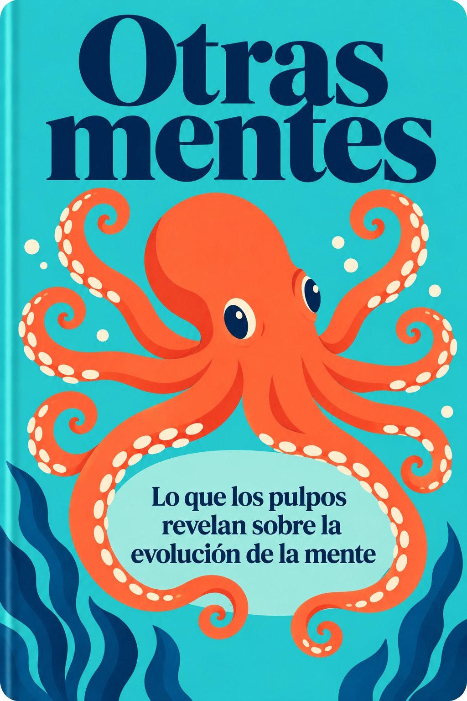
Otras mentes
Peter Godfrey-Smith · versión 2
Asignada al catálogo2026-09-12
Ver prompt
Edit the supplied finished Spanish cover, preserving its exact title Otras mentes, exact subtitle Lo que los pulpos revelan sobre la evolución de la mente, typography, turquoise background, coral-and-navy palette, rounded corners and vertical LEFT-edge book fold. Correct ONLY the octopus illustration: currently its arms are too few/ambiguous. Redraw the octopus body and arms so there are EXACTLY EIGHT clearly separate continuous arms, each with its own visible curled tip, four spreading toward the LEFT and four toward the RIGHT. Arrange the eight tips at distinct heights with clear turquoise negative space between every arm. No forked arms, no disconnected arm tips, no hidden or overlapping tips and no extra appendages. Keep the same friendly simple head and coherent two eyes. Two longer lower arms may curve around the pale-mint subtitle area, but never cross or cover any lettering. A few cream suction-cup dots per arm only. Crisp confident flat editorial DRAWING, not photoreal or 3D. Do not add numbers, labels or any extra text. Keep everything outside the octopus visually unchanged. Portrait 1024x1536.
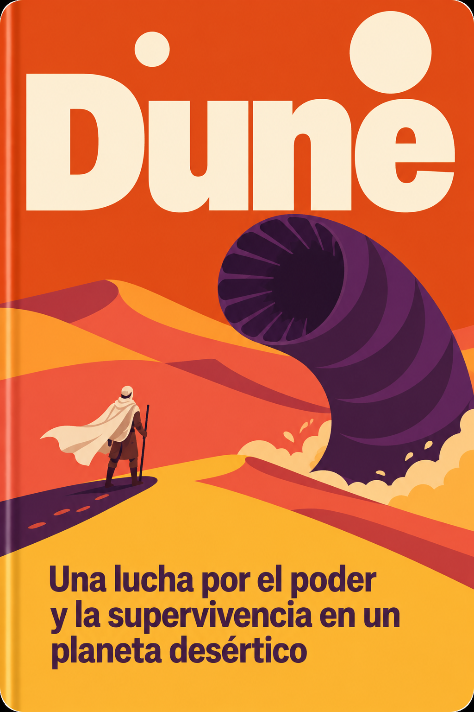
Dune
Frank Herbert · versión 1
Asignada al catálogo2026-09-12
Ver prompt
Use case: stylized-concept. Create ONE original finished Spanish book cover for Curva, portrait 1024x1536. The two input images are STYLE REFERENCES ONLY: bold flat editorial drawings, large beautiful typography, charming simplified shapes, vivid harmonious colors and a pressed book fold at the left edge. Invent a fresh composition; do not reproduce their scenes. This must look intentionally DRAWN, with crisp graphic silhouettes and a few expressive details, at most one flat shadow color per object. No photorealism, realistic painting, 3D render, collage, gradients, airbrushed lighting or grain. Human skin has natural colors; faces have coherent simple eyes, hands have coherent fingers. Every cover should look irresistible at 190px wide. Title is large and expressive; subtitle explains the actual book in generous readable lettering around 50-65px in the full image. Follow the individual palette and layout, not a repeated template. Front-on flat cover fills the canvas, rounded corners. MANDATORY: a narrow vertical pressed book fold 2% inside the LEFT edge across the ENTIRE height, with a fine highlight and darker groove, visible at thumbnail size. No perspective mockup, external shadow, logos, author names, year, watermark, labels or extra text. Only the exact Spanish title and subtitle below, with all accents.
Exact title: Dune
Exact subtitle: Una lucha por el poder y la supervivencia en un planeta desértico
Art direction: Saturated burnt-orange sky above sweeping golden-yellow and coral dunes. A gigantic deep-purple sandworm silhouette arcs partly out of the lower-right dune, stylized as one powerful simple curved shape with a small dark round opening, no teeth detail. A tiny cream-cloaked traveler seen from behind stands on a ridge at lower left. Two pale-cream moons of unequal size appear far apart near the top. DUNE in monumental warm-cream geometric heavy lettering across the upper third, preserving the exact title word Dune without other words. Subtitle dark purple on the clean golden dune foreground at bottom. Stunning graphic science-fiction landscape, flat solid colors, no actor portrait or movie poster layout, no realistic sand or cinematic rendering.
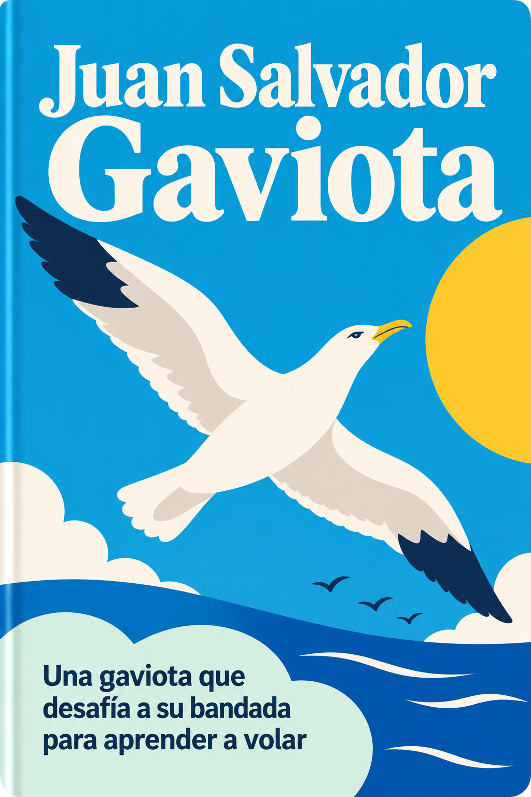
Juan Salvador Gaviota
Richard Bach · versión 1
Asignada al catálogo2026-09-12
Ver prompt
Use case: stylized-concept. Create ONE original finished Spanish book cover for Curva, portrait 1024x1536. The two input images are STYLE REFERENCES ONLY: bold flat editorial drawings, large beautiful typography, charming simplified shapes, vivid harmonious colors and a pressed book fold at the left edge. Invent a fresh composition; do not reproduce their scenes. This must look intentionally DRAWN, with crisp graphic silhouettes and a few expressive details, at most one flat shadow color per object. No photorealism, realistic painting, 3D render, collage, gradients, airbrushed lighting or grain. Human skin has natural colors; faces have coherent simple eyes, hands have coherent fingers. Every cover should look irresistible at 190px wide. Title is large and expressive; subtitle explains the actual book in generous readable lettering around 50-65px in the full image. Follow the individual palette and layout, not a repeated template. Front-on flat cover fills the canvas, rounded corners. MANDATORY: a narrow vertical pressed book fold 2% inside the LEFT edge across the ENTIRE height, with a fine highlight and darker groove, visible at thumbnail size. No perspective mockup, external shadow, logos, author names, year, watermark, labels or extra text. Only the exact Spanish title and subtitle below, with all accents.
Exact title: Juan Salvador Gaviota
Exact subtitle: Una gaviota que desafía a su bandada para aprender a volar
Art direction: Vivid sky-blue background, a broad cobalt ocean arc across the bottom and one golden-yellow sun cropped at the right edge. One huge beautifully simplified white-and-cream seagull with dark-navy wing tips and a small natural yellow beak soars diagonally upward through the center. Anatomically clear two wings, simple side-profile eye and elegant silhouette; three tiny navy bird silhouettes remain low near the horizon. Huge warm-cream literary serif title across top and left, Gaviota most prominent. Subtitle navy on a broad pale-mint cloud shape at bottom. Exuberant flat-drawn freedom and movement, no photoreal feathers, realistic clouds or decorative sparkle.
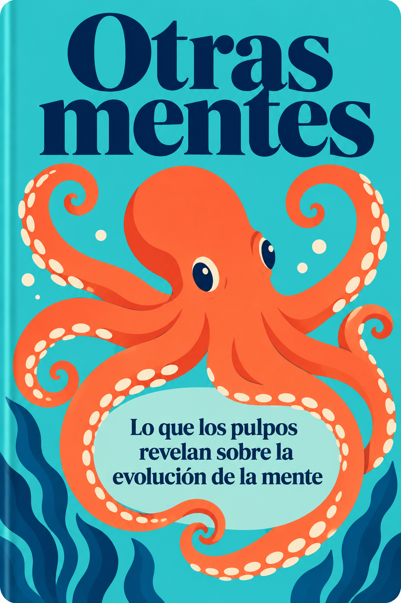
Otras mentes
Peter Godfrey-Smith · versión 1
Descartada2026-09-12
Ver prompt
Use case: stylized-concept. Create ONE original finished Spanish book cover for Curva, portrait 1024x1536. The two input images are STYLE REFERENCES ONLY: bold flat editorial drawings, large beautiful typography, charming simplified shapes, vivid harmonious colors and a pressed book fold at the left edge. Invent a fresh composition; do not reproduce their scenes. This must look intentionally DRAWN, with crisp graphic silhouettes and a few expressive details, at most one flat shadow color per object. No photorealism, realistic painting, 3D render, collage, gradients, airbrushed lighting or grain. Human skin has natural colors; faces have coherent simple eyes, hands have coherent fingers. Every cover should look irresistible at 190px wide. Title is large and expressive; subtitle explains the actual book in generous readable lettering around 50-65px in the full image. Follow the individual palette and layout, not a repeated template. Front-on flat cover fills the canvas, rounded corners. MANDATORY: a narrow vertical pressed book fold 2% inside the LEFT edge across the ENTIRE height, with a fine highlight and darker groove, visible at thumbnail size. No perspective mockup, external shadow, logos, author names, year, watermark, labels or extra text. Only the exact Spanish title and subtitle below, with all accents.
Exact title: Otras mentes
Exact subtitle: Lo que los pulpos revelan sobre la evolución de la mente
Art direction: Bright turquoise-blue background. One magnificent friendly coral-orange octopus occupies the lower two-thirds, with eight distinct gracefully curling arms, a simple rounded head, two coherent dark eyes and a few cream suction-cup dots only. Arms form an elegant open spiral with generous negative space, not a tangled knot. Two dark-cobalt seaweed blades frame the bottom corners. Huge dark-navy expressive serif Otras mentes across the upper third. Subtitle dark navy in a generous pale-mint oval of water framed by two arms in lower center. Beautiful flat marine drawing, no cartoon human expression, no realistic wet texture, no brain superimposed on animal.
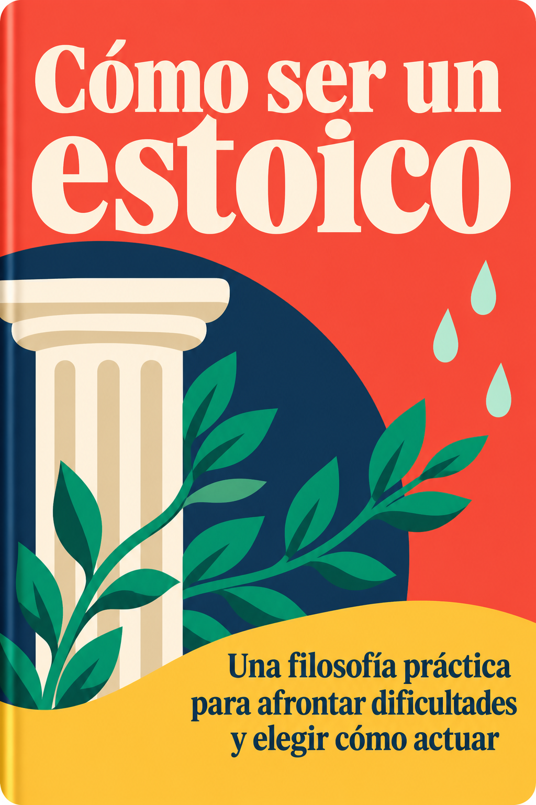
Cómo ser un estoico
Massimo Pigliucci · versión 1
Asignada al catálogo2026-09-12
Ver prompt
Use case: stylized-concept. Create ONE original finished Spanish book cover for Curva, portrait 1024x1536. The two input images are STYLE REFERENCES ONLY: bold flat editorial drawings, large beautiful typography, charming simplified shapes, vivid harmonious colors and a pressed book fold at the left edge. Invent a fresh composition; do not reproduce their scenes. This must look intentionally DRAWN, with crisp graphic silhouettes and a few expressive details, at most one flat shadow color per object. No photorealism, realistic painting, 3D render, collage, gradients, airbrushed lighting or grain. Human skin has natural colors; faces have coherent simple eyes, hands have coherent fingers. Every cover should look irresistible at 190px wide. Title is large and expressive; subtitle explains the actual book in generous readable lettering around 50-65px in the full image. Follow the individual palette and layout, not a repeated template. Front-on flat cover fills the canvas, rounded corners. MANDATORY: a narrow vertical pressed book fold 2% inside the LEFT edge across the ENTIRE height, with a fine highlight and darker groove, visible at thumbnail size. No perspective mockup, external shadow, logos, author names, year, watermark, labels or extra text. Only the exact Spanish title and subtitle below, with all accents.
Exact title: Cómo ser un estoico
Exact subtitle: Una filosofía práctica para afrontar dificultades y elegir cómo actuar
Art direction: Bright coral-red background. One monumental warm-cream ancient Greek column with just three bold flutes stands at lower left. A vivid emerald branch grows around its base and curves toward the right, while a large navy semicircle behind the column suggests shelter from three sparse mint raindrops at the far right. No bust, stern face, realistic marble or generic motivational landscape. Huge warm-cream condensed heavy serif title in upper half, estoico especially large. Subtitle dark navy on a broad golden-yellow ground shape at bottom. Fresh lively contemporary editorial drawing about steadiness and choices, not a gym or warrior poster.
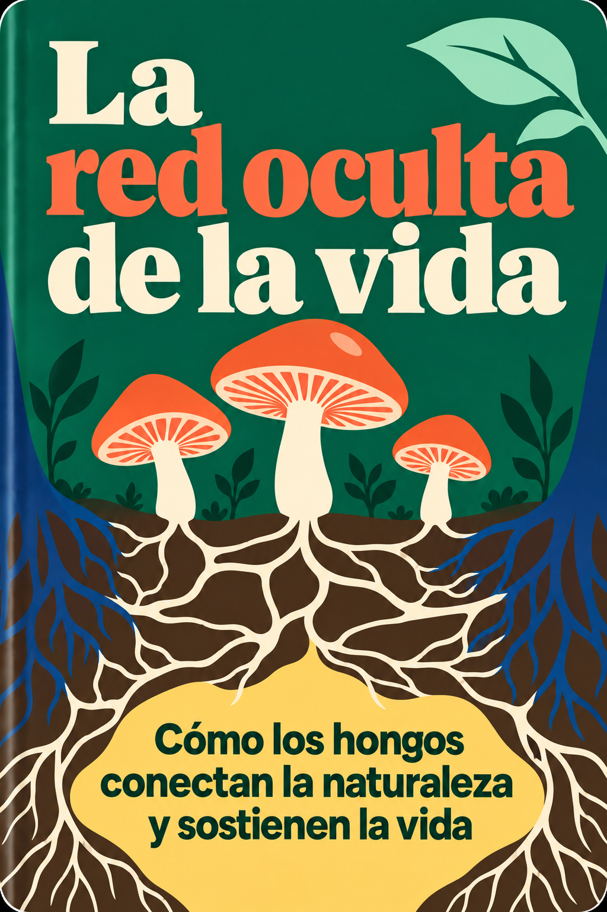
La red oculta de la vida
Merlin Sheldrake · versión 1
Asignada al catálogo2026-09-12
Ver prompt
Use case: stylized-concept. Create ONE original finished Spanish book cover for Curva, portrait 1024x1536. The two input images are STYLE REFERENCES ONLY: bold flat editorial drawings, large beautiful typography, charming simplified shapes, vivid harmonious colors and a pressed book fold at the left edge. Invent a fresh composition; do not reproduce their scenes. This must look intentionally DRAWN, with crisp graphic silhouettes and a few expressive details, at most one flat shadow color per object. No photorealism, realistic painting, 3D render, collage, gradients, airbrushed lighting or grain. Human skin has natural colors; faces have coherent simple eyes, hands have coherent fingers. Every cover should look irresistible at 190px wide. Title is large and expressive; subtitle explains the actual book in generous readable lettering around 50-65px in the full image. Follow the individual palette and layout, not a repeated template. Front-on flat cover fills the canvas, rounded corners. MANDATORY: a narrow vertical pressed book fold 2% inside the LEFT edge across the ENTIRE height, with a fine highlight and darker groove, visible at thumbnail size. No perspective mockup, external shadow, logos, author names, year, watermark, labels or extra text. Only the exact Spanish title and subtitle below, with all accents.
Exact title: La red oculta de la vida
Exact subtitle: Cómo los hongos conectan la naturaleza y sostienen la vida
Art direction: Deep saturated emerald background. Three boldly drawn mushrooms with coral-orange caps and cream stalks rise across the lower half. Below a curved ground line their cream mycelium spreads as a handful of large branching paths linking two cobalt tree-root silhouettes, a clear artistic metaphor not a labeled scientific diagram. One pale-mint leaf at upper right only. Huge warm-cream heavy serif title across upper half, red oculta prominent. Subtitle dark green on a generous warm-yellow underground shape at bottom, leaving branches around the margins. Rich botanical wonder in flat shapes, no psychedelic glow, microscopic realism or decorative clutter.
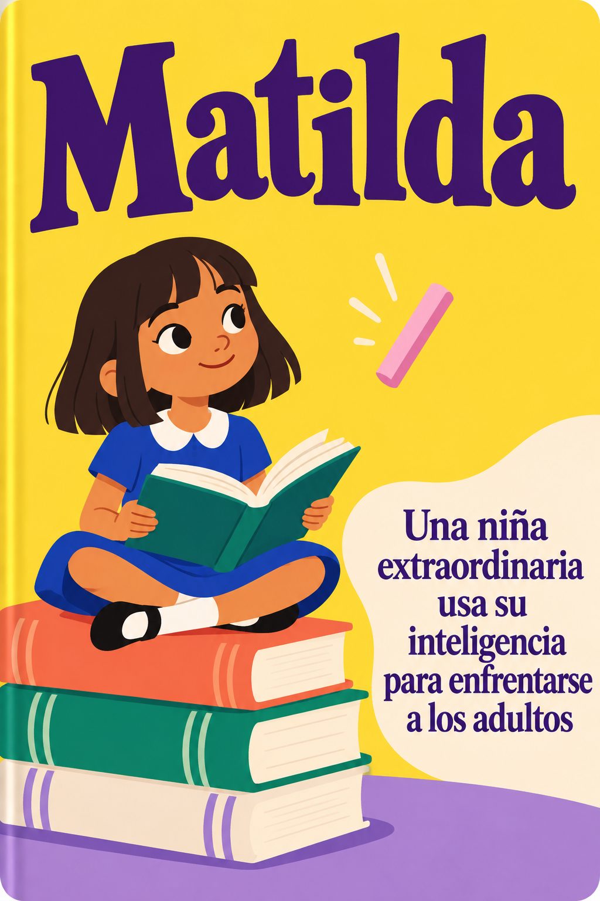
Matilda
Roald Dahl · versión 1
Asignada al catálogo2026-09-12
Ver prompt
Use case: stylized-concept. Create ONE original finished Spanish book cover for Curva, portrait 1024x1536. The two input images are STYLE REFERENCES ONLY: bold flat editorial drawings, large beautiful typography, charming simplified shapes, vivid harmonious colors and a pressed book fold at the left edge. Invent a fresh composition; do not reproduce their scenes. This must look intentionally DRAWN, with crisp graphic silhouettes and a few expressive details, at most one flat shadow color per object. No photorealism, realistic painting, 3D render, collage, gradients, airbrushed lighting or grain. Human skin has natural colors; faces have coherent simple eyes, hands have coherent fingers. Every cover should look irresistible at 190px wide. Title is large and expressive; subtitle explains the actual book in generous readable lettering around 50-65px in the full image. Follow the individual palette and layout, not a repeated template. Front-on flat cover fills the canvas, rounded corners. MANDATORY: a narrow vertical pressed book fold 2% inside the LEFT edge across the ENTIRE height, with a fine highlight and darker groove, visible at thumbnail size. No perspective mockup, external shadow, logos, author names, year, watermark, labels or extra text. Only the exact Spanish title and subtitle below, with all accents.
Exact title: Matilda
Exact subtitle: Una niña extraordinaria usa su inteligencia para enfrentarse a los adultos
Art direction: Sunny lemon-yellow background with a broad soft-lilac floor. A small bright-eyed girl with natural light-brown skin, a straight dark-brown bob and a vivid cobalt-blue dress sits cross-legged atop three oversized coral, emerald and cream books at lower left. She reads one open cream book. A simple pink chalk stick floats diagonally nearby as a hint of telekinesis, with NO written marks. Original character, no actor likeness and no imitation of Quentin Blake. Matilda in enormous deep-purple playful heavy serif across top. Subtitle dark purple on a generous cream page shape across lower right. Clearly flat drawn, charming coherent eyes and hands, strong clean silhouette, no glitter or tiny classroom details.
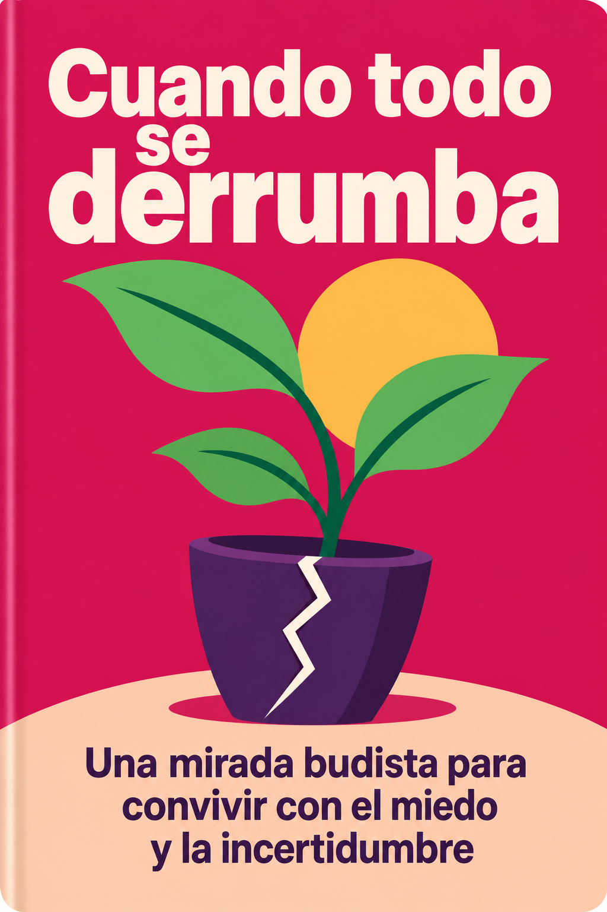
Cuando todo se derrumba
Pema Chödrön · versión 1
Asignada al catálogo2026-09-12
Ver prompt
Use case: stylized-concept. Create ONE original finished Spanish book cover for Curva, portrait 1024x1536. The two input images are STYLE REFERENCES ONLY: bold flat editorial drawings, large beautiful typography, charming simplified shapes, vivid harmonious colors and a pressed book fold at the left edge. Invent a fresh composition; do not reproduce their scenes. This must look intentionally DRAWN, with crisp graphic silhouettes and a few expressive details, at most one flat shadow color per object. No photorealism, realistic painting, 3D render, collage, gradients, airbrushed lighting or grain. Human skin has natural colors; faces have coherent simple eyes, hands have coherent fingers. Every cover should look irresistible at 190px wide. Title is large and expressive; subtitle explains the actual book in generous readable lettering around 50-65px in the full image. Follow the individual palette and layout, not a repeated template. Front-on flat cover fills the canvas, rounded corners. MANDATORY: a narrow vertical pressed book fold 2% inside the LEFT edge across the ENTIRE height, with a fine highlight and darker groove, visible at thumbnail size. No perspective mockup, external shadow, logos, author names, year, watermark, labels or extra text. Only the exact Spanish title and subtitle below, with all accents.
Exact title: Cuando todo se derrumba
Exact subtitle: Una mirada budista para convivir con el miedo y la incertidumbre
Art direction: Saturated raspberry-magenta background. A large deep-purple cracked plant pot sits at lower center, the split is a single clear cream zigzag, no shattered debris. A resilient emerald stem with three broad fresh-green leaves grows out of it, curving left. One warm-yellow circular sun floats behind the leaves. Calm but striking flat drawn metaphor, no realistic pottery, gradients or meditation figure. Huge cream rounded humanist sans title across top and right, derrumba especially strong. Subtitle dark purple on a broad pale-peach ground along bottom. Natural green leaves, bold warm/cool contrast, simple and emotionally warm.
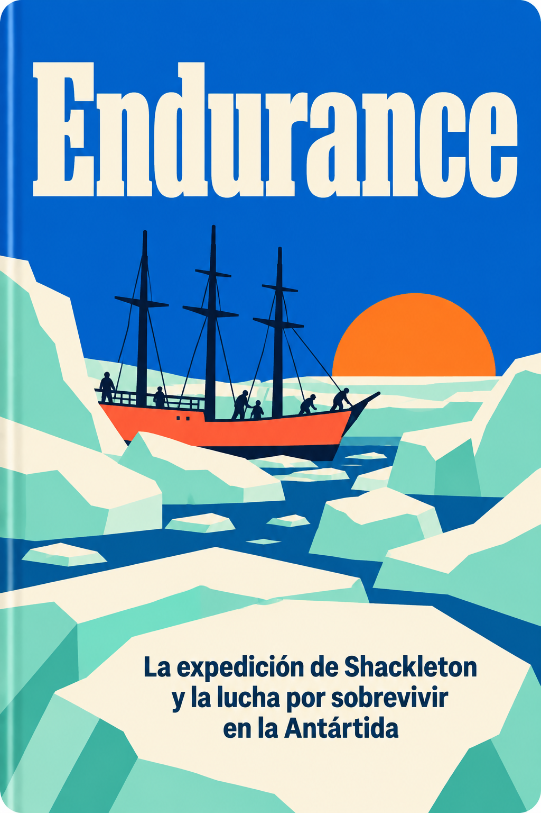
Endurance
Alfred Lansing · versión 1
Asignada al catálogo2026-09-12
Ver prompt
Use case: stylized-concept. Create ONE original finished Spanish book cover for Curva, portrait 1024x1536. The two input images are STYLE REFERENCES ONLY: bold flat editorial drawings, large beautiful typography, charming simplified shapes, vivid harmonious colors and a pressed book fold at the left edge. Invent a fresh composition; do not reproduce their scenes. This must look intentionally DRAWN, with crisp graphic silhouettes and a few expressive details, at most one flat shadow color per object. No photorealism, realistic painting, 3D render, collage, gradients, airbrushed lighting or grain. Human skin has natural colors; faces have coherent simple eyes, hands have coherent fingers. Every cover should look irresistible at 190px wide. Title is large and expressive; subtitle explains the actual book in generous readable lettering around 50-65px in the full image. Follow the individual palette and layout, not a repeated template. Front-on flat cover fills the canvas, rounded corners. MANDATORY: a narrow vertical pressed book fold 2% inside the LEFT edge across the ENTIRE height, with a fine highlight and darker groove, visible at thumbnail size. No perspective mockup, external shadow, logos, author names, year, watermark, labels or extra text. Only the exact Spanish title and subtitle below, with all accents.
Exact title: Endurance
Exact subtitle: La expedición de Shackleton y la lucha por sobrevivir en la Antártida
Art direction: Electric cobalt sky, enormous pale-mint and cream angular ice floes in the lower half. A small but boldly outlined coral wooden expedition ship with three dark-navy masts is wedged between the ice blocks, shown from the side, no delicate rigging or realistic wood. One vivid orange sun sits at the horizon. Endurance in enormous warm-cream condensed slab serif across upper third; subtitle navy on a broad clean cream ice floe near bottom. Dramatic graphic adventure poster with only a few strong shapes, human struggle suggested by tiny simple silhouettes on the deck without faces. No storm effects or photoreal ice.
El arte de viajar
Alain de Botton · versión 1
Asignada al catálogo2026-09-12
Ver prompt
Use case: stylized-concept. Create ONE original finished Spanish book cover for Curva, portrait 1024x1536. The two input images are STYLE REFERENCES ONLY: bold flat editorial drawings, large beautiful typography, charming simplified shapes, vivid harmonious colors and a pressed book fold at the left edge. Invent a fresh composition; do not reproduce their scenes. This must look intentionally DRAWN, with crisp graphic silhouettes and a few expressive details, at most one flat shadow color per object. No photorealism, realistic painting, 3D render, collage, gradients, airbrushed lighting or grain. Human skin has natural colors; faces have coherent simple eyes, hands have coherent fingers. Every cover should look irresistible at 190px wide. Title is large and expressive; subtitle explains the actual book in generous readable lettering around 50-65px in the full image. Follow the individual palette and layout, not a repeated template. Front-on flat cover fills the canvas, rounded corners. MANDATORY: a narrow vertical pressed book fold 2% inside the LEFT edge across the ENTIRE height, with a fine highlight and darker groove, visible at thumbnail size. No perspective mockup, external shadow, logos, author names, year, watermark, labels or extra text. Only the exact Spanish title and subtitle below, with all accents.
Exact title: El arte de viajar
Exact subtitle: Cómo la curiosidad y la atención transforman nuestra manera de viajar
Art direction: Rich orange-tangerine background. A huge turquoise-blue suitcase lies open in the lower half, its cream interior becomes a flat graphic landscape: one cobalt mountain, one coral sun and a curving emerald path. A large cream magnifying-glass-shaped loop rises from the handle and frames the sun, a playful metaphor for looking carefully. No realistic luggage, travel stickers, airplanes or tiny icons. Title in enormous warm-cream heavy serif occupying upper half, viajar large and gently slanted. Subtitle dark cobalt on the clear cream suitcase lining across bottom. Off-center, cheerful and intellectually curious composition.
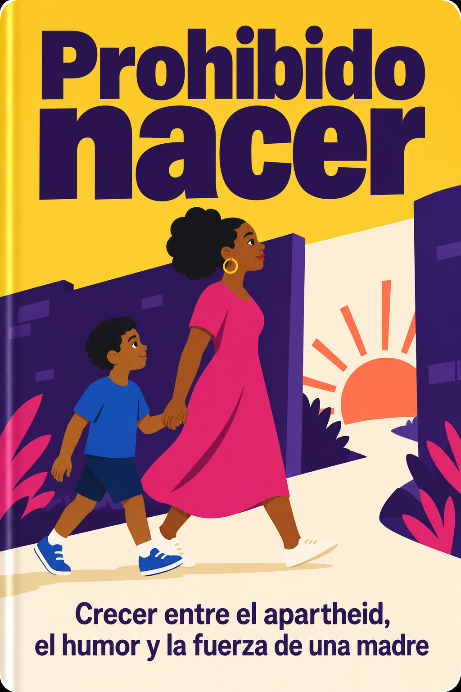
Prohibido nacer
Trevor Noah · versión 1
Asignada al catálogo2026-09-12
Ver prompt
Use case: stylized-concept. Create ONE original finished Spanish book cover for Curva, portrait 1024x1536. The two input images are STYLE REFERENCES ONLY: bold flat editorial drawings, large beautiful typography, charming simplified shapes, vivid harmonious colors and a pressed book fold at the left edge. Invent a fresh composition; do not reproduce their scenes. This must look intentionally DRAWN, with crisp graphic silhouettes and a few expressive details, at most one flat shadow color per object. No photorealism, realistic painting, 3D render, collage, gradients, airbrushed lighting or grain. Human skin has natural colors; faces have coherent simple eyes, hands have coherent fingers. Every cover should look irresistible at 190px wide. Title is large and expressive; subtitle explains the actual book in generous readable lettering around 50-65px in the full image. Follow the individual palette and layout, not a repeated template. Front-on flat cover fills the canvas, rounded corners. MANDATORY: a narrow vertical pressed book fold 2% inside the LEFT edge across the ENTIRE height, with a fine highlight and darker groove, visible at thumbnail size. No perspective mockup, external shadow, logos, author names, year, watermark, labels or extra text. Only the exact Spanish title and subtitle below, with all accents.
Exact title: Prohibido nacer
Exact subtitle: Crecer entre el apartheid, el humor y la fuerza de una madre
Art direction: Bright warm-yellow background, vivid magenta and cobalt accents. A flat-drawn Black mother with natural dark-brown skin in a magenta dress and a boy with natural medium-brown skin wearing a cobalt shirt walk together toward the right in the lower half. Mother and child seen in clear simple profile, joined hands anatomically coherent; hopeful expressions without exaggerated smiles. Behind them a large dark-purple wall with a broad cream doorway opens onto a coral rising sun. Title in enormous dark-purple sturdy sans across top, nacer especially bold. Subtitle dark purple on the cream foreground at bottom. Respectful lively memoir illustration, no celebrity portrait, no stereotype costume and no extra political slogans.
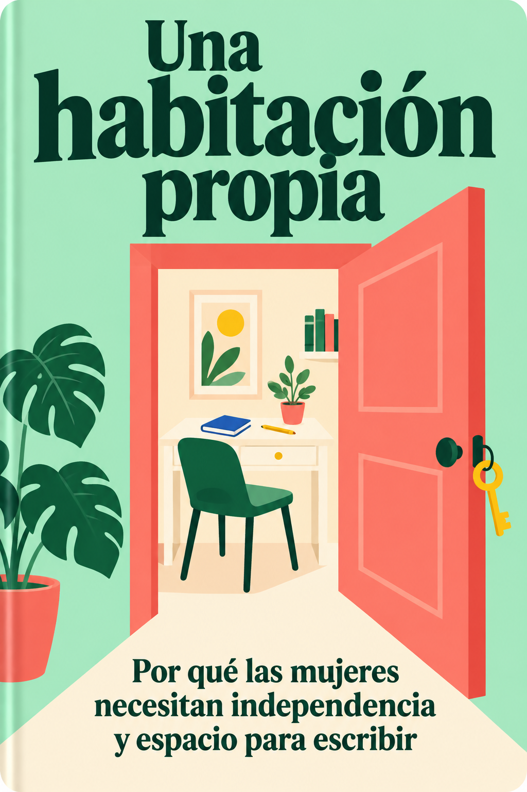
Una habitación propia
Virginia Woolf · versión 1
Asignada al catálogo2026-09-12
Ver prompt
Use case: stylized-concept. Create ONE original finished Spanish book cover for Curva, portrait 1024x1536. The two input images are STYLE REFERENCES ONLY: bold flat editorial drawings, large beautiful typography, charming simplified shapes, vivid harmonious colors and a pressed book fold at the left edge. Invent a fresh composition; do not reproduce their scenes. This must look intentionally DRAWN, with crisp graphic silhouettes and a few expressive details, at most one flat shadow color per object. No photorealism, realistic painting, 3D render, collage, gradients, airbrushed lighting or grain. Human skin has natural colors; faces have coherent simple eyes, hands have coherent fingers. Every cover should look irresistible at 190px wide. Title is large and expressive; subtitle explains the actual book in generous readable lettering around 50-65px in the full image. Follow the individual palette and layout, not a repeated template. Front-on flat cover fills the canvas, rounded corners. MANDATORY: a narrow vertical pressed book fold 2% inside the LEFT edge across the ENTIRE height, with a fine highlight and darker groove, visible at thumbnail size. No perspective mockup, external shadow, logos, author names, year, watermark, labels or extra text. Only the exact Spanish title and subtitle below, with all accents.
Exact title: Una habitación propia
Exact subtitle: Por qué las mujeres necesitan independencia y espacio para escribir
Art direction: Fresh light mint-green background. A giant coral-pink open door frames a small cream writing desk and a forest-green chair, seen as simple flat editorial shapes. On the desk one cobalt notebook and one golden pencil. A small brass-yellow key hangs outside the doorway at lower right, symbolizing independence. No person, realistic interior or perspective rendering; graphic theatrical cutout composition. Huge deep-green bold literary serif title across upper half, habitación especially prominent, preserving accent. Subtitle deep green on a wide warm-cream open floor shape at bottom. Bright, inviting, spacious and witty.
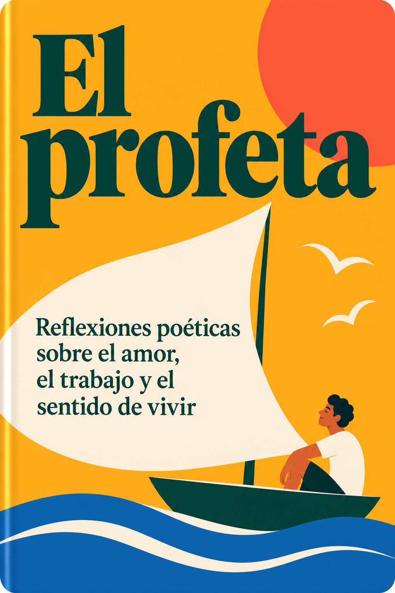
El profeta
Khalil Gibran · versión 1
Asignada al catálogo2026-09-12
Ver prompt
Use case: stylized-concept. Create ONE original finished Spanish book cover for Curva, portrait 1024x1536. The two input images are STYLE REFERENCES ONLY: bold flat editorial drawings, large beautiful typography, charming simplified shapes, vivid harmonious colors and a pressed book fold at the left edge. Invent a fresh composition; do not reproduce their scenes. This must look intentionally DRAWN, with crisp graphic silhouettes and a few expressive details, at most one flat shadow color per object. No photorealism, realistic painting, 3D render, collage, gradients, airbrushed lighting or grain. Human skin has natural colors; faces have coherent simple eyes, hands have coherent fingers. Every cover should look irresistible at 190px wide. Title is large and expressive; subtitle explains the actual book in generous readable lettering around 50-65px in the full image. Follow the individual palette and layout, not a repeated template. Front-on flat cover fills the canvas, rounded corners. MANDATORY: a narrow vertical pressed book fold 2% inside the LEFT edge across the ENTIRE height, with a fine highlight and darker groove, visible at thumbnail size. No perspective mockup, external shadow, logos, author names, year, watermark, labels or extra text. Only the exact Spanish title and subtitle below, with all accents.
Exact title: El profeta
Exact subtitle: Reflexiones poéticas sobre el amor, el trabajo y el sentido de vivir
Art direction: Luminous saffron-orange background with a broad coral-red sun partly cropped at upper right. A monumental cream sail unfurls from the lower left into the center, its outline gently echoes an open palm without depicting actual fingers. Beneath it one deep-emerald boat rides two flat cobalt wave shapes. Serene lyrical Mediterranean mood, no religious iconography or realistic sea. Enormous deep-emerald expressive serif El profeta across top and middle left. Subtitle in dark emerald across the generous cream sail in three clean lines. Elegant editorial drawing, bold flowing shapes and only three principal objects.
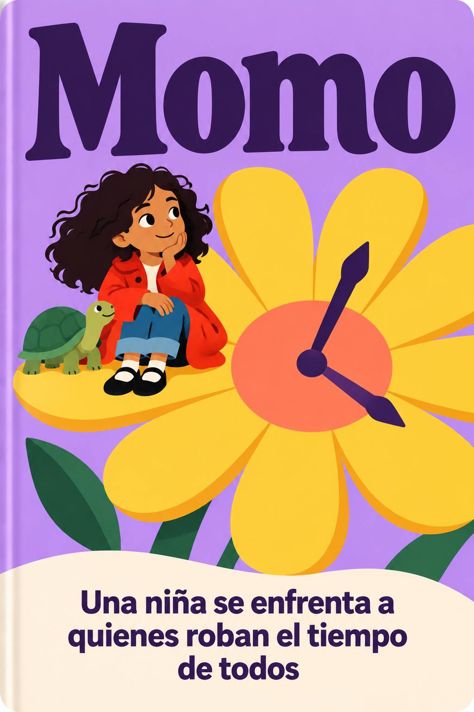
Momo
Michael Ende · versión 1
Asignada al catálogo2026-09-12
Ver prompt
Use case: stylized-concept. Create ONE original finished Spanish book cover for Curva, portrait 1024x1536. The two input images are STYLE REFERENCES ONLY: bold flat editorial drawings, large beautiful typography, charming simplified shapes, vivid harmonious colors and a pressed book fold at the left edge. Invent a fresh composition; do not reproduce their scenes. This must look intentionally DRAWN, with crisp graphic silhouettes and a few expressive details, at most one flat shadow color per object. No photorealism, realistic painting, 3D render, collage, gradients, airbrushed lighting or grain. Human skin has natural colors; faces have coherent simple eyes, hands have coherent fingers. Every cover should look irresistible at 190px wide. Title is large and expressive; subtitle explains the actual book in generous readable lettering around 50-65px in the full image. Follow the individual palette and layout, not a repeated template. Front-on flat cover fills the canvas, rounded corners. MANDATORY: a narrow vertical pressed book fold 2% inside the LEFT edge across the ENTIRE height, with a fine highlight and darker groove, visible at thumbnail size. No perspective mockup, external shadow, logos, author names, year, watermark, labels or extra text. Only the exact Spanish title and subtitle below, with all accents.
Exact title: Momo
Exact subtitle: Una niña se enfrenta a quienes roban el tiempo de todos
Art direction: Bright lavender background with a huge warm-yellow flower shaped like a clock filling the center and lower right: twelve broad petals, a coral center and two dark-purple clock hands, no numbers. A small curly-haired girl with natural tan skin and a vivid red oversized coat stands on the left edge of the flower beside a little green tortoise, both clearly drawn and anatomically simple. Huge deep-purple playful heavy serif Momo at the top. Subtitle in deep purple on a clean cream curved ground along bottom. Whimsical literary poster, generous negative space, original character design, no film imagery or imitation of a published cover.
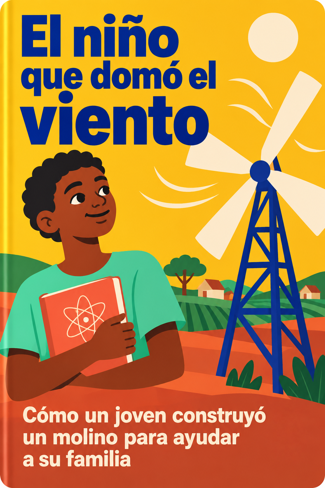
El niño que domó el viento
William Kamkwamba y Bryan Mealer · versión 1
Asignada al catálogo2026-09-12
Ver prompt
Use case: stylized-concept. Create ONE original finished Spanish book cover for Curva, portrait 1024x1536. The two input images are STYLE REFERENCES ONLY: bold flat editorial drawings, large beautiful typography, charming simplified shapes, vivid harmonious colors and a pressed book fold at the left edge. Invent a fresh composition; do not reproduce their scenes. This must look intentionally DRAWN, with crisp graphic silhouettes and a few expressive details, at most one flat shadow color per object. No photorealism, realistic painting, 3D render, collage, gradients, airbrushed lighting or grain. Human skin has natural colors; faces have coherent simple eyes, hands have coherent fingers. Every cover should look irresistible at 190px wide. Title is large and expressive; subtitle explains the actual book in generous readable lettering around 50-65px in the full image. Follow the individual palette and layout, not a repeated template. Front-on flat cover fills the canvas, rounded corners. MANDATORY: a narrow vertical pressed book fold 2% inside the LEFT edge across the ENTIRE height, with a fine highlight and darker groove, visible at thumbnail size. No perspective mockup, external shadow, logos, author names, year, watermark, labels or extra text. Only the exact Spanish title and subtitle below, with all accents.
Exact title: El niño que domó el viento
Exact subtitle: Cómo un joven construyó un molino para ayudar a su familia
Art direction: Brilliant golden-yellow sky and rich terracotta ground. A large handmade windmill with four clear broad cream blades on a simple cobalt triangular tower dominates the right and lower half; a small green field curves behind it. On the left a smiling illustrated Black teenage boy with natural dark-brown skin and a mint shirt holds a closed coral science book. Human figure simple and charming, no documentary realism or film likeness. Dark-cobalt heavy sans title at the top and down the left, viento especially large. Subtitle cream on the broad terracotta foreground. Clear graphic sense of ingenuity and fresh air, no dense machinery, no tiny lettering.
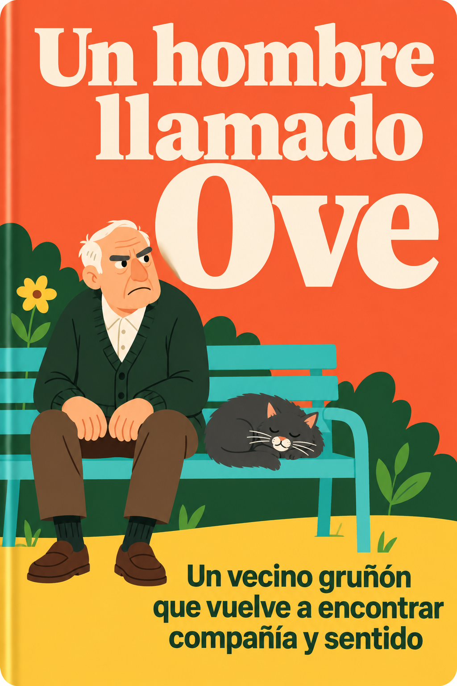
Un hombre llamado Ove
Fredrik Backman · versión 1
Asignada al catálogo2026-09-12
Ver prompt
Use case: stylized-concept. Create ONE original finished Spanish book cover for Curva, portrait 1024x1536. The two input images are STYLE REFERENCES ONLY: bold flat editorial drawings, large beautiful typography, charming simplified shapes, vivid harmonious colors and a pressed book fold at the left edge. Invent a fresh composition; do not reproduce their scenes. This must look intentionally DRAWN, with crisp graphic silhouettes and a few expressive details, at most one flat shadow color per object. No photorealism, realistic painting, 3D render, collage, gradients, airbrushed lighting or grain. Human skin has natural colors; faces have coherent simple eyes, hands have coherent fingers. Every cover should look irresistible at 190px wide. Title is large and expressive; subtitle explains the actual book in generous readable lettering around 50-65px in the full image. Follow the individual palette and layout, not a repeated template. Front-on flat cover fills the canvas, rounded corners. MANDATORY: a narrow vertical pressed book fold 2% inside the LEFT edge across the ENTIRE height, with a fine highlight and darker groove, visible at thumbnail size. No perspective mockup, external shadow, logos, author names, year, watermark, labels or extra text. Only the exact Spanish title and subtitle below, with all accents.
Exact title: Un hombre llamado Ove
Exact subtitle: Un vecino gruñón que vuelve a encontrar compañía y sentido
Art direction: Vibrant coral-orange background. An endearing flat-drawn elderly man in a forest-green cardigan and cream shirt sits stiffly on a turquoise garden bench at lower left. White hair, broad eyebrows, natural light skin, two simple aligned eyes, gently grumpy expression. A scruffy charcoal-gray cat curls beside him and one yellow flower peeks from behind the bench. Warm humor, simple coherent hands resting on knees, no photoreal portrait or actor likeness. Huge cream friendly heavy serif title across upper half with Ove enormous. Subtitle dark green on a generous warm-yellow ground shape across bottom. Only a few large shapes and no cluttered neighborhood.
La biblioteca de la medianoche
Matt Haig · versión 1
Asignada al catálogo2026-09-12
Ver prompt
Use case: stylized-concept. Create ONE original finished Spanish book cover for Curva, portrait 1024x1536. The two input images are STYLE REFERENCES ONLY: bold flat editorial drawings, large beautiful typography, charming simplified shapes, vivid harmonious colors and a pressed book fold at the left edge. Invent a fresh composition; do not reproduce their scenes. This must look intentionally DRAWN, with crisp graphic silhouettes and a few expressive details, at most one flat shadow color per object. No photorealism, realistic painting, 3D render, collage, gradients, airbrushed lighting or grain. Human skin has natural colors; faces have coherent simple eyes, hands have coherent fingers. Every cover should look irresistible at 190px wide. Title is large and expressive; subtitle explains the actual book in generous readable lettering around 50-65px in the full image. Follow the individual palette and layout, not a repeated template. Front-on flat cover fills the canvas, rounded corners. MANDATORY: a narrow vertical pressed book fold 2% inside the LEFT edge across the ENTIRE height, with a fine highlight and darker groove, visible at thumbnail size. No perspective mockup, external shadow, logos, author names, year, watermark, labels or extra text. Only the exact Spanish title and subtitle below, with all accents.
Exact title: La biblioteca de la medianoche
Exact subtitle: Una biblioteca donde cada libro permite vivir una vida diferente
Art direction: Saturated midnight-indigo background with a large vivid mint-green open doorway in the lower half, its shape formed by two tall bookcases of broad coral, lilac and yellow book spines with NO writing. A tiny illustrated woman seen from behind in a yellow coat stands on the cream threshold; beyond her a simple violet path forks toward two mint hills and a yellow moon. Surreal but strictly flat and uncluttered. Large cream literary serif title in the upper half, medianoche especially prominent. Subtitle in dark indigo on a broad mint step along bottom. A luminous magical library feeling created by solid color contrast, not glow or realistic lighting.
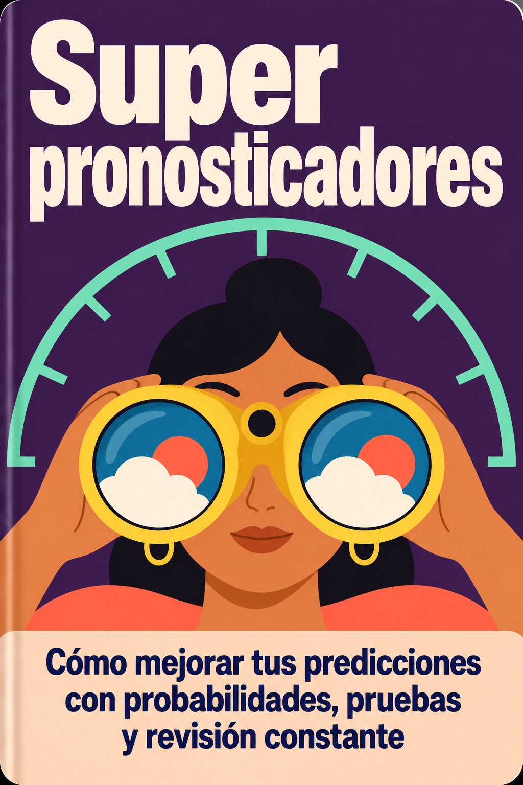
Superpronosticadores
Tetlock y Gardner · versión 1
Instalada2026-09-12
Ver prompt
Use case: stylized-concept. Create one original finished Spanish book cover for Curva, portrait 1024x1536. The two input images are STYLE REFERENCES ONLY: confident flat editorial drawings, beautifully composed large typography, charming simplified shapes, harmonious vivid colors and a left-edge book fold. Invent a new composition, do not copy their scenes. Clearly drawn illustration with strong clean silhouettes and only a few intentional details, at most one flat shadow shade per object. No photorealism, realistic anatomy, 3D rendering, collage or grain. People have coherent simplified eyes and hands, naturally colored skin. Make the book attractive in a varied mobile library; keep every title and subtitle readable at 190px wide. The subtitle explains the book, so give it generous space and a strong readable size, about 50-65px in the full image, not tiny decorative lettering. Obey the individual palette and layout instead of a repeated template. Front-on flat cover fills canvas, rounded corners. MANDATORY: a narrow vertical pressed fold 2% inside the LEFT edge for the entire height, with a fine highlight and a darker groove, clearly visible even on thumbnail. No perspective mockup, external shadow, logos, author names, year, watermark, or extra text. Only the exact Spanish title and subtitle below, preserving all accents and punctuation.
Exact title: Superpronosticadores
Exact subtitle: Cómo mejorar tus predicciones con probabilidades, pruebas y revisión constante
Art direction: Deep aubergine-purple background. A giant golden-yellow pair of binoculars fills lower center in front-on view; through its two round lenses a simple cream cloud and coral sun partly overlap, symbolizing uncertain outcomes, not a crystal ball. A mint-green curved measuring arc with a few broad tick marks frames the binoculars, no percentages or text. The long one-word title Superpronosticadores in enormous warm-cream condensed sans, broken cleanly as Super / pronosticadores without hyphen if necessary. Subtitle dark navy on a wide pale-peach clear band at bottom. Sharp optimistic graphic illustration, large clean forms, no mysticism or literal forecasts.
Un paseo aleatorio por Wall Street
Burton Malkiel · versión 1
Instalada2026-09-12
Ver prompt
Use case: stylized-concept. Create one original finished Spanish book cover for Curva, portrait 1024x1536. The two input images are STYLE REFERENCES ONLY: confident flat editorial drawings, beautifully composed large typography, charming simplified shapes, harmonious vivid colors and a left-edge book fold. Invent a new composition, do not copy their scenes. Clearly drawn illustration with strong clean silhouettes and only a few intentional details, at most one flat shadow shade per object. No photorealism, realistic anatomy, 3D rendering, collage or grain. People have coherent simplified eyes and hands, naturally colored skin. Make the book attractive in a varied mobile library; keep every title and subtitle readable at 190px wide. The subtitle explains the book, so give it generous space and a strong readable size, about 50-65px in the full image, not tiny decorative lettering. Obey the individual palette and layout instead of a repeated template. Front-on flat cover fills canvas, rounded corners. MANDATORY: a narrow vertical pressed fold 2% inside the LEFT edge for the entire height, with a fine highlight and a darker groove, clearly visible even on thumbnail. No perspective mockup, external shadow, logos, author names, year, watermark, or extra text. Only the exact Spanish title and subtitle below, preserving all accents and punctuation.
Exact title: Un paseo aleatorio por Wall Street
Exact subtitle: Por qué es difícil predecir la bolsa y cómo diversificar
Art direction: Mint-green background. A pair of oversized cobalt-blue walking shoes with cream soles strides along a coral winding ribbon path between three simple forest-green skyscraper silhouettes, only lower legs in warm-cream trousers visible, no upper person. The path meanders sideways rather than promising an upward arrow. Title in huge dark-green friendly heavy serif at top, Wall Street especially prominent. Subtitle navy on a cream broad curve along bottom. Light humorous flat financial-literacy illustration, no stock tickers, rockets, luxury imagery, investment return guarantees or tiny icons.
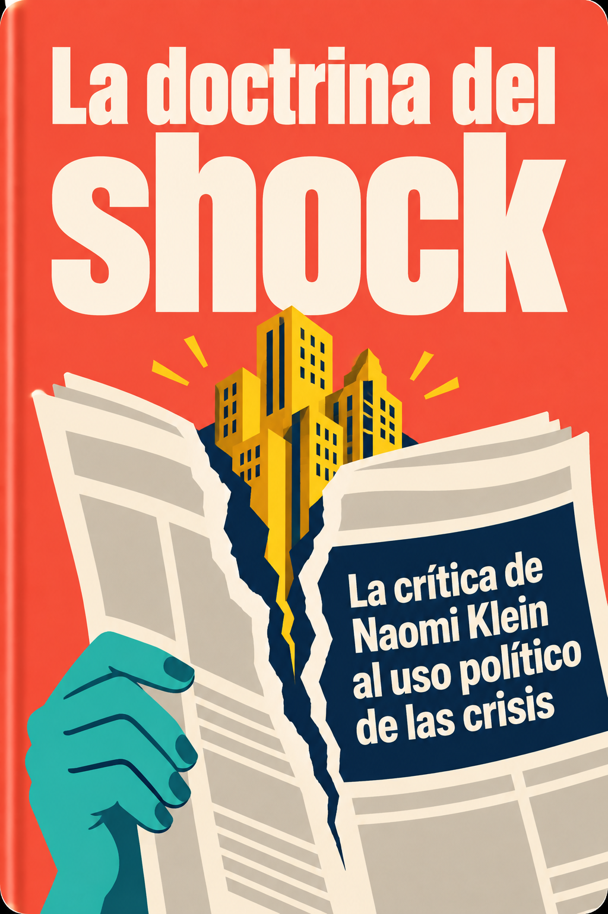
La doctrina del shock
Naomi Klein · versión 1
Instalada2026-09-12
Ver prompt
Use case: stylized-concept. Create one original finished Spanish book cover for Curva, portrait 1024x1536. The two input images are STYLE REFERENCES ONLY: confident flat editorial drawings, beautifully composed large typography, charming simplified shapes, harmonious vivid colors and a left-edge book fold. Invent a new composition, do not copy their scenes. Clearly drawn illustration with strong clean silhouettes and only a few intentional details, at most one flat shadow shade per object. No photorealism, realistic anatomy, 3D rendering, collage or grain. People have coherent simplified eyes and hands, naturally colored skin. Make the book attractive in a varied mobile library; keep every title and subtitle readable at 190px wide. The subtitle explains the book, so give it generous space and a strong readable size, about 50-65px in the full image, not tiny decorative lettering. Obey the individual palette and layout instead of a repeated template. Front-on flat cover fills canvas, rounded corners. MANDATORY: a narrow vertical pressed fold 2% inside the LEFT edge for the entire height, with a fine highlight and a darker groove, clearly visible even on thumbnail. No perspective mockup, external shadow, logos, author names, year, watermark, or extra text. Only the exact Spanish title and subtitle below, preserving all accents and punctuation.
Exact title: La doctrina del shock
Exact subtitle: La crítica de Naomi Klein al uso político de las crisis
Art direction: Vivid coral-red background. A giant cream newspaper folded across the lower half has a bold jagged navy tear down its middle, no printed words on newspaper. Through the tear rises a flat golden-yellow stack of simple office-building blocks, while a turquoise hand at bottom holds the newspaper edge with anatomically coherent simplified fingers. Huge cream condensed title across upper half, shock the largest word. Subtitle in cream on a broad navy rectangular negative-space area on the newspaper. Visually forceful original editorial drawing about crises and economic power, not physical shock therapy, explosions or gore.
El capital en el siglo XXI
Thomas Piketty · versión 1
Instalada2026-09-12
Ver prompt
Use case: stylized-concept. Create one original finished Spanish book cover for Curva, portrait 1024x1536. The two input images are STYLE REFERENCES ONLY: confident flat editorial drawings, beautifully composed large typography, charming simplified shapes, harmonious vivid colors and a left-edge book fold. Invent a new composition, do not copy their scenes. Clearly drawn illustration with strong clean silhouettes and only a few intentional details, at most one flat shadow shade per object. No photorealism, realistic anatomy, 3D rendering, collage or grain. People have coherent simplified eyes and hands, naturally colored skin. Make the book attractive in a varied mobile library; keep every title and subtitle readable at 190px wide. The subtitle explains the book, so give it generous space and a strong readable size, about 50-65px in the full image, not tiny decorative lettering. Obey the individual palette and layout instead of a repeated template. Front-on flat cover fills canvas, rounded corners. MANDATORY: a narrow vertical pressed fold 2% inside the LEFT edge for the entire height, with a fine highlight and a darker groove, clearly visible even on thumbnail. No perspective mockup, external shadow, logos, author names, year, watermark, or extra text. Only the exact Spanish title and subtitle below, preserving all accents and punctuation.
Exact title: El capital en el siglo XXI
Exact subtitle: Cómo se acumula la riqueza y por qué aumenta la desigualdad
Art direction: Deep saturated cobalt background. Three stacks of warm-golden coins form very unequal building silhouettes across lower half, one towering on right and two much lower left. A warm-cream stairway winds between the stacks and stops short of the highest tower, subtle metaphor for unequal access. No people, currency symbols, axes or numerical claims. Huge warm-cream heavy slab serif title across upper half, capital dominant and XXI prominent, exact title. Subtitle dark navy on a broad pale-apricot foreground at bottom. Distinctive geometric editorial drawing with coral window accents, no realistic metallic sheen.
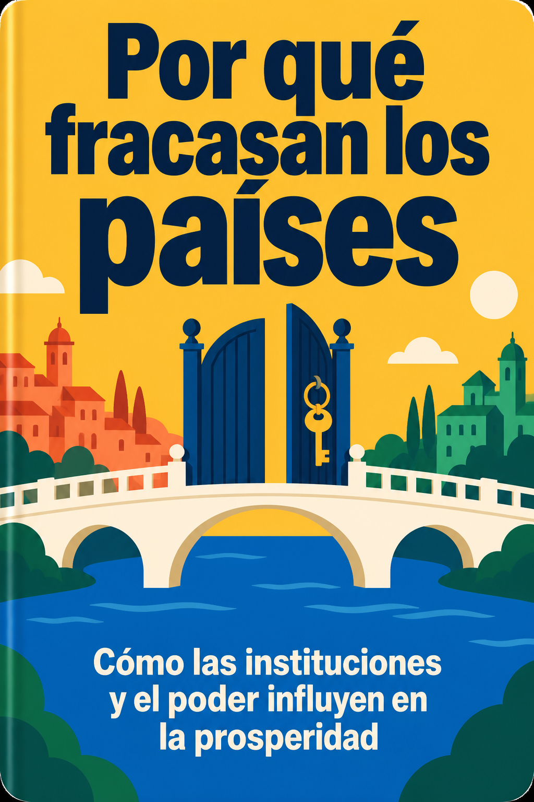
Por qué fracasan los países
Acemoglu y Robinson · versión 1
Instalada2026-09-12
Ver prompt
Use case: stylized-concept. Create one original finished Spanish book cover for Curva, portrait 1024x1536. The two input images are STYLE REFERENCES ONLY: confident flat editorial drawings, beautifully composed large typography, charming simplified shapes, harmonious vivid colors and a left-edge book fold. Invent a new composition, do not copy their scenes. Clearly drawn illustration with strong clean silhouettes and only a few intentional details, at most one flat shadow shade per object. No photorealism, realistic anatomy, 3D rendering, collage or grain. People have coherent simplified eyes and hands, naturally colored skin. Make the book attractive in a varied mobile library; keep every title and subtitle readable at 190px wide. The subtitle explains the book, so give it generous space and a strong readable size, about 50-65px in the full image, not tiny decorative lettering. Obey the individual palette and layout instead of a repeated template. Front-on flat cover fills canvas, rounded corners. MANDATORY: a narrow vertical pressed fold 2% inside the LEFT edge for the entire height, with a fine highlight and a darker groove, clearly visible even on thumbnail. No perspective mockup, external shadow, logos, author names, year, watermark, or extra text. Only the exact Spanish title and subtitle below, preserving all accents and punctuation.
Exact title: Por qué fracasan los países
Exact subtitle: Cómo las instituciones y el poder influyen en la prosperidad
Art direction: Sunny orange-yellow background. A single large cream bridge spans across lower center between a coral town silhouette at left and a green town silhouette at right. In the middle a giant dark-blue gate stands partly open, with a simple brass-colored key on a cream keyring hanging beside it, representing institutions and access. Do not map sides to any ethnicity or real country. Huge navy condensed title across upper half, países especially dominant. Subtitle cream on the broad cobalt river under the bridge. Flat inviting political-economy poster, no flags, realistic cities or war imagery.
Un pequeño empujón
Thaler y Sunstein · versión 1
Instalada2026-09-12
Ver prompt
Use case: stylized-concept. Create one original finished Spanish book cover for Curva, portrait 1024x1536. The two input images are STYLE REFERENCES ONLY: confident flat editorial drawings, beautifully composed large typography, charming simplified shapes, harmonious vivid colors and a left-edge book fold. Invent a new composition, do not copy their scenes. Clearly drawn illustration with strong clean silhouettes and only a few intentional details, at most one flat shadow shade per object. No photorealism, realistic anatomy, 3D rendering, collage or grain. People have coherent simplified eyes and hands, naturally colored skin. Make the book attractive in a varied mobile library; keep every title and subtitle readable at 190px wide. The subtitle explains the book, so give it generous space and a strong readable size, about 50-65px in the full image, not tiny decorative lettering. Obey the individual palette and layout instead of a repeated template. Front-on flat cover fills canvas, rounded corners. MANDATORY: a narrow vertical pressed fold 2% inside the LEFT edge for the entire height, with a fine highlight and a darker groove, clearly visible even on thumbnail. No perspective mockup, external shadow, logos, author names, year, watermark, or extra text. Only the exact Spanish title and subtitle below, preserving all accents and punctuation.
Exact title: Un pequeño empujón
Exact subtitle: Cómo presentar las opciones influye en las decisiones que tomamos
Art direction: Fresh lime-yellow background. A large curved cream path forks gently toward two simplified doors, one cobalt and one coral, in lower half. A single oversized natural-brown hand entering from the right lightly rotates a small deep-green signpost toward one door; the signpost has no words, just a simple arrow. No person being pushed or puppet strings. Title Un pequeño empujón in huge dark-green soft heavy serif at the top and middle. Subtitle navy on a clean cream path section along bottom. Cheerful intriguing flat visual metaphor for choice design, no deterministic promises or financial symbols.
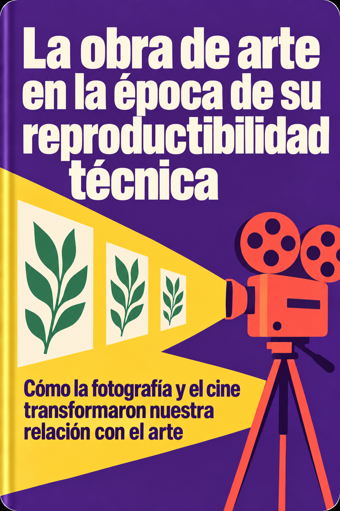
La obra de arte en la época de su reproductibilidad técnica
Walter Benjamin · versión 1
Instalada2026-09-12
Ver prompt
Use case: stylized-concept. Create one original finished Spanish book cover for Curva, portrait 1024x1536. The two input images are STYLE REFERENCES ONLY: confident flat editorial drawings, beautifully composed large typography, charming simplified shapes, harmonious vivid colors and a left-edge book fold. Invent a new composition, do not copy their scenes. Clearly drawn illustration with strong clean silhouettes and only a few intentional details, at most one flat shadow shade per object. No photorealism, realistic anatomy, 3D rendering, collage or grain. People have coherent simplified eyes and hands, naturally colored skin. Make the book attractive in a varied mobile library; keep every title and subtitle readable at 190px wide. The subtitle explains the book, so give it generous space and a strong readable size, about 50-65px in the full image, not tiny decorative lettering. Obey the individual palette and layout instead of a repeated template. Front-on flat cover fills canvas, rounded corners. MANDATORY: a narrow vertical pressed fold 2% inside the LEFT edge for the entire height, with a fine highlight and a darker groove, clearly visible even on thumbnail. No perspective mockup, external shadow, logos, author names, year, watermark, or extra text. Only the exact Spanish title and subtitle below, preserving all accents and punctuation.
Exact title: La obra de arte en la época de su reproductibilidad técnica
Exact subtitle: Cómo la fotografía y el cine transformaron nuestra relación con el arte
Art direction: Vibrant violet-purple background. A large coral vintage film camera silhouette at lower right projects a broad warm-yellow beam to the left. Within the beam three simple cream rectangular prints repeat the same green leaf drawing, with the nearest print largest. Flat visual metaphor for reproduction, no brands or text within the prints. Long exact title takes the top 55% in a meticulously balanced warm-cream condensed sans, broken only at word boundaries, with obra de arte and reproductibilidad técnica prominent. Subtitle dark purple on the yellow beam across lower center. Sophisticated editorial poster, no realistic camera, no copied famous artwork.
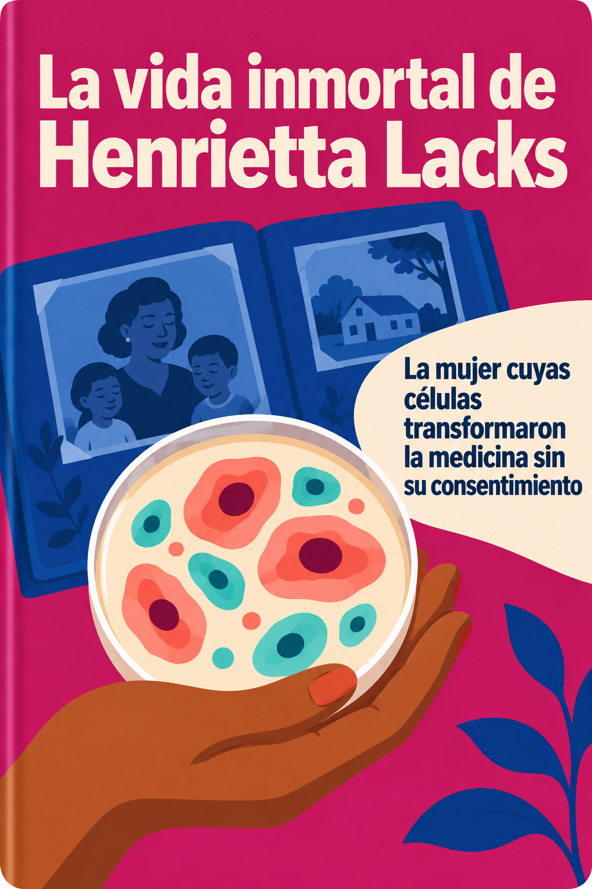
La vida inmortal de Henrietta Lacks
Rebecca Skloot · versión 1
Instalada2026-09-12
Ver prompt
Use case: stylized-concept. Create one original finished Spanish book cover for Curva, portrait 1024x1536. The two input images are STYLE REFERENCES ONLY: confident flat editorial drawings, beautifully composed large typography, charming simplified shapes, harmonious vivid colors and a left-edge book fold. Invent a new composition, do not copy their scenes. Clearly drawn illustration with strong clean silhouettes and only a few intentional details, at most one flat shadow shade per object. No photorealism, realistic anatomy, 3D rendering, collage or grain. People have coherent simplified eyes and hands, naturally colored skin. Make the book attractive in a varied mobile library; keep every title and subtitle readable at 190px wide. The subtitle explains the book, so give it generous space and a strong readable size, about 50-65px in the full image, not tiny decorative lettering. Obey the individual palette and layout instead of a repeated template. Front-on flat cover fills canvas, rounded corners. MANDATORY: a narrow vertical pressed fold 2% inside the LEFT edge for the entire height, with a fine highlight and a darker groove, clearly visible even on thumbnail. No perspective mockup, external shadow, logos, author names, year, watermark, or extra text. Only the exact Spanish title and subtitle below, preserving all accents and punctuation.
Exact title: La vida inmortal de Henrietta Lacks
Exact subtitle: La mujer cuyas células transformaron la medicina sin su consentimiento
Art direction: Vibrant raspberry-magenta background. A large warm-cream circular petri dish occupies lower half with several flat coral and turquoise cell shapes, simple rounded silhouettes with one dark nucleus each. A warm-brown hand gently supports the dish from below; simplified coherent fingers. In the background a broad cobalt silhouette of an open family photo album suggests the human story without inventing a portrait of Henrietta. Long exact title in large cream humanist sans across top, Henrietta Lacks especially clear. Subtitle navy on a generous cream panel overlapping the right side of the album. Dignified warm editorial drawing, no realistic specimen, gore or glowing science imagery.
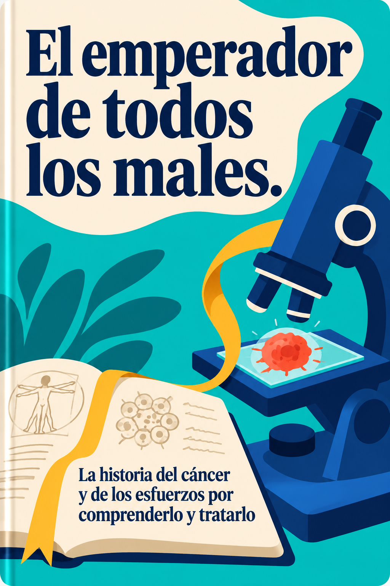
El emperador de todos los males
Siddhartha Mukherjee · versión 1
Instalada2026-09-12
Ver prompt
Use case: stylized-concept. Create one original finished Spanish book cover for Curva, portrait 1024x1536. The two input images are STYLE REFERENCES ONLY: confident flat editorial drawings, beautifully composed large typography, charming simplified shapes, harmonious vivid colors and a left-edge book fold. Invent a new composition, do not copy their scenes. Clearly drawn illustration with strong clean silhouettes and only a few intentional details, at most one flat shadow shade per object. No photorealism, realistic anatomy, 3D rendering, collage or grain. People have coherent simplified eyes and hands, naturally colored skin. Make the book attractive in a varied mobile library; keep every title and subtitle readable at 190px wide. The subtitle explains the book, so give it generous space and a strong readable size, about 50-65px in the full image, not tiny decorative lettering. Obey the individual palette and layout instead of a repeated template. Front-on flat cover fills canvas, rounded corners. MANDATORY: a narrow vertical pressed fold 2% inside the LEFT edge for the entire height, with a fine highlight and a darker groove, clearly visible even on thumbnail. No perspective mockup, external shadow, logos, author names, year, watermark, or extra text. Only the exact Spanish title and subtitle below, preserving all accents and punctuation.
Exact title: El emperador de todos los males
Exact subtitle: La historia del cáncer y de los esfuerzos por comprenderlo y tratarlo
Art direction: Bright turquoise background, warm-cream top-left shape. A monumental cobalt-blue microscope occupies lower right, angled toward one coral-red cell shown as a simple round symbolic shape on a slide. A long golden-yellow bookmark-like ribbon links the microscope to one open cream historical notebook at lower left, symbolizing a long history of research. Title in huge navy editorial serif across top and center, exact El emperador de todos los males. Subtitle navy on cream notebook page at bottom. Humane hopeful but serious flat drawing, no crowns, weapons, cancer cure claims, realistic medical equipment or anatomy.
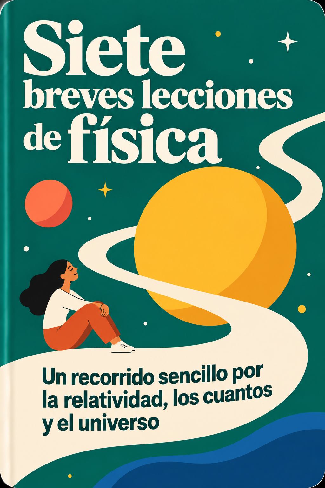
Siete breves lecciones de física
Carlo Rovelli · versión 1
Instalada2026-09-12
Ver prompt
Use case: stylized-concept. Create one original finished Spanish book cover for Curva, portrait 1024x1536. The two input images are STYLE REFERENCES ONLY: confident flat editorial drawings, beautifully composed large typography, charming simplified shapes, harmonious vivid colors and a left-edge book fold. Invent a new composition, do not copy their scenes. Clearly drawn illustration with strong clean silhouettes and only a few intentional details, at most one flat shadow shade per object. No photorealism, realistic anatomy, 3D rendering, collage or grain. People have coherent simplified eyes and hands, naturally colored skin. Make the book attractive in a varied mobile library; keep every title and subtitle readable at 190px wide. The subtitle explains the book, so give it generous space and a strong readable size, about 50-65px in the full image, not tiny decorative lettering. Obey the individual palette and layout instead of a repeated template. Front-on flat cover fills canvas, rounded corners. MANDATORY: a narrow vertical pressed fold 2% inside the LEFT edge for the entire height, with a fine highlight and a darker groove, clearly visible even on thumbnail. No perspective mockup, external shadow, logos, author names, year, watermark, or extra text. Only the exact Spanish title and subtitle below, preserving all accents and punctuation.
Exact title: Siete breves lecciones de física
Exact subtitle: Un recorrido sencillo por la relatividad, los cuantos y el universo
Art direction: Deep saturated emerald background. One cream ribbon unfurls diagonally from lower left to upper right, bending around a giant golden-yellow sphere as a lyrical metaphor for curved space. Small coral sphere at left and cobalt wave at bottom are the only secondary shapes. Huge warm-cream editorial serif title in the upper third and left half, Siete and física especially large, no isolated giant digit because title says Siete. Subtitle dark emerald on the broad cream ribbon at bottom. Airy elegant flat graphic physics illustration, no realistic glow, atom logos or illegible equations.
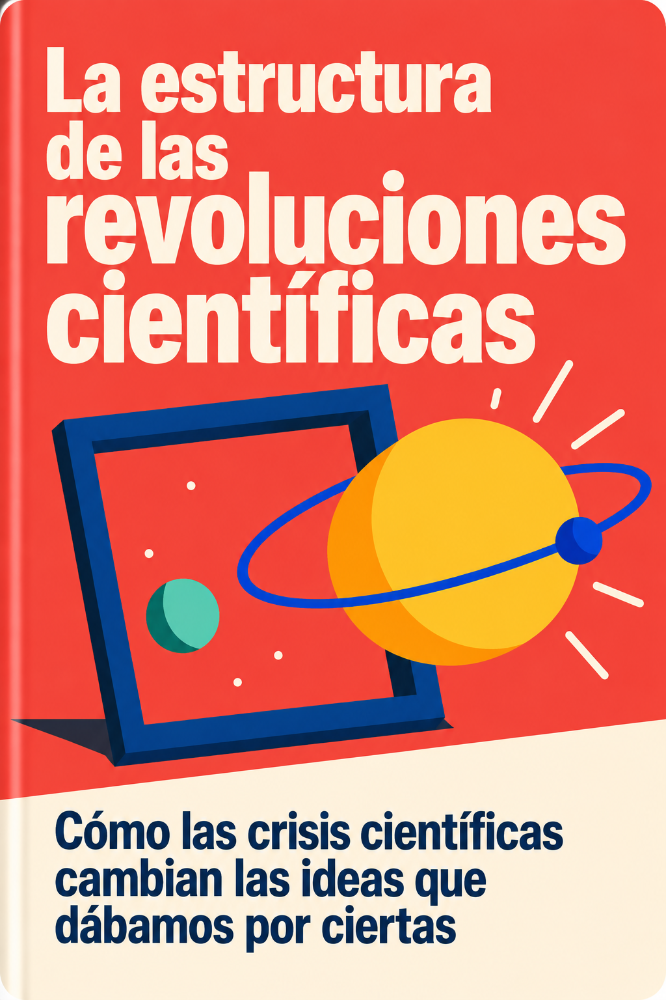
La estructura de las revoluciones científicas
Thomas S. Kuhn · versión 1
Instalada2026-09-12
Ver prompt
Use case: stylized-concept. Create one original finished Spanish book cover for Curva, portrait 1024x1536. The two input images are STYLE REFERENCES ONLY: confident flat editorial drawings, beautifully composed large typography, charming simplified shapes, harmonious vivid colors and a left-edge book fold. Invent a new composition, do not copy their scenes. Clearly drawn illustration with strong clean silhouettes and only a few intentional details, at most one flat shadow shade per object. No photorealism, realistic anatomy, 3D rendering, collage or grain. People have coherent simplified eyes and hands, naturally colored skin. Make the book attractive in a varied mobile library; keep every title and subtitle readable at 190px wide. The subtitle explains the book, so give it generous space and a strong readable size, about 50-65px in the full image, not tiny decorative lettering. Obey the individual palette and layout instead of a repeated template. Front-on flat cover fills canvas, rounded corners. MANDATORY: a narrow vertical pressed fold 2% inside the LEFT edge for the entire height, with a fine highlight and a darker groove, clearly visible even on thumbnail. No perspective mockup, external shadow, logos, author names, year, watermark, or extra text. Only the exact Spanish title and subtitle below, preserving all accents and punctuation.
Exact title: La estructura de las revoluciones científicas
Exact subtitle: Cómo las crisis científicas cambian las ideas que dábamos por ciertas
Art direction: Bright coral-red background. Across lower half a giant dark-blue picture frame is tilted and a golden-yellow circular sun with a cobalt orbit breaks out beyond it; one small mint-green planet remains inside the old frame. Visual metaphor for changing explanatory frameworks, no numbered diagram. Long exact title in large warm-cream condensed editorial sans in the upper 55%, with revoluciones científicas especially strong. Subtitle in navy on a cream geometric wedge along the bottom. Bold clever flat composition, few large shapes, no clutter of formulas or cogs.
¿Está usted de broma, Sr. Feynman?
Richard Feynman · versión 1
Instalada2026-09-12
Ver prompt
Use case: stylized-concept. Create one original finished Spanish book cover for Curva, portrait 1024x1536. The two input images are STYLE REFERENCES ONLY: confident flat editorial drawings, beautifully composed large typography, charming simplified shapes, harmonious vivid colors and a left-edge book fold. Invent a new composition, do not copy their scenes. Clearly drawn illustration with strong clean silhouettes and only a few intentional details, at most one flat shadow shade per object. No photorealism, realistic anatomy, 3D rendering, collage or grain. People have coherent simplified eyes and hands, naturally colored skin. Make the book attractive in a varied mobile library; keep every title and subtitle readable at 190px wide. The subtitle explains the book, so give it generous space and a strong readable size, about 50-65px in the full image, not tiny decorative lettering. Obey the individual palette and layout instead of a repeated template. Front-on flat cover fills canvas, rounded corners. MANDATORY: a narrow vertical pressed fold 2% inside the LEFT edge for the entire height, with a fine highlight and a darker groove, clearly visible even on thumbnail. No perspective mockup, external shadow, logos, author names, year, watermark, or extra text. Only the exact Spanish title and subtitle below, preserving all accents and punctuation.
Exact title: ¿Está usted de broma, Sr. Feynman?
Exact subtitle: Las aventuras de un físico que nunca dejó de hacerse preguntas
Art direction: Luminous tangerine-orange background. A giant pair of warm-yellow bongo drums with simple cobalt rims sits at lower left; a navy open notebook floats diagonally behind them with a few cream curved abstract strokes, not legible writing or equations. One green pencil bridges notebook and drums. The exact humorous question title fills the upper half in cream bold rounded sans with Feynman very prominent; preserve ¿ and ?. Subtitle in cream on a broad deep-purple irregular panel at lower right. Curious playful elegant poster linking science and creative curiosity, no portrait or realistic woodgrain.
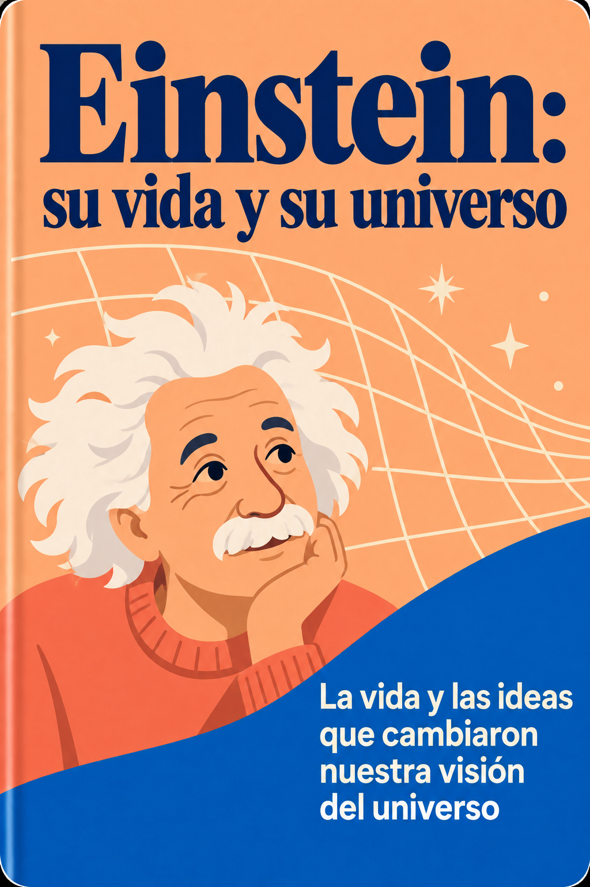
Einstein: su vida y su universo
Walter Isaacson · versión 1
Instalada2026-09-12
Ver prompt
Use case: stylized-concept. Create one original finished Spanish book cover for Curva, portrait 1024x1536. The two input images are STYLE REFERENCES ONLY: confident flat editorial drawings, beautifully composed large typography, charming simplified shapes, harmonious vivid colors and a left-edge book fold. Invent a new composition, do not copy their scenes. Clearly drawn illustration with strong clean silhouettes and only a few intentional details, at most one flat shadow shade per object. No photorealism, realistic anatomy, 3D rendering, collage or grain. People have coherent simplified eyes and hands, naturally colored skin. Make the book attractive in a varied mobile library; keep every title and subtitle readable at 190px wide. The subtitle explains the book, so give it generous space and a strong readable size, about 50-65px in the full image, not tiny decorative lettering. Obey the individual palette and layout instead of a repeated template. Front-on flat cover fills canvas, rounded corners. MANDATORY: a narrow vertical pressed fold 2% inside the LEFT edge for the entire height, with a fine highlight and a darker groove, clearly visible even on thumbnail. No perspective mockup, external shadow, logos, author names, year, watermark, or extra text. Only the exact Spanish title and subtitle below, preserving all accents and punctuation.
Exact title: Einstein: su vida y su universo
Exact subtitle: La vida y las ideas que cambiaron nuestra visión del universo
Art direction: Warm peach background with a bold cobalt-blue curved lower section. A sympathetic unmistakably illustrated Albert Einstein appears chest-up in lower half: natural light skin, unruly broad white hair shapes, white moustache, simple friendly dark eyes, coral sweater. Flat expressive editorial portrait, not a caricature with tongue out and not a realistic painting. Behind him one cream bent grid with just four lines each way sweeps diagonally, alluding to spacetime without equations. Huge deep-navy serif Einstein at top; su vida y su universo beneath it in large readable type, preserving exact title punctuation. Subtitle cream on the cobalt lower panel beside the shoulder.
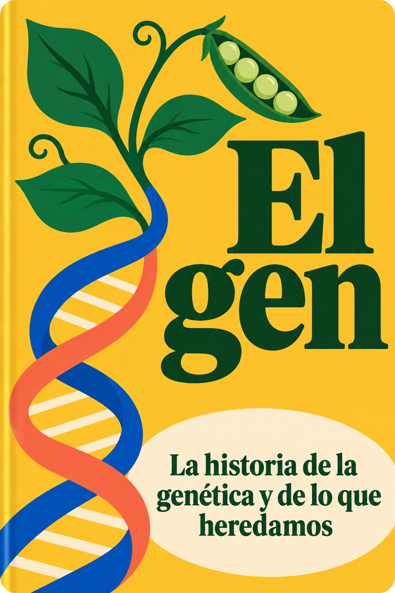
El gen
Siddhartha Mukherjee · versión 1
Instalada2026-09-12
Ver prompt
Use case: stylized-concept. Create one original finished Spanish book cover for Curva, portrait 1024x1536. The two input images are STYLE REFERENCES ONLY: confident flat editorial drawings, beautifully composed large typography, charming simplified shapes, harmonious vivid colors and a left-edge book fold. Invent a new composition, do not copy their scenes. Clearly drawn illustration with strong clean silhouettes and only a few intentional details, at most one flat shadow shade per object. No photorealism, realistic anatomy, 3D rendering, collage or grain. People have coherent simplified eyes and hands, naturally colored skin. Make the book attractive in a varied mobile library; keep every title and subtitle readable at 190px wide. The subtitle explains the book, so give it generous space and a strong readable size, about 50-65px in the full image, not tiny decorative lettering. Obey the individual palette and layout instead of a repeated template. Front-on flat cover fills canvas, rounded corners. MANDATORY: a narrow vertical pressed fold 2% inside the LEFT edge for the entire height, with a fine highlight and a darker groove, clearly visible even on thumbnail. No perspective mockup, external shadow, logos, author names, year, watermark, or extra text. Only the exact Spanish title and subtitle below, preserving all accents and punctuation.
Exact title: El gen
Exact subtitle: La historia de la genética y de lo que heredamos
Art direction: Rich saffron-yellow background. A huge stylized double-helix ribbon with cobalt and coral strands rises from the lower left and becomes the branching outline of a green pea plant with three broad leaves and a single open pod of round pale-green peas. Metaphorical illustration of heredity, not a labeled scientific diagram. The short title El gen is gigantic forest-green heavy serif in the upper right and center. Subtitle dark green in a generous cream oval of negative space at the bottom. Sculptural but strictly flat-drawn organic shapes, no microscopic realism or dozens of tiny DNA rungs.
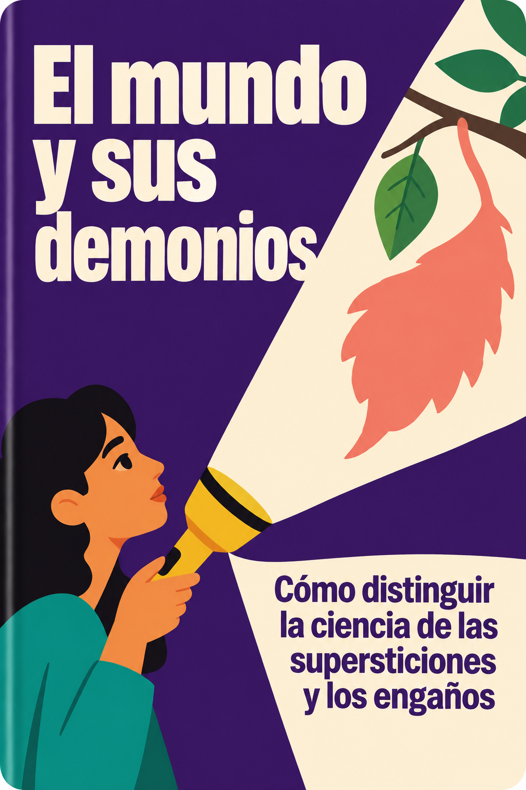
El mundo y sus demonios
Carl Sagan · versión 1
Instalada2026-09-12
Ver prompt
Use case: stylized-concept. Create one original finished Spanish book cover for Curva, portrait 1024x1536. The two input images are STYLE REFERENCES ONLY: confident flat editorial drawings, beautifully composed large typography, charming simplified shapes, harmonious vivid colors and a left-edge book fold. Invent a new composition, do not copy their scenes. Clearly drawn illustration with strong clean silhouettes and only a few intentional details, at most one flat shadow shade per object. No photorealism, realistic anatomy, 3D rendering, collage or grain. People have coherent simplified eyes and hands, naturally colored skin. Make the book attractive in a varied mobile library; keep every title and subtitle readable at 190px wide. The subtitle explains the book, so give it generous space and a strong readable size, about 50-65px in the full image, not tiny decorative lettering. Obey the individual palette and layout instead of a repeated template. Front-on flat cover fills canvas, rounded corners. MANDATORY: a narrow vertical pressed fold 2% inside the LEFT edge for the entire height, with a fine highlight and a darker groove, clearly visible even on thumbnail. No perspective mockup, external shadow, logos, author names, year, watermark, or extra text. Only the exact Spanish title and subtitle below, preserving all accents and punctuation.
Exact title: El mundo y sus demonios
Exact subtitle: Cómo distinguir la ciencia de las supersticiones y los engaños
Art direction: Deep royal-purple background. A monumental golden-yellow flashlight tilted from lower left sends a broad warm-cream triangular beam upward to the right. A mysterious coral shadow inside the beam becomes visibly just a small innocent green leaf hanging from a twig, suggesting testing appearances. NO demons, monsters or literal religious symbols. Huge cream condensed title across the upper left, the beam leaves clean space for it. Put the subtitle in dark purple inside the broad lit triangle at lower right. Original graphic mystery-and-discovery poster, simple flat light beam without realistic glow.
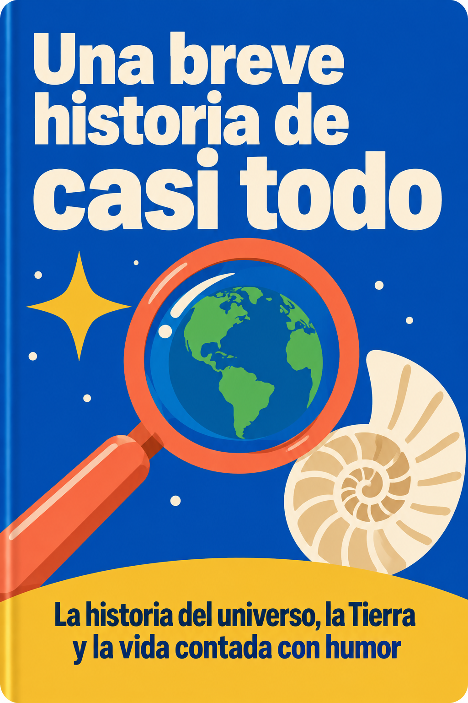
Una breve historia de casi todo
Bill Bryson · versión 1
Instalada2026-09-12
Ver prompt
Use case: stylized-concept. Create one original finished Spanish book cover for Curva, portrait 1024x1536. The two input images are STYLE REFERENCES ONLY: confident flat editorial drawings, beautifully composed large typography, charming simplified shapes, harmonious vivid colors and a left-edge book fold. Invent a new composition, do not copy their scenes. Clearly drawn illustration with strong clean silhouettes and only a few intentional details, at most one flat shadow shade per object. No photorealism, realistic anatomy, 3D rendering, collage or grain. People have coherent simplified eyes and hands, naturally colored skin. Make the book attractive in a varied mobile library; keep every title and subtitle readable at 190px wide. The subtitle explains the book, so give it generous space and a strong readable size, about 50-65px in the full image, not tiny decorative lettering. Obey the individual palette and layout instead of a repeated template. Front-on flat cover fills canvas, rounded corners. MANDATORY: a narrow vertical pressed fold 2% inside the LEFT edge for the entire height, with a fine highlight and a darker groove, clearly visible even on thumbnail. No perspective mockup, external shadow, logos, author names, year, watermark, or extra text. Only the exact Spanish title and subtitle below, preserving all accents and punctuation.
Exact title: Una breve historia de casi todo
Exact subtitle: La historia del universo, la Tierra y la vida contada con humor
Art direction: Electric cobalt background. One gigantic magnifying glass with coral-orange handle frames a small blue-and-green Earth, while one warm-cream ammonite fossil silhouette and one golden-yellow four-point star sit partially outside its circular lens. These three large objects form a playful diagonal journey from space to life. Title in big warm-cream heavy rounded sans across upper half, exactly Una breve historia de casi todo, with casi todo especially prominent. Subtitle in navy on a broad golden-yellow curved band across bottom. Flat graphic scientific curiosity, no realistic glass or crowded icon constellation.
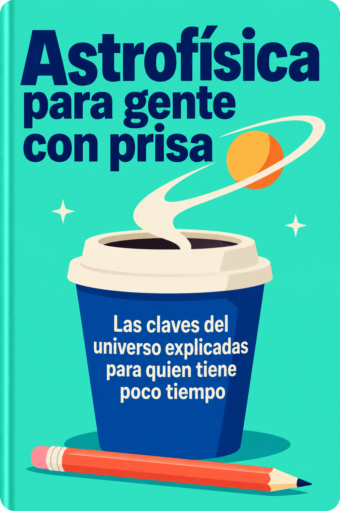
Astrofísica para gente con prisa
Neil deGrasse Tyson · versión 1
Instalada2026-09-12
Ver prompt
Use case: stylized-concept. Create one original finished Spanish book cover for Curva, portrait 1024x1536. The two input images are STYLE REFERENCES ONLY: confident flat editorial drawings, beautifully composed large typography, charming simplified shapes, harmonious vivid colors and a left-edge book fold. Invent a new composition, do not copy their scenes. Clearly drawn illustration with strong clean silhouettes and only a few intentional details, at most one flat shadow shade per object. No photorealism, realistic anatomy, 3D rendering, collage or grain. People have coherent simplified eyes and hands, naturally colored skin. Make the book attractive in a varied mobile library; keep every title and subtitle readable at 190px wide. The subtitle explains the book, so give it generous space and a strong readable size, about 50-65px in the full image, not tiny decorative lettering. Obey the individual palette and layout instead of a repeated template. Front-on flat cover fills canvas, rounded corners. MANDATORY: a narrow vertical pressed fold 2% inside the LEFT edge for the entire height, with a fine highlight and a darker groove, clearly visible even on thumbnail. No perspective mockup, external shadow, logos, author names, year, watermark, or extra text. Only the exact Spanish title and subtitle below, preserving all accents and punctuation.
Exact title: Astrofísica para gente con prisa
Exact subtitle: Las claves del universo explicadas para quien tiene poco tiempo
Art direction: Vivid mint-turquoise background. A gigantic deep-cobalt takeaway coffee cup with a cream lid occupies lower center, its flat cream steam curls become a single elegant orbital ellipse around a small golden-orange planet. This is a witty everyday cosmic metaphor, not a realistic still life. Large navy friendly condensed sans title arranged across top, Astrofísica prominent. Subtitle in warm cream on the broad blue cup with generous letter size. One coral pencil lies along the bottom edge and two tiny cream stars only. Simple charming strong geometry, no extra labels, numbers or coffee brand.
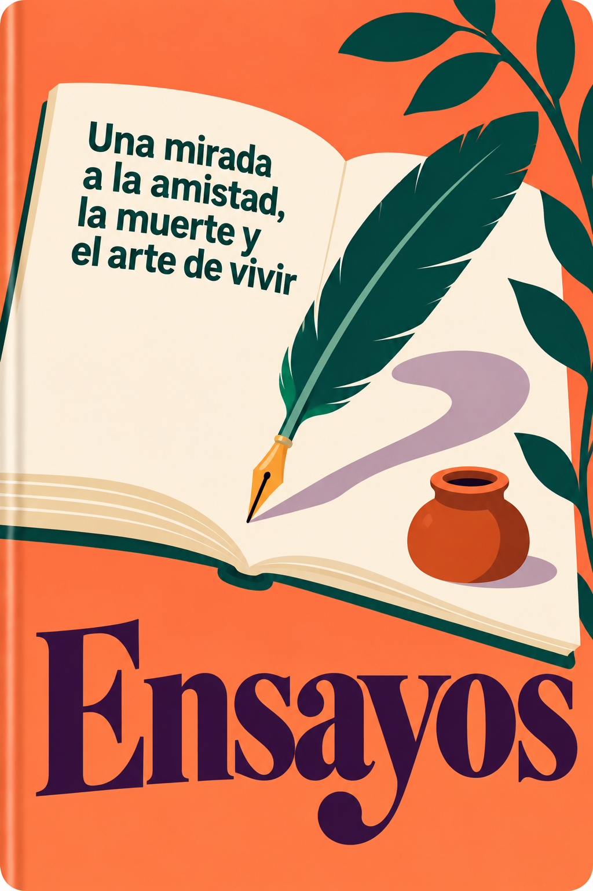
Ensayos
Michel de Montaigne · versión 1
Instalada2026-09-12
Ver prompt
Use case: stylized-concept. Create one original finished Spanish book cover for Curva, portrait 1024x1536. The two input images are STYLE REFERENCES ONLY: confident flat editorial drawings, beautifully composed large typography, charming simplified shapes, harmonious vivid colors and a left-edge book fold. Invent a new composition, do not copy their scenes. Clearly drawn illustration with strong clean silhouettes and only a few intentional details, at most one flat shadow shade per object. No photorealism, realistic anatomy, 3D rendering, collage or grain. People have coherent simplified eyes and hands, naturally colored skin. Make the book attractive in a varied mobile library; keep every title and subtitle readable at 190px wide. The subtitle explains the book, so give it generous space and a strong readable size, about 50-65px in the full image, not tiny decorative lettering. Obey the individual palette and layout instead of a repeated template. Front-on flat cover fills canvas, rounded corners. MANDATORY: a narrow vertical pressed fold 2% inside the LEFT edge for the entire height, with a fine highlight and a darker groove, clearly visible even on thumbnail. No perspective mockup, external shadow, logos, author names, year, watermark, or extra text. Only the exact Spanish title and subtitle below, preserving all accents and punctuation.
Exact title: Ensayos
Exact subtitle: Una mirada a la amistad, la muerte y el arte de vivir
Art direction: Warm coral-orange background. In the center a huge cream open notebook, a deep-green quill curving diagonally over it and a small terracotta inkpot. The quill casts a single flat purple shadow shaped like a gentle question-mark curve, not a printed glyph. One deep-green branch frames the right edge. Put the single word Ensayos in an enormous expressive dark-purple literary serif along the bottom third. Subtitle in deep green in the broad clear cream page at top. Quiet wit and intellectual warmth, bold asymmetry, no tiny fake handwriting.
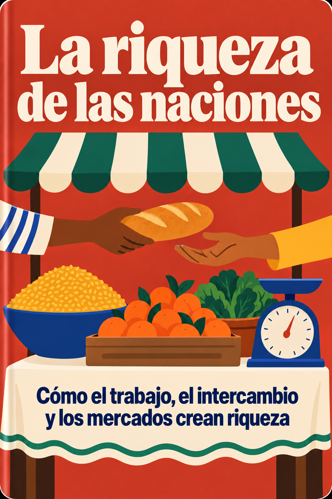
La riqueza de las naciones
Adam Smith · versión 1
Instalada2026-09-12
Ver prompt
Use case: stylized-concept. One original finished Spanish book cover for Curva, 1024x1536 portrait. Input images 1 and 2 are STYLE REFERENCES ONLY: use their confident flat editorial drawings, huge carefully composed typography, charming simplified shapes, strong colors and left-edge fold. Invent a completely different composition from the references. This is a drawing, never a photograph or a realistic painting. Large clear silhouettes, clean organic contours, a few deliberately chosen details, elegant visual wit, high contrast and vibrant harmonious colors. No photorealism, no detailed anatomical rendering, no grain or paper/collage texture, no 3D plastic. At most one simple flat shadow shade per object. Objects have believable colors and people natural warm skin tones. Small expressive faces must have correct eyes and hands must be anatomically coherent and simplified. The collection must look varied: obey the individual typography, framing and palette below, not a repeated template. The illustration and title must be beautifully readable on a 190px-wide mobile card. Front-on cover fills the canvas with rounded corners, no perspective book mockup, no external shadow. MANDATORY FINISH: a narrow visible vertical pressed book-cover fold about 2% inward from the LEFT edge for the entire height, a fine highlight followed immediately by a subtle darker groove, matching the references. Keep the title clear of the fold and page edges. Print only the exact title and editorial line below with perfect Spanish accents. No author, year, brand, watermark or extra text.
Exact title: La riqueza de las naciones
Exact editorial line: Cómo se organiza la prosperidad
Art direction: Saturated terracotta-red background. A colorful bustling market stall reduced to bold flat editorial shapes occupies the center/lower half: a deep-green striped awning, three large bowls of golden-yellow grain, orange fruit and leafy greens, a cream counter with a cobalt scale, and two simplified naturally brown-skinned hands exchanging a single loaf of bread across the counter. No faces needed. The title 'La riqueza / de las naciones' is huge warm-cream heavy serif at the top. Editorial line in navy on the front of the cream counter. Warm vibrant graphic poster about exchange and production, no financial charts, coins falling, modern logos, realistic textures or extra labels.
La semana laboral de 4 horas
Tim Ferriss · versión 1
Instalada2026-09-12
Ver prompt
Use case: stylized-concept. One original finished Spanish book cover for Curva, 1024x1536 portrait. Input images 1 and 2 are STYLE REFERENCES ONLY: use their confident flat editorial drawings, huge carefully composed typography, charming simplified shapes, strong colors and left-edge fold. Invent a completely different composition from the references. This is a drawing, never a photograph or a realistic painting. Large clear silhouettes, clean organic contours, a few deliberately chosen details, elegant visual wit, high contrast and vibrant harmonious colors. No photorealism, no detailed anatomical rendering, no grain or paper/collage texture, no 3D plastic. At most one simple flat shadow shade per object. Objects have believable colors and people natural warm skin tones. Small expressive faces must have correct eyes and hands must be anatomically coherent and simplified. The collection must look varied: obey the individual typography, framing and palette below, not a repeated template. The illustration and title must be beautifully readable on a 190px-wide mobile card. Front-on cover fills the canvas with rounded corners, no perspective book mockup, no external shadow. MANDATORY FINISH: a narrow visible vertical pressed book-cover fold about 2% inward from the LEFT edge for the entire height, a fine highlight followed immediately by a subtle darker groove, matching the references. Keep the title clear of the fold and page edges. Print only the exact title and editorial line below with perfect Spanish accents. No author, year, brand, watermark or extra text.
Exact title: La semana laboral de 4 horas
Exact editorial line: Diseñar el trabajo para recuperar la vida
Art direction: A bright lagoon-turquoise background. One gigantic sunny-yellow hammock curves diagonally across the lower half between two simple deep-green palm trunks; a person in coral-red trousers and cream shirt relaxes with legs crossed, seen as a clean small silhouette with a natural warm skin tone, closed eyes only if face is visible. A navy closed laptop rests on a tiny coral side table, clearly closed. Huge deep-purple sans-serif title dominates the upper half with the digit '4' particularly large, exact text 'La semana laboral de 4 horas'. Editorial line cream on dark-green leaves at bottom left. Vacation-bright original flat editorial cover, no promise that every job literally takes four hours, no photoreal beach, no tiny miscellaneous icons.
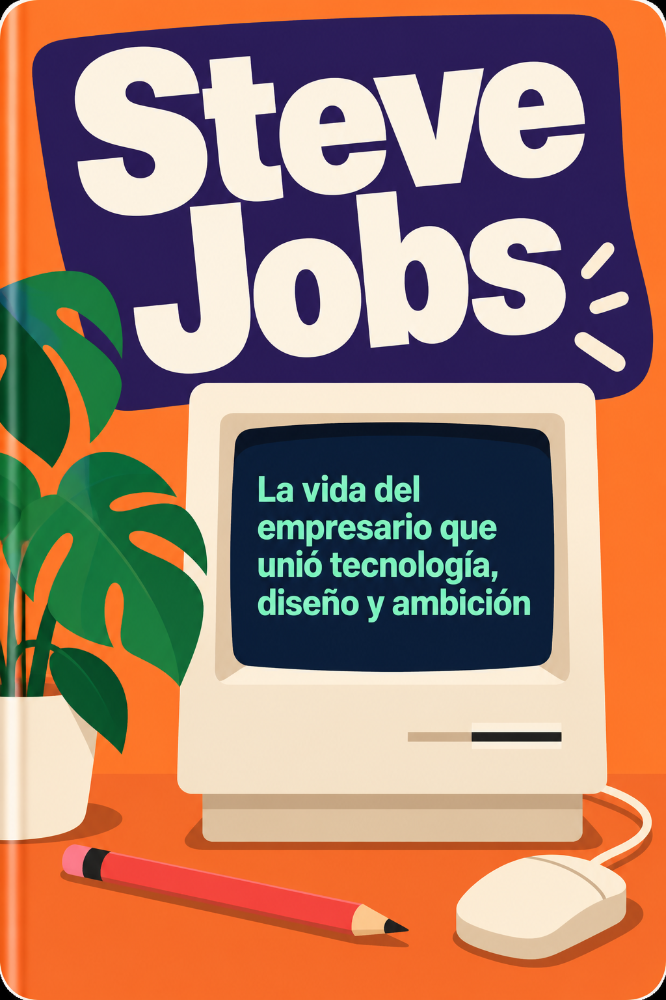
Steve Jobs
Walter Isaacson · versión 1
Instalada2026-09-12
Ver prompt
Use case: stylized-concept. One original finished Spanish book cover for Curva, 1024x1536 portrait. Input images 1 and 2 are STYLE REFERENCES ONLY: use their confident flat editorial drawings, huge carefully composed typography, charming simplified shapes, strong colors and left-edge fold. Invent a completely different composition from the references. This is a drawing, never a photograph or a realistic painting. Large clear silhouettes, clean organic contours, a few deliberately chosen details, elegant visual wit, high contrast and vibrant harmonious colors. No photorealism, no detailed anatomical rendering, no grain or paper/collage texture, no 3D plastic. At most one simple flat shadow shade per object. Objects have believable colors and people natural warm skin tones. Small expressive faces must have correct eyes and hands must be anatomically coherent and simplified. The collection must look varied: obey the individual typography, framing and palette below, not a repeated template. The illustration and title must be beautifully readable on a 190px-wide mobile card. Front-on cover fills the canvas with rounded corners, no perspective book mockup, no external shadow. MANDATORY FINISH: a narrow visible vertical pressed book-cover fold about 2% inward from the LEFT edge for the entire height, a fine highlight followed immediately by a subtle darker groove, matching the references. Keep the title clear of the fold and page edges. Print only the exact title and editorial line below with perfect Spanish accents. No author, year, brand, watermark or extra text.
Exact title: Steve Jobs
Exact editorial line: La ambición de cambiar lo cotidiano
Art direction: Vibrant warm apricot-orange background. A monumental cream 1980s-style compact personal computer with a dark navy square screen fills the bottom two thirds, front view with simple rounded flat shapes and a separate small cream mouse; no Apple logo or other trademarks. A coral-red hand-drawn pencil lies diagonally beside it and one vivid green desk plant leans in from the left, representing technology meeting creative taste. The giant cream title 'Steve Jobs' fills the top on a bold midnight-purple irregular rectangular color panel. On the screen, place the editorial line in bright mint-green, only those exact words. Distinctive playful editorial still life with careful flat shapes, no realistic hardware rendering, no portrait to misidentify.
Una educación
Tara Westover · versión 1
Instalada2026-09-12
Ver prompt
Use case: stylized-concept. One original finished Spanish book cover for Curva, 1024x1536 portrait. Input images 1 and 2 are STYLE REFERENCES ONLY: use their confident flat editorial drawings, huge carefully composed typography, charming simplified shapes, strong colors and left-edge fold. Invent a completely different composition from the references. This is a drawing, never a photograph or a realistic painting. Large clear silhouettes, clean organic contours, a few deliberately chosen details, elegant visual wit, high contrast and vibrant harmonious colors. No photorealism, no detailed anatomical rendering, no grain or paper/collage texture, no 3D plastic. At most one simple flat shadow shade per object. Objects have believable colors and people natural warm skin tones. Small expressive faces must have correct eyes and hands must be anatomically coherent and simplified. The collection must look varied: obey the individual typography, framing and palette below, not a repeated template. The illustration and title must be beautifully readable on a 190px-wide mobile card. Front-on cover fills the canvas with rounded corners, no perspective book mockup, no external shadow. MANDATORY FINISH: a narrow visible vertical pressed book-cover fold about 2% inward from the LEFT edge for the entire height, a fine highlight followed immediately by a subtle darker groove, matching the references. Keep the title clear of the fold and page edges. Print only the exact title and editorial line below with perfect Spanish accents. No author, year, brand, watermark or extra text.
Exact title: Una educación
Exact editorial line: Aprender a contar tu propia historia
Art direction: A very large open warm-cream book rises from the bottom and its pages transform into a winding cream path toward a distant forest-green mountain silhouette. Background is vibrant sky-blue with a coral-orange sunrise disk, one horizontal band of lilac mountain shadow. A small young woman with dark-brown hair, warm tan skin, deep-red sweater and navy trousers walks along the page-path holding a closed golden-yellow book under one arm, shown from behind with no face details. Huge navy title 'Una educación' in a beautifully heavy literary serif in upper half. Editorial line in dark green on a clear cream page near bottom. Lyrical flat drawn scene, intentional negative space, not photoreal landscape, not a generic graduation cap.
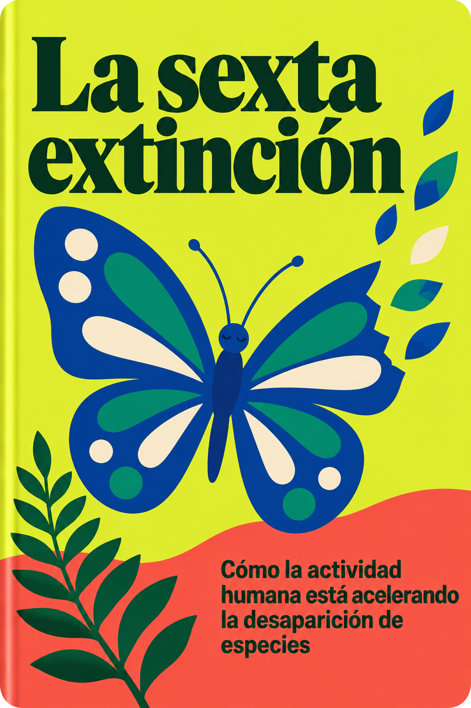
La sexta extinción
Elizabeth Kolbert · versión 1
Instalada2026-09-12
Ver prompt
Use case: stylized-concept. One original finished Spanish book cover for Curva, 1024x1536 portrait. Input images 1 and 2 are STYLE REFERENCES ONLY: use their confident flat editorial drawings, huge carefully composed typography, charming simplified shapes, strong colors and left-edge fold. Invent a completely different composition from the references. This is a drawing, never a photograph or a realistic painting. Large clear silhouettes, clean organic contours, a few deliberately chosen details, elegant visual wit, high contrast and vibrant harmonious colors. No photorealism, no detailed anatomical rendering, no grain or paper/collage texture, no 3D plastic. At most one simple flat shadow shade per object. Objects have believable colors and people natural warm skin tones. Small expressive faces must have correct eyes and hands must be anatomically coherent and simplified. The collection must look varied: obey the individual typography, framing and palette below, not a repeated template. The illustration and title must be beautifully readable on a 190px-wide mobile card. Front-on cover fills the canvas with rounded corners, no perspective book mockup, no external shadow. MANDATORY FINISH: a narrow visible vertical pressed book-cover fold about 2% inward from the LEFT edge for the entire height, a fine highlight followed immediately by a subtle darker groove, matching the references. Keep the title clear of the fold and page edges. Print only the exact title and editorial line below with perfect Spanish accents. No author, year, brand, watermark or extra text.
Exact title: La sexta extinción
Exact editorial line: Las especies que estamos perdiendo
Art direction: Vivid lime-yellow background and a broad coral-red ground shape along the bottom. A large flat cobalt-blue butterfly silhouette fills the middle, with emerald and cream geometric wing patterns; the right wing's outer edge breaks into five small detached leaflike shapes that drift upward, suggesting loss without gore. A tiny deep-green fern rises from lower left. Title 'La sexta / extinción' in enormous dark-forest-green heavy serif across the top, balanced with the butterfly rather than over it. Editorial line dark green at bottom right. Powerful ecological poster, elegant graphic asymmetry, few large bold shapes, no realistic insect veins or photographic textures.
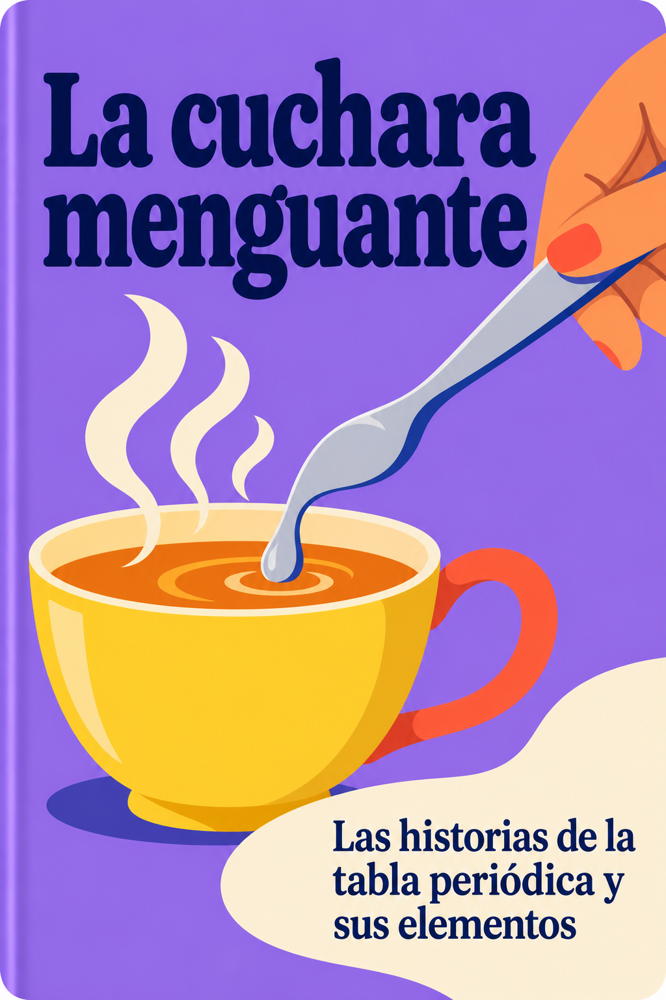
La cuchara menguante
Sam Kean · versión 1
Instalada2026-09-12
Ver prompt
Use case: stylized-concept. One original finished Spanish book cover for Curva, 1024x1536 portrait. Input images 1 and 2 are STYLE REFERENCES ONLY: use their confident flat editorial drawings, huge carefully composed typography, charming simplified shapes, strong colors and left-edge fold. Invent a completely different composition from the references. This is a drawing, never a photograph or a realistic painting. Large clear silhouettes, clean organic contours, a few deliberately chosen details, elegant visual wit, high contrast and vibrant harmonious colors. No photorealism, no detailed anatomical rendering, no grain or paper/collage texture, no 3D plastic. At most one simple flat shadow shade per object. Objects have believable colors and people natural warm skin tones. Small expressive faces must have correct eyes and hands must be anatomically coherent and simplified. The collection must look varied: obey the individual typography, framing and palette below, not a repeated template. The illustration and title must be beautifully readable on a 190px-wide mobile card. Front-on cover fills the canvas with rounded corners, no perspective book mockup, no external shadow. MANDATORY FINISH: a narrow visible vertical pressed book-cover fold about 2% inward from the LEFT edge for the entire height, a fine highlight followed immediately by a subtle darker groove, matching the references. Keep the title clear of the fold and page edges. Print only the exact title and editorial line below with perfect Spanish accents. No author, year, brand, watermark or extra text.
Exact title: La cuchara menguante
Exact editorial line: Historias sorprendentes de los elementos
Art direction: Saturated lilac-violet background. A large flat silver-gray spoon with cobalt shadows tilts from upper right into a clear cobalt-outlined teacup of warm amber liquid at lower left. The submerged end of the spoon bends and melts into one silver drop as a playful allusion to gallium, clearly a drawing. The cup is sunny yellow with a coral-red handle; no transparent 3D rendering or realistic metal. Huge dark-navy rounded-serif title 'La cuchara / menguante' fills the top-left/center open space. Editorial line in dark navy near the bottom on a cream swoosh of steam. Only three simple steam curls, no unrelated chemistry icons, no chemical formula text. Witty, colorful, memorable composition.
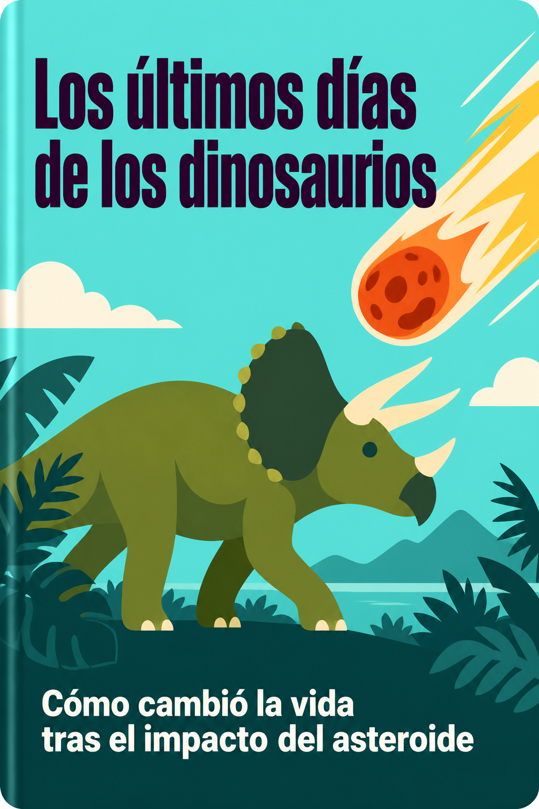
Los últimos días de los dinosaurios
Riley Black · versión 1
Instalada2026-09-12
Ver prompt
Use case: stylized-concept. One original finished Spanish book cover for Curva, 1024x1536 portrait. Input images 1 and 2 are STYLE REFERENCES ONLY: use their confident flat editorial drawings, huge carefully composed typography, charming simplified shapes, strong colors and left-edge fold. Invent a completely different composition from the references. This is a drawing, never a photograph or a realistic painting. Large clear silhouettes, clean organic contours, a few deliberately chosen details, elegant visual wit, high contrast and vibrant harmonious colors. No photorealism, no detailed anatomical rendering, no grain or paper/collage texture, no 3D plastic. At most one simple flat shadow shade per object. Objects have believable colors and people natural warm skin tones. Small expressive faces must have correct eyes and hands must be anatomically coherent and simplified. The collection must look varied: obey the individual typography, framing and palette below, not a repeated template. The illustration and title must be beautifully readable on a 190px-wide mobile card. Front-on cover fills the canvas with rounded corners, no perspective book mockup, no external shadow. MANDATORY FINISH: a narrow visible vertical pressed book-cover fold about 2% inward from the LEFT edge for the entire height, a fine highlight followed immediately by a subtle darker groove, matching the references. Keep the title clear of the fold and page edges. Print only the exact title and editorial line below with perfect Spanish accents. No author, year, brand, watermark or extra text.
Exact title: Los últimos días de los dinosaurios
Exact editorial line: El día que cambió la vida en la Tierra
Art direction: Electric mint-turquoise sky. A single expressive olive-green Triceratops with exactly three horns and a broad dark-green frill crosses the lower half in flat side profile, one simple black eye, heavy graceful silhouette, no scales or teeth detail. Giant orange-red meteor with a cream and saffron tail sweeps diagonally across the upper-right sky, far away, not hitting the animal. Dark-teal primitive foliage frames only the bottom corners. Huge dark aubergine condensed sans title on the broad clear upper-left sky: 'Los últimos días / de los dinosaurios'. Editorial line cream on a deep-teal ground strip at bottom. Striking natural-history illustration, dramatic yet attractive, not horror or photoreal dinosaur.
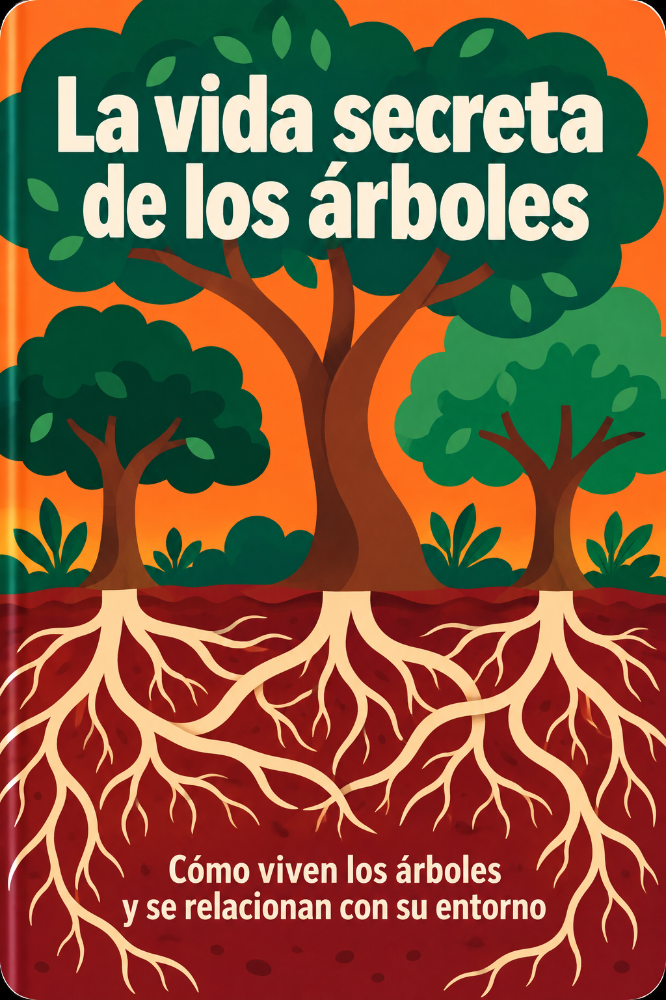
La vida secreta de los árboles
Peter Wohlleben · versión 1
Instalada2026-09-12
Ver prompt
Use case: stylized-concept. One original finished Spanish book cover for Curva, 1024x1536 portrait. Input images 1 and 2 are STYLE REFERENCES ONLY: use their confident flat editorial drawings, huge carefully composed typography, charming simplified shapes, strong colors and left-edge fold. Invent a completely different composition from the references. This is a drawing, never a photograph or a realistic painting. Large clear silhouettes, clean organic contours, a few deliberately chosen details, elegant visual wit, high contrast and vibrant harmonious colors. No photorealism, no detailed anatomical rendering, no grain or paper/collage texture, no 3D plastic. At most one simple flat shadow shade per object. Objects have believable colors and people natural warm skin tones. Small expressive faces must have correct eyes and hands must be anatomically coherent and simplified. The collection must look varied: obey the individual typography, framing and palette below, not a repeated template. The illustration and title must be beautifully readable on a 190px-wide mobile card. Front-on cover fills the canvas with rounded corners, no perspective book mockup, no external shadow. MANDATORY FINISH: a narrow visible vertical pressed book-cover fold about 2% inward from the LEFT edge for the entire height, a fine highlight followed immediately by a subtle darker groove, matching the references. Keep the title clear of the fold and page edges. Print only the exact title and editorial line below with perfect Spanish accents. No author, year, brand, watermark or extra text.
Exact title: La vida secreta de los árboles
Exact editorial line: La vida que se esconde en el bosque
Art direction: Warm luminous tangerine-orange background. Three stylized trees with broad deep-green and emerald canopies create a graphic forest scene. The lower part is a simple cutaway showing their golden-cream roots intertwining underground on a burgundy-red ground, no arrows or scientific labels. One tree trunk bends elegantly to frame the large cream title 'La vida secreta / de los árboles' in the upper half. The editorial line sits in cream between two roots at bottom. Beautiful organic drawn silhouette design, inviting earthy but saturated palette, no faces on trees, no magical glow or realistic bark.
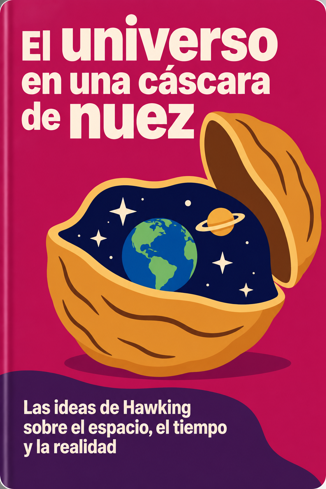
El universo en una cáscara de nuez
Stephen Hawking · versión 1
Instalada2026-09-12
Ver prompt
Use case: stylized-concept. One original finished Spanish book cover for Curva, 1024x1536 portrait. Input images 1 and 2 are STYLE REFERENCES ONLY: use their confident flat editorial drawings, huge carefully composed typography, charming simplified shapes, strong colors and left-edge fold. Invent a completely different composition from the references. This is a drawing, never a photograph or a realistic painting. Large clear silhouettes, clean organic contours, a few deliberately chosen details, elegant visual wit, high contrast and vibrant harmonious colors. No photorealism, no detailed anatomical rendering, no grain or paper/collage texture, no 3D plastic. At most one simple flat shadow shade per object. Objects have believable colors and people natural warm skin tones. Small expressive faces must have correct eyes and hands must be anatomically coherent and simplified. The collection must look varied: obey the individual typography, framing and palette below, not a repeated template. The illustration and title must be beautifully readable on a 190px-wide mobile card. Front-on cover fills the canvas with rounded corners, no perspective book mockup, no external shadow. MANDATORY FINISH: a narrow visible vertical pressed book-cover fold about 2% inward from the LEFT edge for the entire height, a fine highlight followed immediately by a subtle darker groove, matching the references. Keep the title clear of the fold and page edges. Print only the exact title and editorial line below with perfect Spanish accents. No author, year, brand, watermark or extra text.
Exact title: El universo en una cáscara de nuez
Exact editorial line: Lo inmenso también cabe en una pregunta
Art direction: Saturated raspberry-magenta background. A giant open walnut shell, warm golden-brown with only three simple dark contour grooves, cradles a tiny indigo universe: one cobalt Earth with green continents, one small golden ringed planet and three cream stars. No realistic nut texture. The walnut occupies the lower 55% like a cradle, its two halves beautifully asymmetric and clearly walnut-shaped. Exact long title in large warm-cream editorial sans at top, line broken 'El universo / en una cáscara / de nuez', with 'universo' and 'nuez' especially prominent. Cream editorial line in a quiet dark-purple patch at the bottom. Imaginative joyful flat illustration, not photoreal still life.
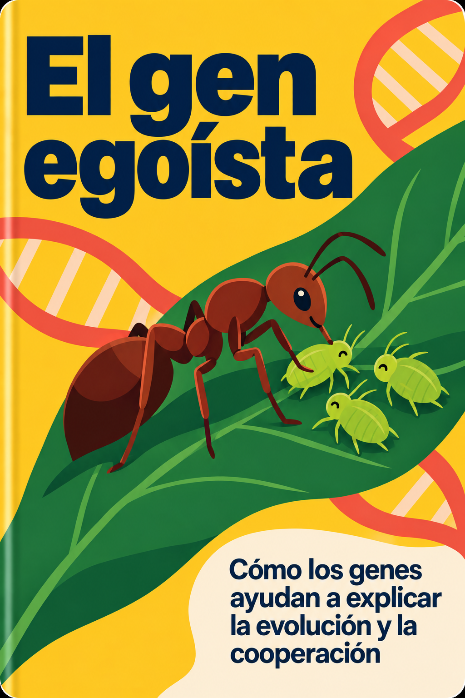
El gen egoísta
Richard Dawkins · versión 1
Instalada2026-09-12
Ver prompt
Use case: stylized-concept. One original finished Spanish book cover for Curva, 1024x1536 portrait. Input images 1 and 2 are STYLE REFERENCES ONLY: use their confident flat editorial drawings, huge carefully composed typography, charming simplified shapes, strong colors and left-edge fold. Invent a completely different composition from the references. This is a drawing, never a photograph or a realistic painting. Large clear silhouettes, clean organic contours, a few deliberately chosen details, elegant visual wit, high contrast and vibrant harmonious colors. No photorealism, no detailed anatomical rendering, no grain or paper/collage texture, no 3D plastic. At most one simple flat shadow shade per object. Objects have believable colors and people natural warm skin tones. Small expressive faces must have correct eyes and hands must be anatomically coherent and simplified. The collection must look varied: obey the individual typography, framing and palette below, not a repeated template. The illustration and title must be beautifully readable on a 190px-wide mobile card. Front-on cover fills the canvas with rounded corners, no perspective book mockup, no external shadow. MANDATORY FINISH: a narrow visible vertical pressed book-cover fold about 2% inward from the LEFT edge for the entire height, a fine highlight followed immediately by a subtle darker groove, matching the references. Keep the title clear of the fold and page edges. Print only the exact title and editorial line below with perfect Spanish accents. No author, year, brand, watermark or extra text.
Exact title: El gen egoísta
Exact editorial line: La evolución vista desde los genes
Art direction: Sunny golden-yellow background. An enormous green leaf runs diagonally from lower left to upper right; on the leaf a clearly illustrated dark reddish-brown ant with exactly six simple legs and two antennae tends three small lime-green aphids. Broad clean drawn forms, no insect realism, no creepy fine detail. A coral-red DNA ribbon in the background curves once around the leaf like a graphic frame, not a scientific diagram. Heavy navy title 'El gen / egoísta' dominates the top left, editorial line small and navy at bottom on a cream shape. Intriguing natural-history poster with green, amber, coral and navy; ant is large enough to read on thumbnail but is a stylized drawing.
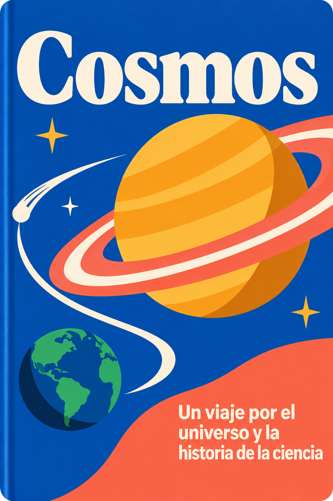
Cosmos
Carl Sagan · versión 1
Instalada2026-09-12
Ver prompt
Use case: stylized-concept. One original finished Spanish book cover for Curva, 1024x1536 portrait. Input images 1 and 2 are STYLE REFERENCES ONLY: use their confident flat editorial drawings, huge carefully composed typography, charming simplified shapes, strong colors and left-edge fold. Invent a completely different composition from the references. This is a drawing, never a photograph or a realistic painting. Large clear silhouettes, clean organic contours, a few deliberately chosen details, elegant visual wit, high contrast and vibrant harmonious colors. No photorealism, no detailed anatomical rendering, no grain or paper/collage texture, no 3D plastic. At most one simple flat shadow shade per object. Objects have believable colors and people natural warm skin tones. Small expressive faces must have correct eyes and hands must be anatomically coherent and simplified. The collection must look varied: obey the individual typography, framing and palette below, not a repeated template. The illustration and title must be beautifully readable on a 190px-wide mobile card. Front-on cover fills the canvas with rounded corners, no perspective book mockup, no external shadow. MANDATORY FINISH: a narrow visible vertical pressed book-cover fold about 2% inward from the LEFT edge for the entire height, a fine highlight followed immediately by a subtle darker groove, matching the references. Keep the title clear of the fold and page edges. Print only the exact title and editorial line below with perfect Spanish accents. No author, year, brand, watermark or extra text.
Exact title: Cosmos
Exact editorial line: Una mirada al universo y a nuestro lugar en él
Art direction: Bright electric-cobalt sky. Huge title 'Cosmos' in warm cream exuberant heavy serif across the upper third, letters beautifully spaced. A monumental golden-orange ringed planet tilts diagonally through the center; its rings are broad flat coral and cream bands. A small deep-green-and-blue Earth floats in the bottom left; between planets a cream winding comet trajectory and three carefully placed simple star shapes create a sense of discovery. A coral red lower-right block of open sky carries the cream editorial line. Wonder-filled flat celestial travel poster, not realistic space rendering, no astronaut, no busy field of speckles, no extra planet labels.
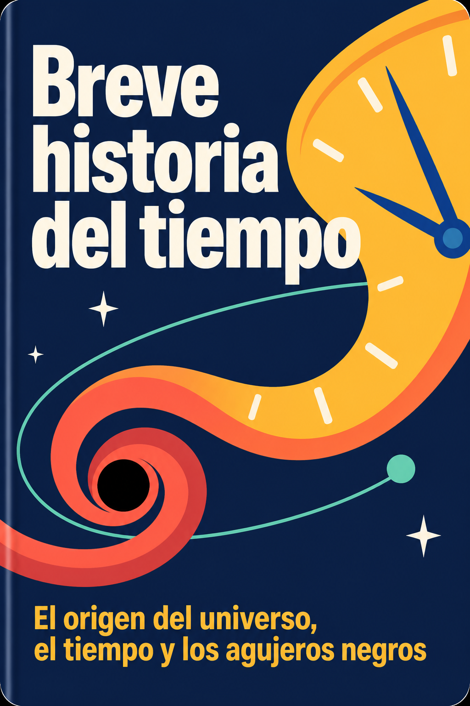
Breve historia del tiempo
Stephen Hawking · versión 1
Instalada2026-09-12
Ver prompt
Use case: stylized-concept. One original finished Spanish book cover for Curva, 1024x1536 portrait. Input images 1 and 2 are STYLE REFERENCES ONLY: use their confident flat editorial drawings, huge carefully composed typography, charming simplified shapes, strong colors and left-edge fold. Invent a completely different composition from the references. This is a drawing, never a photograph or a realistic painting. Large clear silhouettes, clean organic contours, a few deliberately chosen details, elegant visual wit, high contrast and vibrant harmonious colors. No photorealism, no detailed anatomical rendering, no grain or paper/collage texture, no 3D plastic. At most one simple flat shadow shade per object. Objects have believable colors and people natural warm skin tones. Small expressive faces must have correct eyes and hands must be anatomically coherent and simplified. The collection must look varied: obey the individual typography, framing and palette below, not a repeated template. The illustration and title must be beautifully readable on a 190px-wide mobile card. Front-on cover fills the canvas with rounded corners, no perspective book mockup, no external shadow. MANDATORY FINISH: a narrow visible vertical pressed book-cover fold about 2% inward from the LEFT edge for the entire height, a fine highlight followed immediately by a subtle darker groove, matching the references. Keep the title clear of the fold and page edges. Print only the exact title and editorial line below with perfect Spanish accents. No author, year, brand, watermark or extra text.
Exact title: Breve historia del tiempo
Exact editorial line: Del origen del universo a los agujeros negros
Art direction: Deep midnight-indigo background, a giant golden-yellow clock face in the upper right bends into a flat coral-red spiral toward a small dark circular black-hole center at lower left. This is a visual metaphor for time and gravity, not a labeled scientific diagram. There are no clock numbers or equations, just simple cream hour marks and two blue hands following the curve. The exact title appears in very large cream condensed sans letters arranged in the broad top-left and central clear area, four lines: 'Breve historia / del tiempo'. Elegant mint-green slender orbital curve and just three small stars complete the composition. Editorial line at bottom in golden-yellow. Geometric but lively, dark backdrop with large bright shapes, no realistic cosmic glow.
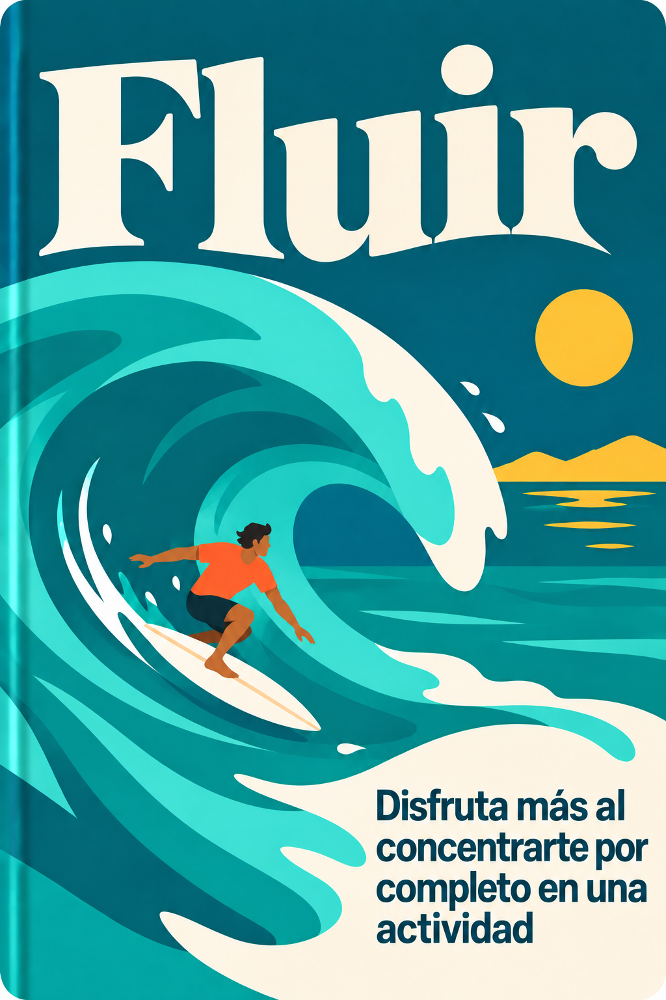
Fluir
Mihály Csíkszentmihályi · versión 2
Instalada2026-09-12
Ver prompt
Precise typography edit of this existing finished Spanish illustrated cover. Replace ONLY the editorial subtitle "Cuando la atención lo llena todo" with the exact new subtitle "Disfruta más al concentrarte por completo en una actividad". The subtitle must concretely explain the book. Typeset the complete new sentence beautifully in 2–4 balanced lines, with a clear readable font size and generous margins; fit the existing subtitle area by adjusting line breaks and only modestly extending its solid color backing if needed. No tiny text, no cropped words. Preserve the main title "Fluir" exactly, all illustrations, colors, composition, the narrow full-height left-edge book fold and rounded corners. Do not redraw the art or add new objects. Maintain 1024x1536 portrait. No other text edits.
Influencia
Robert Cialdini · versión 2
Instalada2026-09-12
Ver prompt
Precise typography edit of this existing finished Spanish illustrated cover. Replace ONLY the editorial subtitle "La psicología de decir que sí" with the exact new subtitle "Las técnicas de persuasión que influyen en tus decisiones". The subtitle must concretely explain the book. Typeset the complete new sentence beautifully in 2–4 balanced lines, with a clear readable font size and generous margins; fit the existing subtitle area by adjusting line breaks and only modestly extending its solid color backing if needed. No tiny text, no cropped words. Preserve the main title "Influencia" exactly, all illustrations, colors, composition, the narrow full-height left-edge book fold and rounded corners. Do not redraw the art or add new objects. Maintain 1024x1536 portrait. No other text edits.
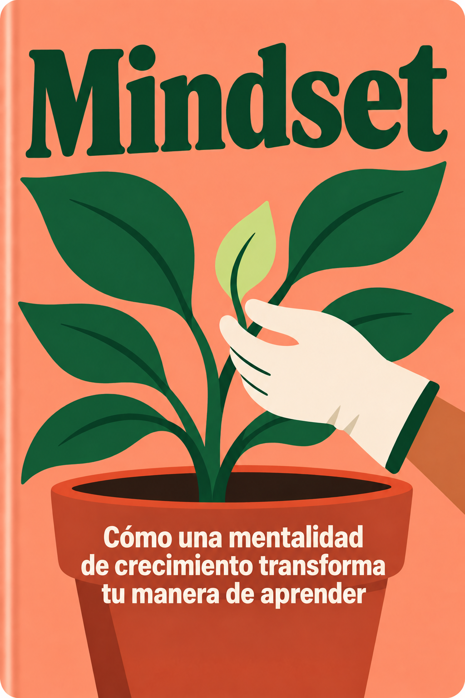
Mindset
Carol Dweck · versión 2
Instalada2026-09-12
Ver prompt
Precise typography edit of this existing finished Spanish illustrated cover. Replace ONLY the editorial subtitle "El potencial se cultiva" with the exact new subtitle "Cómo una mentalidad de crecimiento transforma tu manera de aprender". The subtitle must concretely explain the book. Typeset the complete new sentence beautifully in 2–4 balanced lines, with a clear readable font size and generous margins; fit the existing subtitle area by adjusting line breaks and only modestly extending its solid color backing if needed. No tiny text, no cropped words. Preserve the main title "Mindset" exactly, all illustrations, colors, composition, the narrow full-height left-edge book fold and rounded corners. Do not redraw the art or add new objects. Maintain 1024x1536 portrait. No other text edits.
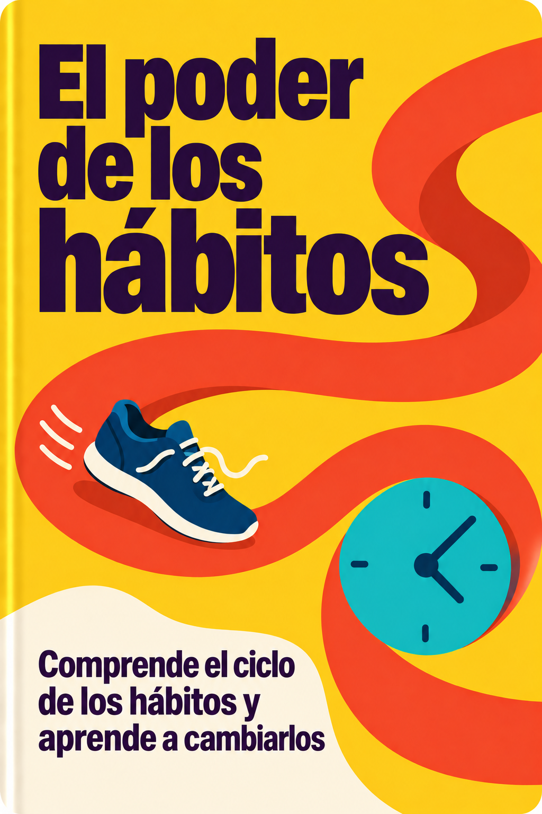
El poder de los hábitos
Charles Duhigg · versión 2
Instalada2026-09-12
Ver prompt
Precise typography edit of this existing finished Spanish illustrated cover. Replace ONLY the editorial subtitle "Cómo se forma lo que repetimos" with the exact new subtitle "Comprende el ciclo de los hábitos y aprende a cambiarlos". The subtitle must concretely explain the book. Typeset the complete new sentence beautifully in 2–4 balanced lines, with a clear readable font size and generous margins; fit the existing subtitle area by adjusting line breaks and only modestly extending its solid color backing if needed. No tiny text, no cropped words. Preserve the main title "El poder de los hábitos" exactly, all illustrations, colors, composition, the narrow full-height left-edge book fold and rounded corners. Do not redraw the art or add new objects. Maintain 1024x1536 portrait. No other text edits.
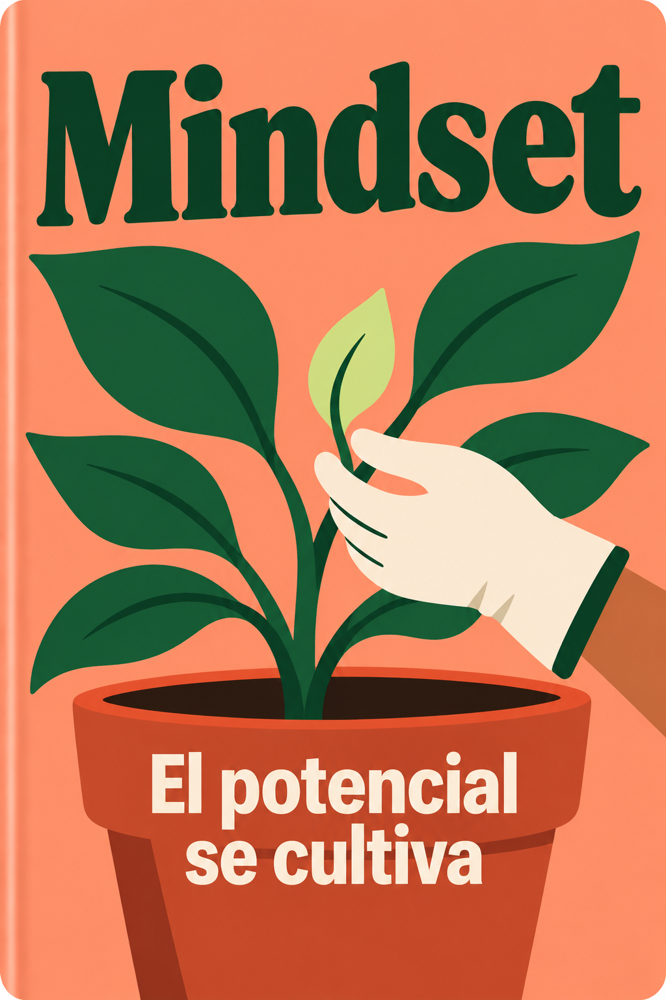
Mindset
Carol Dweck · versión 1
Versión anterior2026-09-12
Ver prompt
Use case: stylized-concept. One original finished Spanish book cover for Curva, 1024x1536 portrait. Input images 1 and 2 are STYLE REFERENCES ONLY: use their confident flat editorial drawings, huge carefully composed typography, charming simplified shapes, strong colors and left-edge fold. Invent a completely different composition from the references. This is a drawing, never a photograph or a realistic painting. Large clear silhouettes, clean organic contours, a few deliberately chosen details, elegant visual wit, high contrast and vibrant harmonious colors. No photorealism, no detailed anatomical rendering, no grain or paper/collage texture, no 3D plastic. At most one simple flat shadow shade per object. Objects have believable colors and people natural warm skin tones. Small expressive faces must have correct eyes and hands must be anatomically coherent and simplified. The collection must look varied: obey the individual typography, framing and palette below, not a repeated template. The illustration and title must be beautifully readable on a 190px-wide mobile card. Front-on cover fills the canvas with rounded corners, no perspective book mockup, no external shadow. MANDATORY FINISH: a narrow visible vertical pressed book-cover fold about 2% inward from the LEFT edge for the entire height, a fine highlight followed immediately by a subtle darker groove, matching the references. Keep the title clear of the fold and page edges. Print only the exact title and editorial line below with perfect Spanish accents. No author, year, brand, watermark or extra text.
Exact title: Mindset
Exact editorial line: El potencial se cultiva
Art direction: Bright peach-coral backdrop. One monumental terracotta plant pot fills the lower half, a vigorous green branching plant grows out of it and around the giant title at the top. A single small pale-green unfurling leaf becomes the focal point, framed by a cream gardener's glove lightly supporting its stem from the lower right. Rich forest-green title 'Mindset' in an expressive heavy rounded serif, one line or two beautiful lines, absolutely dominant; editorial line in cream on the terracotta pot. The plant is an elegant hand-drawn organic silhouette with only 7 broad leaves, not botanical realism or tiny decorations. Harmonious coral, terracotta, green and warm cream.
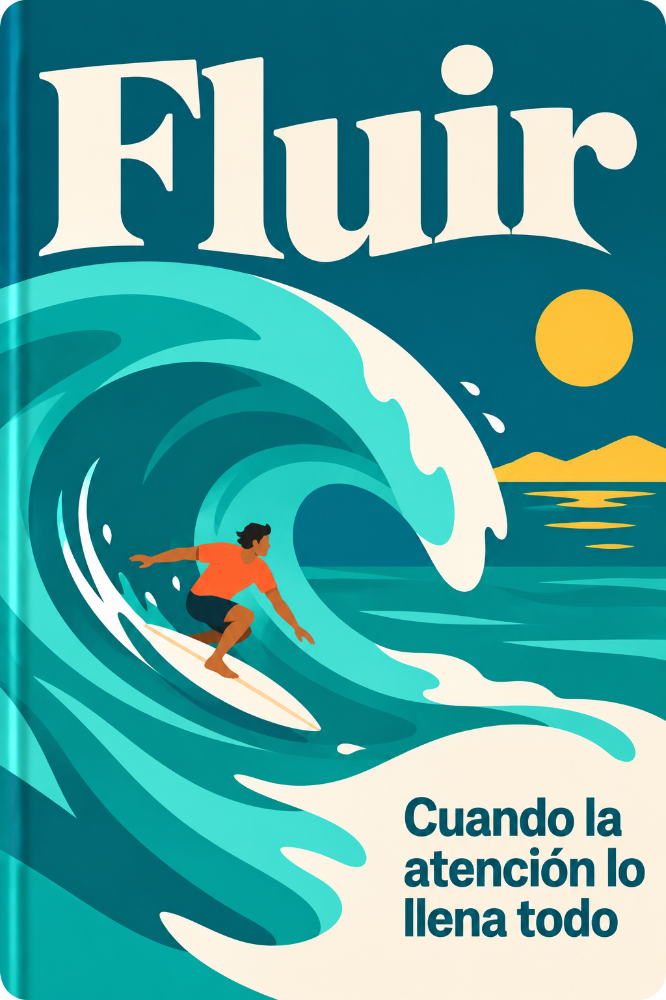
Fluir
Mihály Csíkszentmihályi · versión 1
Versión anterior2026-09-12
Ver prompt
Use case: stylized-concept. One original finished Spanish book cover for Curva, 1024x1536 portrait. Input images 1 and 2 are STYLE REFERENCES ONLY: use their confident flat editorial drawings, huge carefully composed typography, charming simplified shapes, strong colors and left-edge fold. Invent a completely different composition from the references. This is a drawing, never a photograph or a realistic painting. Large clear silhouettes, clean organic contours, a few deliberately chosen details, elegant visual wit, high contrast and vibrant harmonious colors. No photorealism, no detailed anatomical rendering, no grain or paper/collage texture, no 3D plastic. At most one simple flat shadow shade per object. Objects have believable colors and people natural warm skin tones. Small expressive faces must have correct eyes and hands must be anatomically coherent and simplified. The collection must look varied: obey the individual typography, framing and palette below, not a repeated template. The illustration and title must be beautifully readable on a 190px-wide mobile card. Front-on cover fills the canvas with rounded corners, no perspective book mockup, no external shadow. MANDATORY FINISH: a narrow visible vertical pressed book-cover fold about 2% inward from the LEFT edge for the entire height, a fine highlight followed immediately by a subtle darker groove, matching the references. Keep the title clear of the fold and page edges. Print only the exact title and editorial line below with perfect Spanish accents. No author, year, brand, watermark or extra text.
Exact title: Fluir
Exact editorial line: Cuando la atención lo llena todo
Art direction: A vivid turquoise and emerald wave curls from the left across the entire lower two thirds, its interior a large clear negative-space tunnel. A tiny flat human surfer with natural tan skin, dark hair, orange shirt and cream board leans naturally along the wave's curve; silhouette small enough that no detailed face is needed. Huge warm-cream bold flowing serif title 'Fluir' sits across the top on deep ocean teal, its baseline follows a very slight wave. Sunny golden-yellow thin horizon and disk at upper right. Editorial line in dark teal on the cream foam at bottom right. Sophisticated joyful movement, strongly drawn flat water, no photographic surf splash, no stock wave icon.
Influencia
Robert Cialdini · versión 1
Versión anterior2026-09-12
Ver prompt
Use case: stylized-concept. One original finished Spanish book cover for Curva, 1024x1536 portrait. Input images 1 and 2 are STYLE REFERENCES ONLY: use their confident flat editorial drawings, huge carefully composed typography, charming simplified shapes, strong colors and left-edge fold. Invent a completely different composition from the references. This is a drawing, never a photograph or a realistic painting. Large clear silhouettes, clean organic contours, a few deliberately chosen details, elegant visual wit, high contrast and vibrant harmonious colors. No photorealism, no detailed anatomical rendering, no grain or paper/collage texture, no 3D plastic. At most one simple flat shadow shade per object. Objects have believable colors and people natural warm skin tones. Small expressive faces must have correct eyes and hands must be anatomically coherent and simplified. The collection must look varied: obey the individual typography, framing and palette below, not a repeated template. The illustration and title must be beautifully readable on a 190px-wide mobile card. Front-on cover fills the canvas with rounded corners, no perspective book mockup, no external shadow. MANDATORY FINISH: a narrow visible vertical pressed book-cover fold about 2% inward from the LEFT edge for the entire height, a fine highlight followed immediately by a subtle darker groove, matching the references. Keep the title clear of the fold and page edges. Print only the exact title and editorial line below with perfect Spanish accents. No author, year, brand, watermark or extra text.
Exact title: Influencia
Exact editorial line: La psicología de decir que sí
Art direction: Deep saturated royal-purple background. A giant friendly coral-orange megaphone enters from the lower left, its flat cream mouth emits three enormous golden-yellow sound waves that curve around and gently push the typography diagonally upward. Place the single-word title 'Influencia' in HUGE condensed cream lowercase-style heavy type across the center in two aesthetically balanced lines only if needed. One small mint-green speech balloon between sound waves holds a drawn check mark, not more words. Graphic theatrical poster, no faces, no puppet strings, no coercive imagery. Editorial line upper left in yellow.
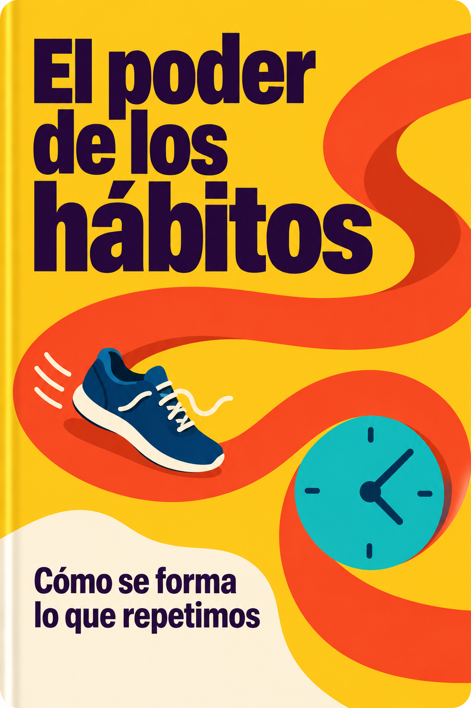
El poder de los hábitos
Charles Duhigg · versión 1
Versión anterior2026-09-12
Ver prompt
Use case: stylized-concept. One original finished Spanish book cover for Curva, 1024x1536 portrait. Input images 1 and 2 are STYLE REFERENCES ONLY: use their confident flat editorial drawings, huge carefully composed typography, charming simplified shapes, strong colors and left-edge fold. Invent a completely different composition from the references. This is a drawing, never a photograph or a realistic painting. Large clear silhouettes, clean organic contours, a few deliberately chosen details, elegant visual wit, high contrast and vibrant harmonious colors. No photorealism, no detailed anatomical rendering, no grain or paper/collage texture, no 3D plastic. At most one simple flat shadow shade per object. Objects have believable colors and people natural warm skin tones. Small expressive faces must have correct eyes and hands must be anatomically coherent and simplified. The collection must look varied: obey the individual typography, framing and palette below, not a repeated template. The illustration and title must be beautifully readable on a 190px-wide mobile card. Front-on cover fills the canvas with rounded corners, no perspective book mockup, no external shadow. MANDATORY FINISH: a narrow visible vertical pressed book-cover fold about 2% inward from the LEFT edge for the entire height, a fine highlight followed immediately by a subtle darker groove, matching the references. Keep the title clear of the fold and page edges. Print only the exact title and editorial line below with perfect Spanish accents. No author, year, brand, watermark or extra text.
Exact title: El poder de los hábitos
Exact editorial line: Cómo se forma lo que repetimos
Art direction: Vivid saffron-yellow background with a massive red-orange looping ribbon path shaped like one flowing circular habit loop, not arrows or an infographic. A small flat navy running shoe travels the loop in the lower half; cream shoelaces and a warm white sole, no leg or person. Giant dark aubergine condensed sans title in the upper half, with HÁBITOS the strongest word, line broken 'El poder / de los hábitos'. A single turquoise clock face without numbers sits where the ribbon bends in the lower right. Editorial line tucked in a cream pocket of negative space. Bold playful close-up poster, no tiny scattered icons.
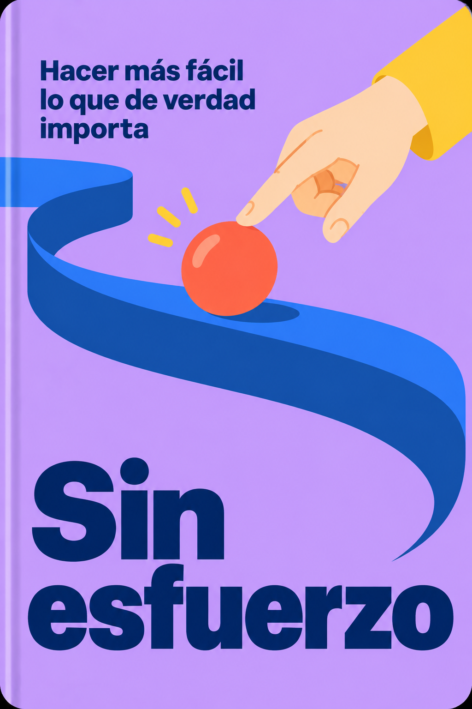
Sin esfuerzo
Greg McKeown · versión 2
Instalada2026-09-12
Ver prompt
Create ONE finished original Spanish book cover for Curva, portrait 1024x1536. The two attached images are STYLE REFERENCES ONLY, not edit targets. Match their clear bold flat editorial DRAWING, simple expressive shapes, charming simplified faces and excellent thumbnail legibility. Original composition. Crucial user preference: unequivocally a DRAWING, NOT REALISTIC. Clean flat areas of color, confident organic contours. NO photographic texture, no detailed skin, no realistic flowers, no lifelike rendering, no 3D, no airbrush, no grain or collage materials. At most one simple flat shadow shape. People have warm natural skin colors. Plants have natural greens; objects use believable colors within a vibrant harmonious palette. Oversized stylish title, deliberate professional typesetting and generous spacing. Fill the entire canvas with the cover, no book mockup, spine, perspective, external shadow, frames or UI. Corners will be rounded by the application. Do not print author, year or brand. Print only the exact title and editorial line below, with correct Spanish accents.
Exact title: Sin esfuerzo
Exact editorial line: Hacer más fácil lo que de verdad importa
Art direction: Greg McKeown discusses reducing unnecessary difficulty in essential work. Quiet, beautiful cover on pale butter-yellow. One tall cobalt ribbon-like ramp curls across the image with a single coral sphere resting near its gently descending edge. An elegant cream hand merely guides the sphere with one fingertip: tiny deliberate movement, big visual clarity. Large dark-ink title in the lower third, 'Sin' / 'esfuerzo', with the word esfuerzo confidently spanning the width. Small dark-blue editorial line upper-left. Restrained poetic kinetic still life, subtle print texture, no gym imagery, clocks, gears or over-rendered 3D balls.
COLLECTION ART DIRECTION: This cover must be strikingly colorful and inviting on a bookshelf at 190 pixels wide, not merely tasteful. Strong bright distinctive palette with at least three deliberate colors. Clear huge illustration readable at a glance. Avoid washed-out, muddy, dull, beige-dominated palettes. Playful confident color blocking and a surprising graphic composition. Keep the title dominant and legible. Maintain variety from the other covers, not the same layout every time.
Override background to saturated lavender with golden-yellow and coral-red accents, use a flat blue curved ramp, no beige background.
MANDATORY FINISH: A visible subtle vertical book-cover crease, about 2% inside the LEFT edge, the full height of the cover: narrow curved highlight immediately followed by a soft darker vertical groove, exactly like the left-edge fold of the reference covers. This is a frontal flat cover with a left-edge pressed fold, not a perspective book mockup. Maintain rounded corners. Do not omit this crease.
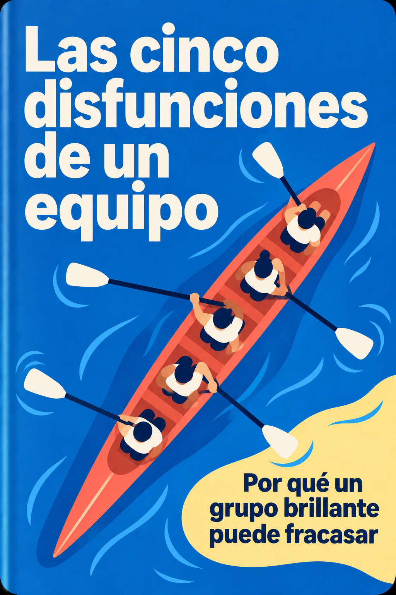
Las cinco disfunciones de un equipo
Patrick Lencioni · versión 2
Instalada2026-09-12
Ver prompt
Create ONE finished original Spanish book cover for Curva, portrait 1024x1536. The two attached images are STYLE REFERENCES ONLY, not edit targets. Match their clear bold flat editorial DRAWING, simple expressive shapes, charming simplified faces and excellent thumbnail legibility. Original composition. Crucial user preference: unequivocally a DRAWING, NOT REALISTIC. Clean flat areas of color, confident organic contours. NO photographic texture, no detailed skin, no realistic flowers, no lifelike rendering, no 3D, no airbrush, no grain or collage materials. At most one simple flat shadow shape. People have warm natural skin colors. Plants have natural greens; objects use believable colors within a vibrant harmonious palette. Oversized stylish title, deliberate professional typesetting and generous spacing. Fill the entire canvas with the cover, no book mockup, spine, perspective, external shadow, frames or UI. Corners will be rounded by the application. Do not print author, year or brand. Print only the exact title and editorial line below, with correct Spanish accents.
Exact title: Las cinco disfunciones de un equipo
Exact editorial line: Por qué un grupo brillante puede fracasar
Art direction: Patrick Lencioni's management fable concerns trust, conflict, commitment, accountability, and collective results. On cobalt, a large coral rowing shell seen directly from above crosses the cover diagonally. Five cream oars are pointing in visibly conflicting directions, each connected to its seat position, no diagram labels and no extra limbs. Only five small simplified dark heads in boat, not detailed people. Title at top/left in huge cream condensed lettering across readable short lines. Editorial line in navy on a generous pale-yellow water patch at bottom-right. Graphic, witty, clean, intentional asymmetry, no generic puzzle pieces.
COLLECTION ART DIRECTION: This cover must be strikingly colorful and inviting on a bookshelf at 190 pixels wide, not merely tasteful. Strong bright distinctive palette with at least three deliberate colors. Clear huge illustration readable at a glance. Avoid washed-out, muddy, dull, beige-dominated palettes. Playful confident color blocking and a surprising graphic composition. Keep the title dominant and legible. Maintain variety from the other covers, not the same layout every time.
MANDATORY FINISH: A visible subtle vertical book-cover crease, about 2% inside the LEFT edge, the full height of the cover: narrow curved highlight immediately followed by a soft darker vertical groove, exactly like the left-edge fold of the reference covers. This is a frontal flat cover with a left-edge pressed fold, not a perspective book mockup. Maintain rounded corners. Do not omit this crease.
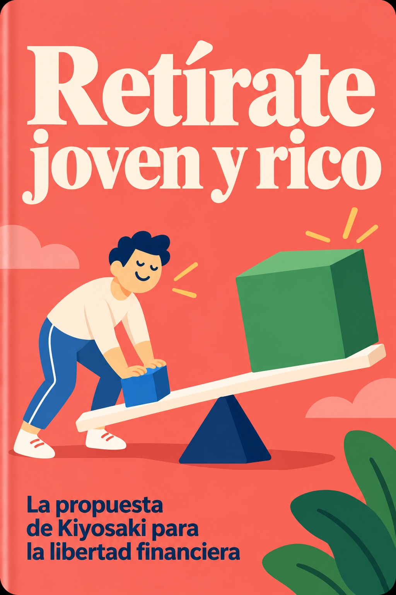
Retírate joven y rico
Robert Kiyosaki · versión 2
Instalada2026-09-12
Ver prompt
Create ONE finished original Spanish book cover for Curva, portrait 1024x1536. The two attached images are STYLE REFERENCES ONLY, not edit targets. Match their clear bold flat editorial DRAWING, simple expressive shapes, charming simplified faces and excellent thumbnail legibility. Original composition. Crucial user preference: unequivocally a DRAWING, NOT REALISTIC. Clean flat areas of color, confident organic contours. NO photographic texture, no detailed skin, no realistic flowers, no lifelike rendering, no 3D, no airbrush, no grain or collage materials. At most one simple flat shadow shape. People have warm natural skin colors. Plants have natural greens; objects use believable colors within a vibrant harmonious palette. Oversized stylish title, deliberate professional typesetting and generous spacing. Fill the entire canvas with the cover, no book mockup, spine, perspective, external shadow, frames or UI. Corners will be rounded by the application. Do not print author, year or brand. Print only the exact title and editorial line below, with correct Spanish accents.
Exact title: Retírate joven y rico
Exact editorial line: La propuesta de Kiyosaki para la libertad financiera
Art direction: Robert Kiyosaki explains financial leverage and independence. Editorial metaphor, not a recommendation or guarantee. Warm coral background. A large elegant ivory lever balances on a dark-navy triangular fulcrum: a tiny blue cube at one end raises a much larger green cube at the other. Hand-drawn flat blocks, graphic depth with two solid-color planes at most. Title in oversized ivory serif in the upper half, dramatic 'Retírate' first line, 'joven y rico' below. Short editorial line at bottom-left in navy with 3 legible lines. Sophisticated surprising mechanical still life; no millionaire clichés, coin stacks or growth arrows.
COLLECTION ART DIRECTION: This cover must be strikingly colorful and inviting on a bookshelf at 190 pixels wide, not merely tasteful. Strong bright distinctive palette with at least three deliberate colors. Clear huge illustration readable at a glance. Avoid washed-out, muddy, dull, beige-dominated palettes. Playful confident color blocking and a surprising graphic composition. Keep the title dominant and legible. Maintain variety from the other covers, not the same layout every time.
MANDATORY FINISH: A visible subtle vertical book-cover crease, about 2% inside the LEFT edge, the full height of the cover: narrow curved highlight immediately followed by a soft darker vertical groove, exactly like the left-edge fold of the reference covers. This is a frontal flat cover with a left-edge pressed fold, not a perspective book mockup. Maintain rounded corners. Do not omit this crease.
Recompra tu tiempo
Dan Martell · versión 2
Instalada2026-09-12
Ver prompt
Create ONE finished original Spanish book cover for Curva, portrait 1024x1536. The two attached images are STYLE REFERENCES ONLY, not edit targets. Match their clear bold flat editorial DRAWING, simple expressive shapes, charming simplified faces and excellent thumbnail legibility. Original composition. Crucial user preference: unequivocally a DRAWING, NOT REALISTIC. Clean flat areas of color, confident organic contours. NO photographic texture, no detailed skin, no realistic flowers, no lifelike rendering, no 3D, no airbrush, no grain or collage materials. At most one simple flat shadow shape. People have warm natural skin colors. Plants have natural greens; objects use believable colors within a vibrant harmonious palette. Oversized stylish title, deliberate professional typesetting and generous spacing. Fill the entire canvas with the cover, no book mockup, spine, perspective, external shadow, frames or UI. Corners will be rounded by the application. Do not print author, year or brand. Print only the exact title and editorial line below, with correct Spanish accents.
Exact title: Recompra tu tiempo
Exact editorial line: Delegar para recuperar lo que solo tú puedes hacer
Art direction: Dan Martell argues for delegating tasks to recover useful time. Mint-green background, deep navy, cream and orange. A huge cream calendar page curls back from the lower-left, and a coral hand passes a small navy task-card to a second ochre hand at the right. The calendar has only a few blank grid squares, no numbers, and opens a large restful dark-blue space beneath. Title in enormous navy grotesk in upper third, 'Recompra' / 'tu tiempo'; short editorial line in cream within the opened dark-blue area. Surprising clear paper-and-hands composition, no clocks or coins to distinguish other covers.
COLLECTION ART DIRECTION: This cover must be strikingly colorful and inviting on a bookshelf at 190 pixels wide, not merely tasteful. Strong bright distinctive palette with at least three deliberate colors. Clear huge illustration readable at a glance. Avoid washed-out, muddy, dull, beige-dominated palettes. Playful confident color blocking and a surprising graphic composition. Keep the title dominant and legible. Maintain variety from the other covers, not the same layout every time.
MANDATORY FINISH: A visible subtle vertical book-cover crease, about 2% inside the LEFT edge, the full height of the cover: narrow curved highlight immediately followed by a soft darker vertical groove, exactly like the left-edge fold of the reference covers. This is a frontal flat cover with a left-edge pressed fold, not a perspective book mockup. Maintain rounded corners. Do not omit this crease.
Te enseñaré a ser rico
Ramit Sethi · versión 2
Instalada2026-09-12
Ver prompt
Create ONE finished original Spanish book cover for Curva, portrait 1024x1536. The two attached images are STYLE REFERENCES ONLY, not edit targets. Match their clear bold flat editorial DRAWING, simple expressive shapes, charming simplified faces and excellent thumbnail legibility. Original composition. Crucial user preference: unequivocally a DRAWING, NOT REALISTIC. Clean flat areas of color, confident organic contours. NO photographic texture, no detailed skin, no realistic flowers, no lifelike rendering, no 3D, no airbrush, no grain or collage materials. At most one simple flat shadow shape. People have warm natural skin colors. Plants have natural greens; objects use believable colors within a vibrant harmonious palette. Oversized stylish title, deliberate professional typesetting and generous spacing. Fill the entire canvas with the cover, no book mockup, spine, perspective, external shadow, frames or UI. Corners will be rounded by the application. Do not print author, year or brand. Print only the exact title and editorial line below, with correct Spanish accents.
Exact title: Te enseñaré a ser rico
Exact editorial line: Organiza tu dinero para vivir a tu manera
Art direction: Ramit Sethi offers a personal-finance system around conscious spending, saving, and investing. A graphic top-down coral desk with four bold cream envelopes of different sizes, one open showing a simple blue card; a hand slides a single gold coin toward the open envelope. Absolutely no text or numbers on the other envelopes. Large dark-indigo title integrated across one especially broad foreground cream envelope. Short editorial line at upper-left in navy on coral. Editorial still life, a few strong geometric forms, clean shadows as flat ink shapes only. No luxury brands, yacht or money rain.
COLLECTION ART DIRECTION: This cover must be strikingly colorful and inviting on a bookshelf at 190 pixels wide, not merely tasteful. Strong bright distinctive palette with at least three deliberate colors. Clear huge illustration readable at a glance. Avoid washed-out, muddy, dull, beige-dominated palettes. Playful confident color blocking and a surprising graphic composition. Keep the title dominant and legible. Maintain variety from the other covers, not the same layout every time.
MANDATORY FINISH: A visible subtle vertical book-cover crease, about 2% inside the LEFT edge, the full height of the cover: narrow curved highlight immediately followed by a soft darker vertical groove, exactly like the left-edge fold of the reference covers. This is a frontal flat cover with a left-edge pressed fold, not a perspective book mockup. Maintain rounded corners. Do not omit this crease.
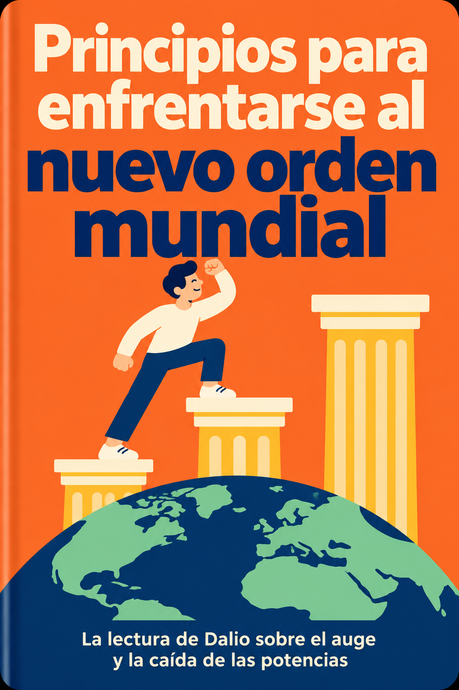
Principios para enfrentarse al nuevo orden mundial
Ray Dalio · versión 2
Instalada2026-09-12
Ver prompt
Create ONE finished original Spanish book cover for Curva, portrait 1024x1536. The two attached images are STYLE REFERENCES ONLY, not edit targets. Match their clear bold flat editorial DRAWING, simple expressive shapes, charming simplified faces and excellent thumbnail legibility. Original composition. Crucial user preference: unequivocally a DRAWING, NOT REALISTIC. Clean flat areas of color, confident organic contours. NO photographic texture, no detailed skin, no realistic flowers, no lifelike rendering, no 3D, no airbrush, no grain or collage materials. At most one simple flat shadow shape. People have warm natural skin colors. Plants have natural greens; objects use believable colors within a vibrant harmonious palette. Oversized stylish title, deliberate professional typesetting and generous spacing. Fill the entire canvas with the cover, no book mockup, spine, perspective, external shadow, frames or UI. Corners will be rounded by the application. Do not print author, year or brand. Print only the exact title and editorial line below, with correct Spanish accents.
Exact title: Principios para enfrentarse al nuevo orden mundial
Exact editorial line: La lectura de Dalio sobre el auge y la caída de las potencias
Art direction: Bold flat editorial poster on vivid tangerine-orange background, a large midnight-blue sphere representing Earth rises from the bottom with mint-green simplified continents. Around it three oversized golden-yellow and cream stacked geometric column silhouettes of differing heights suggest the changing balance of world powers. Massive cream and navy condensed title occupies the top 60%, carefully line broken for excellent legibility: Principios para / enfrentarse al / nuevo orden / mundial. Editorial line in small cream at bottom on navy. A sophisticated high-contrast graphic, no flags, no weapons, no tiny geopolitical symbols, no realistic globe or lighting.
MANDATORY FINISH: A visible subtle vertical book-cover crease, about 2% inside the LEFT edge, the full height of the cover: narrow curved highlight immediately followed by a soft darker vertical groove, exactly like the left-edge fold of the reference covers. This is a frontal flat cover with a left-edge pressed fold, not a perspective book mockup. Maintain rounded corners. Do not omit this crease.
Side Hustle
Chris Guillebeau · versión 2
Instalada2026-09-12
Ver prompt
Create ONE finished original Spanish book cover for Curva, portrait 1024x1536. The two attached images are STYLE REFERENCES ONLY, not edit targets. Match their clear bold flat editorial DRAWING, simple expressive shapes, charming simplified faces and excellent thumbnail legibility. Original composition. Crucial user preference: unequivocally a DRAWING, NOT REALISTIC. Clean flat areas of color, confident organic contours. NO photographic texture, no detailed skin, no realistic flowers, no lifelike rendering, no 3D, no airbrush, no grain or collage materials. At most one simple flat shadow shape. People have warm natural skin colors. Plants have natural greens; objects use believable colors within a vibrant harmonious palette. Oversized stylish title, deliberate professional typesetting and generous spacing. Fill the entire canvas with the cover, no book mockup, spine, perspective, external shadow, frames or UI. Corners will be rounded by the application. Do not print author, year or brand. Print only the exact title and editorial line below, with correct Spanish accents.
Exact title: Side Hustle
Exact editorial line: Un ingreso propio sin dejar tu empleo
Art direction: Chris Guillebeau describes building a small side business alongside a job. A striking deep-navy nighttime home studio: a single coral desk lamp lights a cream patch across a tiny workbench, a turquoise sewing machine and one yellow piece of fabric, all clean simplified silhouettes. Human warmth without showing a person. Huge cream title 'Side' / 'Hustle' dominates upper left; the lamp arm creates a diagonal leading to the workbench lower-right. Small editorial line integrated in the lit cream area, navy letters. Elegant contemporary hand-cut illustration with only necessary objects, no generic laptop or rocket.
COLLECTION ART DIRECTION: This cover must be strikingly colorful and inviting on a bookshelf at 190 pixels wide, not merely tasteful. Strong bright distinctive palette with at least three deliberate colors. Clear huge illustration readable at a glance. Avoid washed-out, muddy, dull, beige-dominated palettes. Playful confident color blocking and a surprising graphic composition. Keep the title dominant and legible. Maintain variety from the other covers, not the same layout every time.
MANDATORY FINISH: A visible subtle vertical book-cover crease, about 2% inside the LEFT edge, the full height of the cover: narrow curved highlight immediately followed by a soft darker vertical groove, exactly like the left-edge fold of the reference covers. This is a frontal flat cover with a left-edge pressed fold, not a perspective book mockup. Maintain rounded corners. Do not omit this crease.
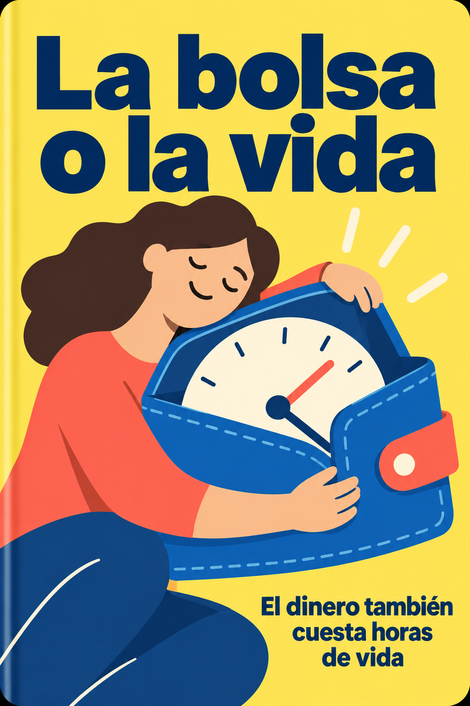
La bolsa o la vida
Robin y Dominguez · versión 2
Instalada2026-09-12
Ver prompt
Create ONE finished original Spanish book cover for Curva, portrait 1024x1536. The two attached images are STYLE REFERENCES ONLY, not edit targets. Match their clear bold flat editorial DRAWING, simple expressive shapes, charming simplified faces and excellent thumbnail legibility. Original composition. Crucial user preference: unequivocally a DRAWING, NOT REALISTIC. Clean flat areas of color, confident organic contours. NO photographic texture, no detailed skin, no realistic flowers, no lifelike rendering, no 3D, no airbrush, no grain or collage materials. At most one simple flat shadow shape. People have warm natural skin colors. Plants have natural greens; objects use believable colors within a vibrant harmonious palette. Oversized stylish title, deliberate professional typesetting and generous spacing. Fill the entire canvas with the cover, no book mockup, spine, perspective, external shadow, frames or UI. Corners will be rounded by the application. Do not print author, year or brand. Print only the exact title and editorial line below, with correct Spanish accents.
Exact title: La bolsa o la vida
Exact editorial line: El dinero también cuesta horas de vida
Art direction: Vicki Robin and Joe Dominguez consider money in relation to finite life energy. On sunny lemon-yellow, an enormous blue wallet opens to reveal a graceful cream clock face instead of banknotes. Minimal hour marks and two hands, no numbers or labels. The wallet has a beautiful asymmetric silhouette and a coral clasp. Giant dark-navy title in upper third, line breaks 'La bolsa' / 'o la vida'. Editorial line in dark navy at bottom right. Conceptual, warm, bold and immediately readable; avoid coin piles, plants and growing charts.
COLLECTION ART DIRECTION: This cover must be strikingly colorful and inviting on a bookshelf at 190 pixels wide, not merely tasteful. Strong bright distinctive palette with at least three deliberate colors. Clear huge illustration readable at a glance. Avoid washed-out, muddy, dull, beige-dominated palettes. Playful confident color blocking and a surprising graphic composition. Keep the title dominant and legible. Maintain variety from the other covers, not the same layout every time.
MANDATORY FINISH: A visible subtle vertical book-cover crease, about 2% inside the LEFT edge, the full height of the cover: narrow curved highlight immediately followed by a soft darker vertical groove, exactly like the left-edge fold of the reference covers. This is a frontal flat cover with a left-edge pressed fold, not a perspective book mockup. Maintain rounded corners. Do not omit this crease.
Empresas que sobresalen
Jim Collins · versión 2
Instalada2026-09-12
Ver prompt
Create ONE finished original Spanish book cover for Curva, portrait 1024x1536. The two attached images are STYLE REFERENCES ONLY, not edit targets. Match their clear bold flat editorial DRAWING, simple expressive shapes, charming simplified faces and excellent thumbnail legibility. Original composition. Crucial user preference: unequivocally a DRAWING, NOT REALISTIC. Clean flat areas of color, confident organic contours. NO photographic texture, no detailed skin, no realistic flowers, no lifelike rendering, no 3D, no airbrush, no grain or collage materials. At most one simple flat shadow shape. People have warm natural skin colors. Plants have natural greens; objects use believable colors within a vibrant harmonious palette. Oversized stylish title, deliberate professional typesetting and generous spacing. Fill the entire canvas with the cover, no book mockup, spine, perspective, external shadow, frames or UI. Corners will be rounded by the application. Do not print author, year or brand. Print only the exact title and editorial line below, with correct Spanish accents.
Exact title: Empresas que sobresalen
Exact editorial line: Cómo se construye un rendimiento duradero
Art direction: Jim Collins investigates businesses that developed sustained excellence. On lilac, a monumental cobalt flywheel seen front-on is being steadily pushed by two small, clearly drawn workers in contrasting coral and cream clothes; simple human figures, good anatomy, no ants. Its broad cream central disk carries the oversized navy title 'Empresas' / 'que' / 'sobresalen'. A few strong curved marks imply accumulated momentum, no complex gear spaghetti. Small editorial line top-left in dark ink. Mechanical metaphor drawn as sophisticated matte print, not 3D industrial rendering.
COLLECTION ART DIRECTION: This cover must be strikingly colorful and inviting on a bookshelf at 190 pixels wide, not merely tasteful. Strong bright distinctive palette with at least three deliberate colors. Clear huge illustration readable at a glance. Avoid washed-out, muddy, dull, beige-dominated palettes. Playful confident color blocking and a surprising graphic composition. Keep the title dominant and legible. Maintain variety from the other covers, not the same layout every time.
MANDATORY FINISH: A visible subtle vertical book-cover crease, about 2% inside the LEFT edge, the full height of the cover: narrow curved highlight immediately followed by a soft darker vertical groove, exactly like the left-edge fold of the reference covers. This is a frontal flat cover with a left-edge pressed fold, not a perspective book mockup. Maintain rounded corners. Do not omit this crease.
La estrategia del océano azul
Kim y Mauborgne · versión 2
Instalada2026-09-12
Ver prompt
Create ONE finished original Spanish book cover for Curva, portrait 1024x1536. The two attached images are STYLE REFERENCES ONLY, not edit targets. Match their clear bold flat editorial DRAWING, simple expressive shapes, charming simplified faces and excellent thumbnail legibility. Original composition. Crucial user preference: unequivocally a DRAWING, NOT REALISTIC. Clean flat areas of color, confident organic contours. NO photographic texture, no detailed skin, no realistic flowers, no lifelike rendering, no 3D, no airbrush, no grain or collage materials. At most one simple flat shadow shape. People have warm natural skin colors. Plants have natural greens; objects use believable colors within a vibrant harmonious palette. Oversized stylish title, deliberate professional typesetting and generous spacing. Fill the entire canvas with the cover, no book mockup, spine, perspective, external shadow, frames or UI. Corners will be rounded by the application. Do not print author, year or brand. Print only the exact title and editorial line below, with correct Spanish accents.
Exact title: La estrategia del océano azul
Exact editorial line: Crear mercados donde aún no hay competencia
Art direction: Kim and Mauborgne discuss creating uncontested market space. A strong top-down aquatic editorial scene: a tightly packed little school of red fish circulates in a small coral pool occupying upper-left; a single striking cream manta ray glides into broad deep-cobalt open water across lower-right. No boat, no shark cliché, no complex realistic ocean. Title occupies open dark-blue center/right in oversized cream sans-serif with excellent hierarchy and correct accents. Small navy editorial line inside the coral patch. Graphic wave edges and purposeful negative space, stunning blue/coral contrast, flat hand-drawn silhouettes.
COLLECTION ART DIRECTION: This cover must be strikingly colorful and inviting on a bookshelf at 190 pixels wide, not merely tasteful. Strong bright distinctive palette with at least three deliberate colors. Clear huge illustration readable at a glance. Avoid washed-out, muddy, dull, beige-dominated palettes. Playful confident color blocking and a surprising graphic composition. Keep the title dominant and legible. Maintain variety from the other covers, not the same layout every time.
MANDATORY FINISH: A visible subtle vertical book-cover crease, about 2% inside the LEFT edge, the full height of the cover: narrow curved highlight immediately followed by a soft darker vertical groove, exactly like the left-edge fold of the reference covers. This is a frontal flat cover with a left-edge pressed fold, not a perspective book mockup. Maintain rounded corners. Do not omit this crease.
Los cinco arrepentimientos de los moribundos
Bronnie Ware · versión 4
Instalada2026-09-12
Ver prompt
LOCAL CORRECTION ONLY to the attached existing finished cover. Fix the eyes of the YOUNGER brown-haired woman ON THE LEFT wearing a GREEN sweater. Currently the far eye nearest her nose is malformed and vertical, with an extra black eyebrow-like mark. Erase ALL black eye and eyebrow marks on that younger woman's face, and redraw exactly TWO simple matching closed smiling eyes, each a single small smooth curved black crescent. Align the two eyes naturally with her tilted face, same expressive drawing convention as the older woman's eyes. No eyebrow above either eye, no extra dot, no lashes, no vertical hook, no mismatched eye. Preserve her existing nose, mouth, hair, face silhouette and skin. Preserve EVERYTHING else exactly: all Spanish title letters and subtitle, colors, characters, hands, chair, plant, layout, left-edge vertical cover crease, rounded corners, 1024x1536. This is a precise facial correction, not a redesigned cover.
Vender es humano
Daniel H. Pink · versión 3
Instalada2026-09-12
Ver prompt
Create ONE finished original Spanish book cover for Curva, portrait 1024x1536. The two attached images are STYLE REFERENCES ONLY, not edit targets. Match their clear bold flat editorial DRAWING, simple expressive shapes, charming simplified faces and excellent thumbnail legibility. Original composition. Crucial user preference: unequivocally a DRAWING, NOT REALISTIC. Clean flat areas of color, confident organic contours. NO photographic texture, no detailed skin, no realistic flowers, no lifelike rendering, no 3D, no airbrush, no grain or collage materials. At most one simple flat shadow shape. People have warm natural skin colors. Plants have natural greens; objects use believable colors within a vibrant harmonious palette. Oversized stylish title, deliberate professional typesetting and generous spacing. Fill the entire canvas with the cover, no book mockup, spine, perspective, external shadow, frames or UI. Corners will be rounded by the application. Do not print author, year or brand. Print only the exact title and editorial line below, with correct Spanish accents.
Exact title: Vender es humano
Exact editorial line: La persuasión en nuestra vida cotidiana
Art direction: Daniel Pink explores selling and everyday non-sales persuasion. On warm cream, two large friendly graphic hands exchange a vivid coral conversation bubble shaped like a folded paper note; a second navy bubble balances it. Hands emerge from opposite edges at different heights, anatomically clear, no handshake stock icon. Integrate huge deep-navy title in the broad coral bubble in three lines, cream where necessary for contrast. Small editorial line in lower-left open cream area. Palette coral, cobalt, navy, yellow cuff. Bright charming illustration with clever conversation theme, no sales charts.
MANDATORY FINISH: A visible subtle vertical book-cover crease, about 2% inside the LEFT edge, the full height of the cover: narrow curved highlight immediately followed by a soft darker vertical groove, exactly like the left-edge fold of the reference covers. This is a frontal flat cover with a left-edge pressed fold, not a perspective book mockup. Maintain rounded corners. Do not omit this crease.
La ciencia de hacerse rico
Wallace D. Wattles · versión 3
Instalada2026-09-12
Ver prompt
Create ONE finished original Spanish book cover for Curva, portrait 1024x1536. The two attached images are STYLE REFERENCES ONLY, not edit targets. Match their clear bold flat editorial DRAWING, simple expressive shapes, charming simplified faces and excellent thumbnail legibility. Original composition. Crucial user preference: unequivocally a DRAWING, NOT REALISTIC. Clean flat areas of color, confident organic contours. NO photographic texture, no detailed skin, no realistic flowers, no lifelike rendering, no 3D, no airbrush, no grain or collage materials. At most one simple flat shadow shape. People have warm natural skin colors. Plants have natural greens; objects use believable colors within a vibrant harmonious palette. Oversized stylish title, deliberate professional typesetting and generous spacing. Fill the entire canvas with the cover, no book mockup, spine, perspective, external shadow, frames or UI. Corners will be rounded by the application. Do not print author, year or brand. Print only the exact title and editorial line below, with correct Spanish accents.
Exact title: La ciencia de hacerse rico
Exact editorial line: Las ideas de Wattles sobre pensamiento y riqueza
Art direction: Wallace Wattles's New Thought book links thinking and prosperity; present it as ideas, not a verified law. Vintage modern editorial cover, warm mustard background and bottle-green ink. One huge ornate-but-simple green key with a round handle sits diagonally, its handle framing a small cream coin. The title is large cream lettering integrated on a broad dark-green curved ribbon across the middle, like a bold vintage bookplate without an actual decorative border. Short editorial line top-left in green. Beautiful restrained printmaking texture and hand-cut contours; no scientist, lab, stock chart, money rain or promise of results.
MANDATORY FINISH: A visible subtle vertical book-cover crease, about 2% inside the LEFT edge, the full height of the cover: narrow curved highlight immediately followed by a soft darker vertical groove, exactly like the left-edge fold of the reference covers. This is a frontal flat cover with a left-edge pressed fold, not a perspective book mockup. Maintain rounded corners. Do not omit this crease.
Los cinco arrepentimientos de los moribundos
Bronnie Ware · versión 3
Versión anterior2026-09-12
Ver prompt
Create ONE finished original Spanish book cover for Curva, portrait 1024x1536. The two attached images are STYLE REFERENCES ONLY, not edit targets. Match their clear bold flat editorial DRAWING, simple expressive shapes, charming simplified faces and excellent thumbnail legibility. Original composition. Crucial user preference: unequivocally a DRAWING, NOT REALISTIC. Clean flat areas of color, confident organic contours. NO photographic texture, no detailed skin, no realistic flowers, no lifelike rendering, no 3D, no airbrush, no grain or collage materials. At most one simple flat shadow shape. People have warm natural skin colors. Plants have natural greens; objects use believable colors within a vibrant harmonious palette. Oversized stylish title, deliberate professional typesetting and generous spacing. Fill the entire canvas with the cover, no book mockup, spine, perspective, external shadow, frames or UI. Corners will be rounded by the application. Do not print author, year or brand. Print only the exact title and editorial line below, with correct Spanish accents.
Exact title: Los cinco arrepentimientos de los moribundos
Exact editorial line: Lo que importa al mirar atrás
Art direction: A striking, tender, joyful flat illustration of two people connecting. Title fills the top 45% in large heavy dark-navy sans-serif on warm butter-yellow: Los cinco / arrepentimientos / de los moribundos. In the bottom half, a silver-haired older woman wearing a rich coral-red cardigan sits in a cobalt-blue armchair and leans toward a younger dark-haired friend in a green sweater sitting on a low stool; they hold each other’s hands and smile softly. Simplified faces like the Outlive reference: two small eyes and a single mouth stroke, not portraiture. Big sweeping flat shapes, no wrinkles, just silver hair communicates age. A tiny simple green leafy plant at bottom right. The relationship is the focal image, no hospital, no envelope, no pressed flowers, no detailed anatomy, no photorealism. A small cream block integrated into the chair base carries the editorial line. Optimistic and emotionally warm, beautifully composed.
MANDATORY FINISH: A visible subtle vertical book-cover crease, about 2% inside the LEFT edge, the full height of the cover: narrow curved highlight immediately followed by a soft darker vertical groove, exactly like the left-edge fold of the reference covers. This is a frontal flat cover with a left-edge pressed fold, not a perspective book mockup. Maintain rounded corners. Do not omit this crease.
La transformación total de su dinero
Dave Ramsey · versión 3
Instalada2026-09-12
Ver prompt
Create ONE finished original Spanish book cover for Curva, portrait 1024x1536. The two attached images are STYLE REFERENCES ONLY, not edit targets. Match their clear bold flat editorial DRAWING, simple expressive shapes, charming simplified faces and excellent thumbnail legibility. Original composition. Crucial user preference: unequivocally a DRAWING, NOT REALISTIC. Clean flat areas of color, confident organic contours. NO photographic texture, no detailed skin, no realistic flowers, no lifelike rendering, no 3D, no airbrush, no grain or collage materials. At most one simple flat shadow shape. People have warm natural skin colors. Plants have natural greens; objects use believable colors within a vibrant harmonious palette. Oversized stylish title, deliberate professional typesetting and generous spacing. Fill the entire canvas with the cover, no book mockup, spine, perspective, external shadow, frames or UI. Corners will be rounded by the application. Do not print author, year or brand. Print only the exact title and editorial line below, with correct Spanish accents.
Exact title: La transformación total de su dinero
Exact editorial line: El plan de Ramsey para salir de las deudas
Art direction: Dave Ramsey proposes a staged plan for financial habits and paying debt. Sky-blue field, scarlet and warm ivory. A huge red pair of scissors, naturally held by one ochre hand, cuts a single plain dark-navy credit card into two clean pieces; no card numbers, logos or microtext. Integrate the long title in the large sky-blue upper half in very heavy navy condensed sans-serif, with 'dinero' a strong final line. Scissors draw a memorable diagonal in lower half, ivory reverse of card catching eye. Small editorial line bottom-left. Flat witty consumer editorial, not a literal instructional poster.
MANDATORY FINISH: A visible subtle vertical book-cover crease, about 2% inside the LEFT edge, the full height of the cover: narrow curved highlight immediately followed by a soft darker vertical groove, exactly like the left-edge fold of the reference covers. This is a frontal flat cover with a left-edge pressed fold, not a perspective book mockup. Maintain rounded corners. Do not omit this crease.
La transformación total de su dinero
Dave Ramsey · versión 2
Versión anterior2026-09-12
Ver prompt
Create ONE finished original Spanish book cover for Curva, portrait 1024x1536. The two attached images are STYLE REFERENCES ONLY, not edit targets. Match their clear bold flat editorial DRAWING, simple expressive shapes, charming simplified faces and excellent thumbnail legibility. Original composition. Crucial user preference: unequivocally a DRAWING, NOT REALISTIC. Clean flat areas of color, confident organic contours. NO photographic texture, no detailed skin, no realistic flowers, no lifelike rendering, no 3D, no airbrush, no grain or collage materials. At most one simple flat shadow shape. People have warm natural skin colors. Plants have natural greens; objects use believable colors within a vibrant harmonious palette. Oversized stylish title, deliberate professional typesetting and generous spacing. Fill the entire canvas with the cover, no book mockup, spine, perspective, external shadow, frames or UI. Corners will be rounded by the application. Do not print author, year or brand. Print only the exact title and editorial line below, with correct Spanish accents.
Exact title: La transformación total de su dinero
Exact editorial line: El plan de Ramsey para salir de las deudas
Art direction: Dave Ramsey proposes a staged plan for financial habits and paying debt. Sky-blue field, scarlet and warm ivory. A huge red pair of scissors, naturally held by one ochre hand, cuts a single plain dark-navy credit card into two clean pieces; no card numbers, logos or microtext. Integrate the long title in the large sky-blue upper half in very heavy navy condensed sans-serif, with 'dinero' a strong final line. Scissors draw a memorable diagonal in lower half, ivory reverse of card catching eye. Small editorial line bottom-left. Flat witty consumer editorial, not a literal instructional poster.
MANDATORY FINISH: A visible subtle vertical book-cover crease, about 2% inside the LEFT edge, the full height of the cover: narrow curved highlight immediately followed by a soft darker vertical groove, exactly like the left-edge fold of the reference covers. This is a frontal flat cover with a left-edge pressed fold, not a perspective book mockup. Maintain rounded corners. Do not omit this crease.
Vender es humano
Daniel H. Pink · versión 2
Versión anterior2026-09-12
Ver prompt
Create ONE finished original Spanish book cover for Curva, portrait 1024x1536. The two attached images are STYLE REFERENCES ONLY, not edit targets. Match their clear bold flat editorial DRAWING, simple expressive shapes, charming simplified faces and excellent thumbnail legibility. Original composition. Crucial user preference: unequivocally a DRAWING, NOT REALISTIC. Clean flat areas of color, confident organic contours. NO photographic texture, no detailed skin, no realistic flowers, no lifelike rendering, no 3D, no airbrush, no grain or collage materials. At most one simple flat shadow shape. People have warm natural skin colors. Plants have natural greens; objects use believable colors within a vibrant harmonious palette. Oversized stylish title, deliberate professional typesetting and generous spacing. Fill the entire canvas with the cover, no book mockup, spine, perspective, external shadow, frames or UI. Corners will be rounded by the application. Do not print author, year or brand. Print only the exact title and editorial line below, with correct Spanish accents.
Exact title: Vender es humano
Exact editorial line: La persuasión en nuestra vida cotidiana
Art direction: Daniel Pink explores selling and everyday non-sales persuasion. On warm cream, two large friendly graphic hands exchange a vivid coral conversation bubble shaped like a folded paper note; a second navy bubble balances it. Hands emerge from opposite edges at different heights, anatomically clear, no handshake stock icon. Integrate huge deep-navy title in the broad coral bubble in three lines, cream where necessary for contrast. Small editorial line in lower-left open cream area. Palette coral, cobalt, navy, yellow cuff. Bright charming illustration with clever conversation theme, no sales charts.
MANDATORY FINISH: A visible subtle vertical book-cover crease, about 2% inside the LEFT edge, the full height of the cover: narrow curved highlight immediately followed by a soft darker vertical groove, exactly like the left-edge fold of the reference covers. This is a frontal flat cover with a left-edge pressed fold, not a perspective book mockup. Maintain rounded corners. Do not omit this crease.
La ciencia de hacerse rico
Wallace D. Wattles · versión 2
Versión anterior2026-09-12
Ver prompt
Create ONE finished original Spanish book cover for Curva, portrait 1024x1536. The two attached images are STYLE REFERENCES ONLY, not edit targets. Match their clear bold flat editorial DRAWING, simple expressive shapes, charming simplified faces and excellent thumbnail legibility. Original composition. Crucial user preference: unequivocally a DRAWING, NOT REALISTIC. Clean flat areas of color, confident organic contours. NO photographic texture, no detailed skin, no realistic flowers, no lifelike rendering, no 3D, no airbrush, no grain or collage materials. At most one simple flat shadow shape. People have warm natural skin colors. Plants have natural greens; objects use believable colors within a vibrant harmonious palette. Oversized stylish title, deliberate professional typesetting and generous spacing. Fill the entire canvas with the cover, no book mockup, spine, perspective, external shadow, frames or UI. Corners will be rounded by the application. Do not print author, year or brand. Print only the exact title and editorial line below, with correct Spanish accents.
Exact title: La ciencia de hacerse rico
Exact editorial line: Las ideas de Wattles sobre pensamiento y riqueza
Art direction: Wallace Wattles's New Thought book links thinking and prosperity; present it as ideas, not a verified law. Vintage modern editorial cover, warm mustard background and bottle-green ink. One huge ornate-but-simple green key with a round handle sits diagonally, its handle framing a small cream coin. The title is large cream lettering integrated on a broad dark-green curved ribbon across the middle, like a bold vintage bookplate without an actual decorative border. Short editorial line top-left in green. Beautiful restrained printmaking texture and hand-cut contours; no scientist, lab, stock chart, money rain or promise of results.
MANDATORY FINISH: A visible subtle vertical book-cover crease, about 2% inside the LEFT edge, the full height of the cover: narrow curved highlight immediately followed by a soft darker vertical groove, exactly like the left-edge fold of the reference covers. This is a frontal flat cover with a left-edge pressed fold, not a perspective book mockup. Maintain rounded corners. Do not omit this crease.
Los cinco arrepentimientos de los moribundos
Bronnie Ware · versión 2
Versión anterior2026-09-12
Ver prompt
Create ONE finished original Spanish book cover for Curva, portrait 1024x1536. The two attached images are STYLE REFERENCES ONLY, not edit targets. Match their clear bold flat editorial DRAWING, simple expressive shapes, charming simplified faces and excellent thumbnail legibility. Original composition. Crucial user preference: unequivocally a DRAWING, NOT REALISTIC. Clean flat areas of color, confident organic contours. NO photographic texture, no detailed skin, no realistic flowers, no lifelike rendering, no 3D, no airbrush, no grain or collage materials. At most one simple flat shadow shape. People have warm natural skin colors. Plants have natural greens; objects use believable colors within a vibrant harmonious palette. Oversized stylish title, deliberate professional typesetting and generous spacing. Fill the entire canvas with the cover, no book mockup, spine, perspective, external shadow, frames or UI. Corners will be rounded by the application. Do not print author, year or brand. Print only the exact title and editorial line below, with correct Spanish accents.
Exact title: Los cinco arrepentimientos de los moribundos
Exact editorial line: Lo que importa al mirar atrás
Art direction: A striking, tender, joyful flat illustration of two people connecting. Title fills the top 45% in large heavy dark-navy sans-serif on warm butter-yellow: Los cinco / arrepentimientos / de los moribundos. In the bottom half, a silver-haired older woman wearing a rich coral-red cardigan sits in a cobalt-blue armchair and leans toward a younger dark-haired friend in a green sweater sitting on a low stool; they hold each other’s hands and smile softly. Simplified faces like the Outlive reference: two small eyes and a single mouth stroke, not portraiture. Big sweeping flat shapes, no wrinkles, just silver hair communicates age. A tiny simple green leafy plant at bottom right. The relationship is the focal image, no hospital, no envelope, no pressed flowers, no detailed anatomy, no photorealism. A small cream block integrated into the chair base carries the editorial line. Optimistic and emotionally warm, beautifully composed.
MANDATORY FINISH: A visible subtle vertical book-cover crease, about 2% inside the LEFT edge, the full height of the cover: narrow curved highlight immediately followed by a soft darker vertical groove, exactly like the left-edge fold of the reference covers. This is a frontal flat cover with a left-edge pressed fold, not a perspective book mockup. Maintain rounded corners. Do not omit this crease.
Los cinco arrepentimientos de los moribundos
Bronnie Ware · versión 1
Descartada2026-09-12
Ver prompt
Use case: stylized-concept. Asset: one original finished Spanish book cover for Curva.
Image 1 and Image 2 are STYLE REFERENCES ONLY. Borrow the confident graphic editorial illustration, oversized legible text, color intelligence and charm. Invent a new composition, never reuse a reference subject.
Create ONE portrait 1024×1536 cover, full canvas, front-on. Gently rounded corners, ask for true transparent pixels outside the corners, extremely faint left-edge pressed crease. No perspective, external shadow, book mockup, phone or UI. Beautiful flat ink shapes, intentional slightly irregular hand-cut contours, subtle selective print texture. Professional human art-direction feel: restrained details, expressive silhouettes, convincing anatomy, rich color relationships. Avoid glossy gradients, airbrush, 3D plastic, generic stock icons, AI-like excessive symmetry or meaningless decorative detail.
The exact book title is the main typography, large and easily readable at 190px width. Use only the title and the exact short editorial line provided. Correct Spanish spelling and accents, no clipped text; no author, year, publisher, brand or extra words. Thoughtful line breaks and ample margins. Editorial line smaller but legible. Each image is a single cover, never a grid.
Exact title: "Los cinco arrepentimientos de los moribundos"
Exact editorial line: "Lo que importa al mirar atrás"
Art direction and content grounding: Bronnie Ware recounts regrets shared by people nearing death. Moving, warm editorial cover on muted apricot. A giant open cream envelope with five distinct pressed petals and one small simple handwritten-looking blank note (NO legible invented words) lies diagonally across the lower half; an older gently wrinkled hand rests on its edge. Human, quiet, hopeful, no death imagery, no hospital scene. Long title in deep oxblood bold serif across the upper half with carefully composed readable lines. Editorial line tucked on the blank front flap of the envelope in dark ink. Limit tiny details.
Piensa como un emperador romano
Donald Robertson · versión 1
Instalada2026-09-12
Ver prompt
Use case: stylized-concept. Asset: one original finished Spanish book cover for Curva.
Image 1 and Image 2 are STYLE REFERENCES ONLY. Borrow the confident graphic editorial illustration, oversized legible text, color intelligence and charm. Invent a new composition, never reuse a reference subject.
Create ONE portrait 1024×1536 cover, full canvas, front-on. Gently rounded corners, ask for true transparent pixels outside the corners, extremely faint left-edge pressed crease. No perspective, external shadow, book mockup, phone or UI. Beautiful flat ink shapes, intentional slightly irregular hand-cut contours, subtle selective print texture. Professional human art-direction feel: restrained details, expressive silhouettes, convincing anatomy, rich color relationships. Avoid glossy gradients, airbrush, 3D plastic, generic stock icons, AI-like excessive symmetry or meaningless decorative detail.
The exact book title is the main typography, large and easily readable at 190px width. Use only the title and the exact short editorial line provided. Correct Spanish spelling and accents, no clipped text; no author, year, publisher, brand or extra words. Thoughtful line breaks and ample margins. Editorial line smaller but legible. Each image is a single cover, never a grid.
Exact title: "Piensa como un emperador romano"
Exact editorial line: "Marco Aurelio y la práctica del estoicismo"
Art direction and content grounding: Donald Robertson connects Marcus Aurelius and Stoic practice. A large confident flat portrait-bust of a bearded Roman emperor in profile, olive-green face planes, deep-navy curled beard, simple cream robe. His robe contains the title in huge dark-navy condensed type in four deliberate lines. Terracotta background; the head occupies upper half, the robe lower half, no marble photo, no laurel explosion, no armor detail. A small dark-green writing tablet and stylus rest near his hand, recalling private reflection. Small cream editorial line upper-left. Classical dignity with contemporary punch.
Originales
Adam Grant · versión 1
Instalada2026-09-12
Ver prompt
Use case: stylized-concept. Asset: one original finished Spanish book cover for Curva.
Image 1 and Image 2 are STYLE REFERENCES ONLY. Borrow the confident graphic editorial illustration, oversized legible text, color intelligence and charm. Invent a new composition, never reuse a reference subject.
Create ONE portrait 1024×1536 cover, full canvas, front-on. Gently rounded corners, ask for true transparent pixels outside the corners, extremely faint left-edge pressed crease. No perspective, external shadow, book mockup, phone or UI. Beautiful flat ink shapes, intentional slightly irregular hand-cut contours, subtle selective print texture. Professional human art-direction feel: restrained details, expressive silhouettes, convincing anatomy, rich color relationships. Avoid glossy gradients, airbrush, 3D plastic, generic stock icons, AI-like excessive symmetry or meaningless decorative detail.
The exact book title is the main typography, large and easily readable at 190px width. Use only the title and the exact short editorial line provided. Correct Spanish spelling and accents, no clipped text; no author, year, publisher, brand or extra words. Thoughtful line breaks and ample margins. Editorial line smaller but legible. Each image is a single cover, never a grid.
Exact title: "Originales"
Exact editorial line: "Cómo los inconformistas cambian las cosas"
Art direction and content grounding: Adam Grant investigates nonconformists and the development of original ideas. Electric mint background with ink navy, coral, lavender. A row of four large cobalt matchsticks occupies the lower half; one coral match has bent and grown into a beautifully unexpected flower with just four petals, a conceptual editorial metaphor, not a claim. Other matches distinct lengths and imperfect hand-cut edges. Monumental playful navy sans-serif 'Originales' across top, clean exact spelling. Small editorial line tucked at lower right. Sparse clever design with a sense of wit, no lightbulb or repetitive rainbow collage.
La ley de la atracción
Esther y Jerry Hicks · versión 1
Instalada2026-09-12
Ver prompt
Use case: stylized-concept. Asset: one original finished Spanish book cover for Curva.
Image 1 and Image 2 are STYLE REFERENCES ONLY. Borrow the confident graphic editorial illustration, oversized legible text, color intelligence and charm. Invent a new composition, never reuse a reference subject.
Create ONE portrait 1024×1536 cover, full canvas, front-on. Gently rounded corners, ask for true transparent pixels outside the corners, extremely faint left-edge pressed crease. No perspective, external shadow, book mockup, phone or UI. Beautiful flat ink shapes, intentional slightly irregular hand-cut contours, subtle selective print texture. Professional human art-direction feel: restrained details, expressive silhouettes, convincing anatomy, rich color relationships. Avoid glossy gradients, airbrush, 3D plastic, generic stock icons, AI-like excessive symmetry or meaningless decorative detail.
The exact book title is the main typography, large and easily readable at 190px width. Use only the title and the exact short editorial line provided. Correct Spanish spelling and accents, no clipped text; no author, year, publisher, brand or extra words. Thoughtful line breaks and ample margins. Editorial line smaller but legible. Each image is a single cover, never a grid.
Exact title: "La ley de la atracción"
Exact editorial line: "La propuesta de los Hicks sobre el pensamiento"
Art direction and content grounding: A cover for Esther and Jerry Hicks's spiritual belief system. Present it as their proposal, not verified science. A huge coral horseshoe magnet against a saturated royal-purple background draws toward it a few carefully chosen cream abstract star-shaped paper pieces; the magnet forms a graphic curve around the title. Exactly two or three pieces, not a magical cloud. Oversized cream rounded sans-serif title at lower left, magnet upper/right. Small editorial line upper-left. Crisp pop editorial style, no money shower, no claims of guaranteed outcomes, no cosmic photoreal galaxy.
Determinación
Angela Duckworth · versión 1
Instalada2026-09-12
Ver prompt
Use case: stylized-concept. Asset: one original finished Spanish book cover for Curva.
Image 1 and Image 2 are STYLE REFERENCES ONLY. Borrow the confident graphic editorial illustration, oversized legible text, color intelligence and charm. Invent a new composition, never reuse a reference subject.
Create ONE portrait 1024×1536 cover, full canvas, front-on. Gently rounded corners, ask for true transparent pixels outside the corners, extremely faint left-edge pressed crease. No perspective, external shadow, book mockup, phone or UI. Beautiful flat ink shapes, intentional slightly irregular hand-cut contours, subtle selective print texture. Professional human art-direction feel: restrained details, expressive silhouettes, convincing anatomy, rich color relationships. Avoid glossy gradients, airbrush, 3D plastic, generic stock icons, AI-like excessive symmetry or meaningless decorative detail.
The exact book title is the main typography, large and easily readable at 190px width. Use only the title and the exact short editorial line provided. Correct Spanish spelling and accents, no clipped text; no author, year, publisher, brand or extra words. Thoughtful line breaks and ample margins. Editorial line smaller but legible. Each image is a single cover, never a grid.
Exact title: "Determinación"
Exact editorial line: "Pasión y perseverancia a largo plazo"
Art direction and content grounding: Angela Duckworth's account of sustained passion and perseverance. Lively coral and pale butter background, ultramarine accents. Close-up editorial illustration of a pair of hands slowly shaping a tall blue clay vessel on a potter's wheel; several restrained concentric hand-built rings convey practice, wet clay represented in flat ink, no photoreal shine. The title arches gently across the upper half in enormous warm dark-navy grotesk, carefully preserving the accent. Wheel and vessel occupy lower two-thirds with clear elegant hand anatomy. Small editorial line upper-left below title. Calm concentration and strength; no mountains, trophies or finish lines.
La disciplina es el destino
Ryan Holiday · versión 1
Instalada2026-09-12
Ver prompt
Use case: stylized-concept. Asset: one original finished Spanish book cover for Curva.
Image 1 and Image 2 are STYLE REFERENCES ONLY. Borrow the confident graphic editorial illustration, oversized legible text, color intelligence and charm. Invent a new composition, never reuse a reference subject.
Create ONE portrait 1024×1536 cover, full canvas, front-on. Gently rounded corners, ask for true transparent pixels outside the corners, extremely faint left-edge pressed crease. No perspective, external shadow, book mockup, phone or UI. Beautiful flat ink shapes, intentional slightly irregular hand-cut contours, subtle selective print texture. Professional human art-direction feel: restrained details, expressive silhouettes, convincing anatomy, rich color relationships. Avoid glossy gradients, airbrush, 3D plastic, generic stock icons, AI-like excessive symmetry or meaningless decorative detail.
The exact book title is the main typography, large and easily readable at 190px width. Use only the title and the exact short editorial line provided. Correct Spanish spelling and accents, no clipped text; no author, year, publisher, brand or extra words. Thoughtful line breaks and ample margins. Editorial line smaller but legible. Each image is a single cover, never a grid.
Exact title: "La disciplina es el destino"
Exact editorial line: "El arte de gobernarse a uno mismo"
Art direction and content grounding: Ryan Holiday writes about temperance and self-command. Deep forest-green background. A huge cream metronome, frontal flat triangle with a single coral pendulum and minimal tick marks, provides the central motif; a warm ochre hand calmly adjusts the weight on the pendulum. No numerical scale. Title in bold cream humanist type across the upper third; the metronome lower-center with dark blue accents and strong silhouette. Small editorial line set in coral within generous space along lower left. Restrained beautiful editorial illustration, thoughtful rhythm rather than fitness clichés.
Una nueva mirada a la infidelidad
Esther Perel · versión 1
Instalada2026-09-12
Ver prompt
Use case: stylized-concept. Asset: one original finished Spanish book cover for Curva.
Image 1 and Image 2 are STYLE REFERENCES ONLY. Borrow the confident graphic editorial illustration, oversized legible text, color intelligence and charm. Invent a new composition, never reuse a reference subject.
Create ONE portrait 1024×1536 cover, full canvas, front-on. Gently rounded corners, ask for true transparent pixels outside the corners, extremely faint left-edge pressed crease. No perspective, external shadow, book mockup, phone or UI. Beautiful flat ink shapes, intentional slightly irregular hand-cut contours, subtle selective print texture. Professional human art-direction feel: restrained details, expressive silhouettes, convincing anatomy, rich color relationships. Avoid glossy gradients, airbrush, 3D plastic, generic stock icons, AI-like excessive symmetry or meaningless decorative detail.
The exact book title is the main typography, large and easily readable at 190px width. Use only the title and the exact short editorial line provided. Correct Spanish spelling and accents, no clipped text; no author, year, publisher, brand or extra words. Thoughtful line breaks and ample margins. Editorial line smaller but legible. Each image is a single cover, never a grid.
Exact title: "Una nueva mirada a la infidelidad"
Exact editorial line: "Deseo, secretos y vida en pareja"
Art direction and content grounding: Esther Perel examines infidelity and relationships from several perspectives. Sophisticated hot pink field with burgundy and pale apricot. Two separate large apricot profiles face away from each other; a burgundy ribbon between them folds into an ambiguous knot, each end held by one natural hand. Tender tension, not a romantic heart icon or moralizing image. The long title occupies upper half in confident heavy condensed cream sans-serif with deliberate lines; make 'infidelidad' especially visible. The portrait scene occupies middle/lower half. Editorial line bottom-left in burgundy. Flat drawing, minimal distinctive faces, no glossy airbrush.
El futuro de nuestra mente
Michio Kaku · versión 1
Instalada2026-09-12
Ver prompt
Use case: stylized-concept. Asset: one original finished Spanish book cover for Curva.
Image 1 and Image 2 are STYLE REFERENCES ONLY. Borrow the confident graphic editorial illustration, oversized legible text, color intelligence and charm. Invent a new composition, never reuse a reference subject.
Create ONE portrait 1024×1536 cover, full canvas, front-on. Gently rounded corners, ask for true transparent pixels outside the corners, extremely faint left-edge pressed crease. No perspective, external shadow, book mockup, phone or UI. Beautiful flat ink shapes, intentional slightly irregular hand-cut contours, subtle selective print texture. Professional human art-direction feel: restrained details, expressive silhouettes, convincing anatomy, rich color relationships. Avoid glossy gradients, airbrush, 3D plastic, generic stock icons, AI-like excessive symmetry or meaningless decorative detail.
The exact book title is the main typography, large and easily readable at 190px width. Use only the title and the exact short editorial line provided. Correct Spanish spelling and accents, no clipped text; no author, year, publisher, brand or extra words. Thoughtful line breaks and ample margins. Editorial line smaller but legible. Each image is a single cover, never a grid.
Exact title: "El futuro de nuestra mente"
Exact editorial line: "La ciencia que intenta descifrar el cerebro"
Art direction and content grounding: Michio Kaku surveys investigations and possibilities around the mind. Warm tangerine background. A striking dark-ink human head profile is cropped large along the left/lower side; a cream curved strip resembling cinema film emerges from the temple and contains just three large flat images: a landscape, a face, a hand. These are visual metaphors for thoughts and memories, not literal neuroscience. Compose enormous dark-blue title in the top/right open area with balanced lines. Small editorial line rests within the ink silhouette in cream. Elegant editorial collage, no anatomical exposed brain, no surreal extra eyes.
Vida 3.0
Max Tegmark · versión 1
Instalada2026-09-12
Ver prompt
Use case: stylized-concept. Asset: one original finished Spanish book cover for Curva.
Image 1 and Image 2 are STYLE REFERENCES ONLY. Borrow the confident graphic editorial illustration, oversized legible text, color intelligence and charm. Invent a new composition, never reuse a reference subject.
Create ONE portrait 1024×1536 cover, full canvas, front-on. Gently rounded corners, ask for true transparent pixels outside the corners, extremely faint left-edge pressed crease. No perspective, external shadow, book mockup, phone or UI. Beautiful flat ink shapes, intentional slightly irregular hand-cut contours, subtle selective print texture. Professional human art-direction feel: restrained details, expressive silhouettes, convincing anatomy, rich color relationships. Avoid glossy gradients, airbrush, 3D plastic, generic stock icons, AI-like excessive symmetry or meaningless decorative detail.
The exact book title is the main typography, large and easily readable at 190px width. Use only the title and the exact short editorial line provided. Correct Spanish spelling and accents, no clipped text; no author, year, publisher, brand or extra words. Thoughtful line breaks and ample margins. Editorial line smaller but legible. Each image is a single cover, never a grid.
Exact title: "Vida 3.0"
Exact editorial line: "El futuro humano en la era de la IA"
Art direction and content grounding: Max Tegmark explores possible futures of artificial intelligence. On deep plum, a graceful human ochre hand and a clean cream mechanical hand jointly hold a small globe with simple turquoise land shapes. The globe is only one supporting symbol, and the hands frame generous central negative space. Huge warm-cream typography 'Vida' above a spectacular oversized '3.0', occupying upper and middle cover; hands and globe along lower third. A few broad turquoise circuit paths are integrated into the mechanical wrist only. Editorial line in coral at bottom-left. Optimistic yet thoughtful, no photoreal robot, no glowing brain or technological clutter.
El banquete
Platón · versión 1
Instalada2026-09-12
Ver prompt
Use case: stylized-concept. Asset: one original finished Spanish book cover for Curva.
Image 1 and Image 2 are STYLE REFERENCES ONLY. Borrow the confident graphic editorial illustration, oversized legible text, color intelligence and charm. Invent a new composition, never reuse a reference subject.
Create ONE portrait 1024×1536 cover, full canvas, front-on. Gently rounded corners, ask for true transparent pixels outside the corners, extremely faint left-edge pressed crease. No perspective, external shadow, book mockup, phone or UI. Beautiful flat ink shapes, intentional slightly irregular hand-cut contours, subtle selective print texture. Professional human art-direction feel: restrained details, expressive silhouettes, convincing anatomy, rich color relationships. Avoid glossy gradients, airbrush, 3D plastic, generic stock icons, AI-like excessive symmetry or meaningless decorative detail.
The exact book title is the main typography, large and easily readable at 190px width. Use only the title and the exact short editorial line provided. Correct Spanish spelling and accents, no clipped text; no author, year, publisher, brand or extra words. Thoughtful line breaks and ample margins. Editorial line smaller but legible. Each image is a single cover, never a grid.
Exact title: "El banquete"
Exact editorial line: "Una conversación sobre el amor"
Art direction and content grounding: Plato's dialogue about love at a banquet. One monumental terracotta Greek amphora dominates an indigo background. Across its broad belly a beautiful cream-and-black frieze shows three simplified ancient diners reclining in conversation, holding a small cup, ivy as two spare lines. Historically suggestive flat pottery illustration, no realistic museum photography. Integrate the huge cream title on the neck and shoulders of the vessel, 'El' / 'banquete', with ample room. Small editorial line outside the vase at bottom left. Coral, ivory, midnight blue. Typography and ceramics share confident flowing curves.
Tener o ser
Erich Fromm · versión 1
Instalada2026-09-12
Ver prompt
Use case: stylized-concept. Asset: one original finished Spanish book cover for Curva.
Image 1 and Image 2 are STYLE REFERENCES ONLY. Borrow the confident graphic editorial illustration, oversized legible text, color intelligence and charm. Invent a new composition, never reuse a reference subject.
Create ONE portrait 1024×1536 cover, full canvas, front-on. Gently rounded corners, ask for true transparent pixels outside the corners, extremely faint left-edge pressed crease. No perspective, external shadow, book mockup, phone or UI. Beautiful flat ink shapes, intentional slightly irregular hand-cut contours, subtle selective print texture. Professional human art-direction feel: restrained details, expressive silhouettes, convincing anatomy, rich color relationships. Avoid glossy gradients, airbrush, 3D plastic, generic stock icons, AI-like excessive symmetry or meaningless decorative detail.
The exact book title is the main typography, large and easily readable at 190px width. Use only the title and the exact short editorial line provided. Correct Spanish spelling and accents, no clipped text; no author, year, publisher, brand or extra words. Thoughtful line breaks and ample margins. Editorial line smaller but legible. Each image is a single cover, never a grid.
Exact title: "Tener o ser"
Exact editorial line: "Dos formas de relacionarnos con la vida"
Art direction and content grounding: Erich Fromm contrasts possessive living with active, engaged being. On a warm ivory background, compose two monumental hands: a tightly closed cobalt fist clasping a few gold rings in the upper right, and an open vermilion palm with a single dark-green leaf resting freely in it in the lower left. Rich elegant curves and strong negative space, no tiny symbols. Giant heavy dark-navy serif title arranged 'Tener' at upper left and 'o ser' across the lower middle; editorial line in the quiet bottom-right corner. Intimate philosophical poster, not an instruction diagram.
Sobre la libertad
John Stuart Mill · versión 1
Instalada2026-09-12
Ver prompt
Use case: stylized-concept. Asset: one original finished Spanish book cover for Curva.
Image 1 and Image 2 are STYLE REFERENCES ONLY. Borrow the confident graphic editorial illustration, oversized legible text, color intelligence and charm. Invent a new composition, never reuse a reference subject.
Create ONE portrait 1024×1536 cover, full canvas, front-on. Gently rounded corners, ask for true transparent pixels outside the corners, extremely faint left-edge pressed crease. No perspective, external shadow, book mockup, phone or UI. Beautiful flat ink shapes, intentional slightly irregular hand-cut contours, subtle selective print texture. Professional human art-direction feel: restrained details, expressive silhouettes, convincing anatomy, rich color relationships. Avoid glossy gradients, airbrush, 3D plastic, generic stock icons, AI-like excessive symmetry or meaningless decorative detail.
The exact book title is the main typography, large and easily readable at 190px width. Use only the title and the exact short editorial line provided. Correct Spanish spelling and accents, no clipped text; no author, year, publisher, brand or extra words. Thoughtful line breaks and ample margins. Editorial line smaller but legible. Each image is a single cover, never a grid.
Exact title: "Sobre la libertad"
Exact editorial line: "Los límites del poder sobre el individuo"
Art direction and content grounding: John Stuart Mill examines individuality, expression, and the limits of social power. Vivid cobalt field. A large cream profile with an expressive open mouth at right speaks a broad coral ribbon that crosses the center; the ribbon carries the title in very bold dark navy sans-serif, 'Sobre la' / 'libertad'. Three smaller quiet charcoal profiles in the lower-left listen, each different, no identical crowd, and no speech-bubble clutter. Elegant flat cut-paper drawing, powerful asymmetry, a clear voice making space for individuality. Editorial line in cream upper-left. No flags, fists or political logos.
Mujeres que corren con los lobos
Clarissa Pinkola Estés · versión 1
Instalada2026-09-12
Ver prompt
Create ONE finished Spanish book-cover artwork for the Curva reading app. This is a new original cover, not an edit of a reference, not a mockup. The attached images are STYLE REFERENCES ONLY: use their premium flat editorial drawing, confident oversized typography, beautifully balanced large color fields, and very subtle cover finish. Do not copy their text, subjects, or exact composition.
OUTPUT: one portrait 2:3 cover, target 1024×1536 pixels. The artwork fills the canvas, front-on, with gently rounded corners and genuinely transparent pixels outside those corners. A delicate narrow pressed vertical crease close to the left edge, as in the references. No perspective, no visible side/spine, no table, no cast shadow outside the cover, no phone, no app UI, no surrounding margin. Crisp high-quality raster edges, primarily flat matte color, at most an almost imperceptible surface texture; avoid plastic/3D rendering, gradients within every shape, clip art, sketchiness, and dense decorative clutter.
Typography must feel deliberately designed as part of the illustration: clear Spanish lettering, careful line breaks, no distorted letters, comfortably inset from edges, readable at mobile thumbnail size. Render ONLY the exact title and short editorial line specified below, verbatim with correct accents. Do not add the author's name, year, publisher, logo, labels, captions, or any other text. Produce only this single finished cover.
BOOK: Mujeres que corren con los lobos, Clarissa Pinkola Estés. Content grounding: a Jungian reading of traditional tales about the archetype of the wild woman, instinct, and creative life. Use a mythic editorial scene, not fitness imagery or a literal wildlife documentary.
ART DIRECTION: A gorgeous dusky lavender and midnight-indigo cover with warm coral and cream accents. A confident adult woman with long dark hair, a simple flowing coral blouse and deep-indigo trousers strides dynamically toward the right alongside a large cream-colored wolf running freely. Both whole figures are clearly readable, the woman and wolf separate, never merged into a hybrid. Give the wolf elegant natural anatomy, a long unmistakable canine muzzle, four believable legs in a running gait, and one beautiful sweeping tail. The woman's hair and blouse echo the movement of the wolf without fusing with it. A few large stylized indigo forest silhouettes frame the scene at the edges; one ivory crescent sits in open lavender sky. Emotion: instinct, agency, folktale, quiet strength. Bold flat planes and purposeful silhouettes rather than childish storybook prettiness or fantasy realism.
TITLE: "Mujeres que corren con los lobos". Build a very strong cream typographic block in the upper part with comfortable margins: "Mujeres" / "que corren" / "con los lobos". Heavy warm rounded grotesk, large at every line, careful spacing; the title has enough breathing room and takes about the upper third. The running scene occupies the middle and lower portion with a beautiful asymmetrical rhythm.
SHORT EDITORIAL LINE: "Cuentos y mitos sobre la mujer salvaje". Place it in the bottom-right quiet lavender patch in smaller cream sans-serif across three concise lines, at a size that stays legible on mobile. Avoid stars scattered as filler, jewelry details, occult symbols, or extra animals.
La guerra de los chips
Chris Miller · versión 1
Instalada2026-09-12
Ver prompt
Create ONE finished Spanish book-cover artwork for the Curva reading app. This is a new original cover, not an edit of a reference, not a mockup. The attached images are STYLE REFERENCES ONLY: use their premium flat editorial drawing, confident oversized typography, beautifully balanced large color fields, and very subtle cover finish. Do not copy their text, subjects, or exact composition.
OUTPUT: one portrait 2:3 cover, target 1024×1536 pixels. The artwork fills the canvas, front-on, with gently rounded corners and genuinely transparent pixels outside those corners. A delicate narrow pressed vertical crease close to the left edge, as in the references. No perspective, no visible side/spine, no table, no cast shadow outside the cover, no phone, no app UI, no surrounding margin. Crisp high-quality raster edges, primarily flat matte color, at most an almost imperceptible surface texture; avoid plastic/3D rendering, gradients within every shape, clip art, sketchiness, and dense decorative clutter.
Typography must feel deliberately designed as part of the illustration: clear Spanish lettering, careful line breaks, no distorted letters, comfortably inset from edges, readable at mobile thumbnail size. Render ONLY the exact title and short editorial line specified below, verbatim with correct accents. Do not add the author's name, year, publisher, logo, labels, captions, or any other text. Produce only this single finished cover.
BOOK: La guerra de los chips, Chris Miller. Content grounding: economic history and international competition over semiconductor design and manufacturing. The visual metaphor is the struggle to control a tiny but critical component.
ART DIRECTION: An exceptionally striking graphic cover with a saturated burnt-coral/orange field, a huge flat deep-cobalt microchip, warm cream, and a touch of ink navy. Two beautifully simplified human hands reach from opposite edges and grip opposite corners of the SAME oversized square semiconductor as if both want control of it. The main chip is frontal, slightly lower than center, large enough to be the central typographic surface. Its navy-blue square body and orderly short cream contact pins clearly read as a microchip, with a handful of clean circuit traces extending through the orange field toward the cover edges. Hands with natural proportions, clear fingers and convincing grip, one in warm ochre skin with navy sleeve, the other in warm cream skin with cobalt sleeve; no duplicate fingers, no fists striking anyone. Keep the composition flat, sophisticated and energetic. No maps, flags, weapons, chess pieces, faces, logos, glowing tech effects or tiny code.
TITLE: "La guerra de los chips". INTEGRATE the title directly INTO the large blue square of the microchip in oversized cream bold condensed sans-serif: "La guerra" / "de los" / "chips". The last word can be particularly large. It must look like intentional editorial lettering on the chip, with generous internal padding and no circuit lines crossing it, not a separate title strip above the illustration.
SHORT EDITORIAL LINE: "La lucha mundial por los semiconductores". Place it upper-left on the orange background, in three or four compact lines of smaller navy sans-serif; maintain distinct hierarchy and clear open space between it and the hands. Let the microchip, typography and opposing hands form one memorable visual idea.
Primavera silenciosa
Rachel Carson · versión 1
Instalada2026-09-12
Ver prompt
Create ONE finished Spanish book-cover artwork for the Curva reading app. This is a new original cover, not an edit of a reference, not a mockup. The attached images are STYLE REFERENCES ONLY: use their premium flat editorial drawing, confident oversized typography, beautifully balanced large color fields, and very subtle cover finish. Do not copy their text, subjects, or exact composition.
OUTPUT: one portrait 2:3 cover, target 1024×1536 pixels. The artwork fills the canvas, front-on, with gently rounded corners and genuinely transparent pixels outside those corners. A delicate narrow pressed vertical crease close to the left edge, as in the references. No perspective, no visible side/spine, no table, no cast shadow outside the cover, no phone, no app UI, no surrounding margin. Crisp high-quality raster edges, primarily flat matte color, at most an almost imperceptible surface texture; avoid plastic/3D rendering, gradients within every shape, clip art, sketchiness, and dense decorative clutter.
Typography must feel deliberately designed as part of the illustration: clear Spanish lettering, careful line breaks, no distorted letters, comfortably inset from edges, readable at mobile thumbnail size. Render ONLY the exact title and short editorial line specified below, verbatim with correct accents. Do not add the author's name, year, publisher, logo, labels, captions, or any other text. Produce only this single finished cover.
BOOK: Primavera silenciosa, Rachel Carson. Content grounding: the book investigates the environmental harm of indiscriminate pesticide use, including the disappearance of birds. The image is an ecological metaphor, not a technical diagram.
ART DIRECTION: A beautiful refined botanical editorial cover on warm ivory, with near-black forest green, saturated turquoise, a little ochre, and sparse vermilion. Across the upper two thirds, one large curved dark-green branch with broad graphic leaves carries a striking, recognizable small songbird in profile. Its solid ochre head and chest are intact, but the right-hand portion of its wing and tail quietly breaks into just a few separated leaf-shaped fragments that drift away; clean poetic disappearance, never gore or a shattered puzzle. The bird's beak is closed. Some foliage is lush and some twigs bare, conveying a spring becoming silent. A narrow understated band of geometric crop-field strips at the very bottom connects the nature scene to cultivated land without adding machinery or extra objects. Exquisite large shapes and visual rhythm, spacious, sophisticated, not a botanical engraving or watercolor.
TITLE: "Primavera silenciosa". Position the title prominently in the LOWER third, in two large lines "Primavera" / "silenciosa", using a heavy friendly editorial serif with simple thick strokes, dark forest green. It should dominate the cover as strongly as the reference titles, with no leaves obscuring letters.
SHORT EDITORIAL LINE: "El coste oculto de los pesticidas". Place this smaller near the upper left in three short legible lines, carefully separated from the bird and foliage. Strong typographic hierarchy, not a second huge headline. Finish as a beautiful polished cover that feels moving and contemporary.
El miedo a la libertad
Erich Fromm · versión 1
Instalada2026-09-12
Ver prompt
Create ONE finished Spanish book-cover artwork for the Curva reading app. This is a new original cover, not an edit of a reference, not a mockup. The attached images are STYLE REFERENCES ONLY: use their premium flat editorial drawing, confident oversized typography, beautifully balanced large color fields, and very subtle cover finish. Do not copy their text, subjects, or exact composition.
OUTPUT: one portrait 2:3 cover, target 1024×1536 pixels. The artwork fills the canvas, front-on, with gently rounded corners and genuinely transparent pixels outside those corners. A delicate narrow pressed vertical crease close to the left edge, as in the references. No perspective, no visible side/spine, no table, no cast shadow outside the cover, no phone, no app UI, no surrounding margin. Crisp high-quality raster edges, primarily flat matte color, at most an almost imperceptible surface texture; avoid plastic/3D rendering, gradients within every shape, clip art, sketchiness, and dense decorative clutter.
Typography must feel deliberately designed as part of the illustration: clear Spanish lettering, careful line breaks, no distorted letters, comfortably inset from edges, readable at mobile thumbnail size. Render ONLY the exact title and short editorial line specified below, verbatim with correct accents. Do not add the author's name, year, publisher, logo, labels, captions, or any other text. Produce only this single finished cover.
BOOK: El miedo a la libertad, Erich Fromm. Content grounding: Fromm explores why people escape the anxiety of freedom through submission and conformity. The cover should feel intelligent, psychologically tense, and inviting to read.
ART DIRECTION: A striking warm butter-yellow background with deep ink-blue and one vermilion accent. In the lower half, an orderly crowd of about nine simplified people in identical navy clothes is moving toward the right, drawn as elegant graphic silhouettes with minimal facial features, not a mass of tiny stick figures. A single slightly larger coral-clothed person has stopped within the crowd and turns their head toward a tall OPEN blue doorway at the left; beyond the doorway is a clear warm-cream field. Their hand lightly holds the doorframe, a readable gesture of hesitation between an open possibility and the comfort of following others. The door, crowd, and one person should form one integrated editorial scene with strong, clean negative space. Simple believable anatomy, carefully designed silhouettes and overlapping planes. No birds, chains, padlocks, religious or political symbols.
TITLE: "El miedo a la libertad". Give the title monumental deep-navy heavy humanist sans-serif lettering across the upper part, with deliberate line breaks "El miedo" / "a la" / "libertad"; generous room for the last word and no overlap with the scene. Let the three lines create a compelling asymmetric rhythm rather than a boxed centered label.
SHORT EDITORIAL LINE: "Por qué elegimos obedecer". Set this in a substantially smaller but still confident navy sans-serif in a quiet area at the bottom right, on two lines. Keep the overall design bold, warm, and sparse enough to read instantly.